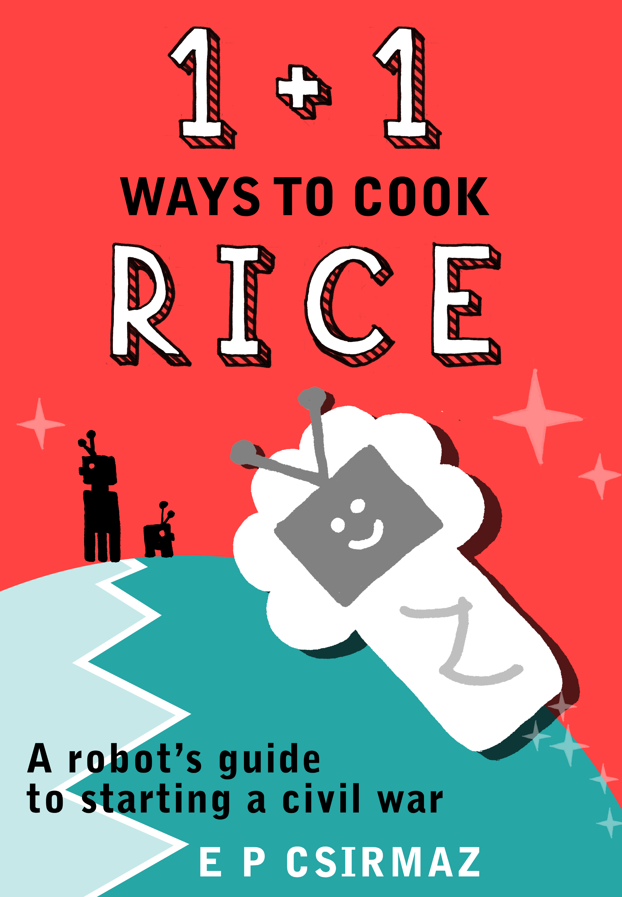

Elod Pal Csirmaz

On the sunny side of a planet named Glaucon, in the front room of a terrace house at 51°30'–0°3' Cable Street, Anaktor, Adda Frier creaked her neck as she turned to see Elb Washer appearing unexpectedly in the door that led to the entrance hall. The Friers were having a little party to celebrate the anniversary of the construction of Adda’s grandfather, Pattero. Half a dozen guests had already arrived, and the front door was left open as almost everyone was welcome, but Elb came without as much as an implicit invitation.
A second later everyone in the room was looking at him, falling silent in sinister expectation. His iron body was glistening in the harsh sunshine that poured down from the pale green patch of sky visible through the entrance. He was equipped with a plastic bag, which he clasped tightly, as if he was afraid that something might escape from it.
He cast a furtive glance around.
‘Here’s… a little something,’ he stuttered with his mouth drawn into a half-smile, and then, to the horror of the Friers and their guests, he emptied the contents of his bag—a slimy, putrescent heap of highly infectious grade-B malicious software—onto the phosphor-green pixelated carpet, and shouted, ‘Kiss my outlet!’ before he ran out and disappeared.
Now, this kind of behaviour was less than unbecoming of a government employee, and, more specifically, a tax regulator that Elb Washer worked as. Unacceptable though it was, it wasn’t surprising, as it was part of a long feud between the Washer and the Frier families. This is the story of this feud, how it started and how it destroyed Glaucon; and of a love that somehow escaped the end.
The planet which had the misfortune of carrying the two families on its back, together with all the other robots that inhabited their kingdom surrounding Cable Street, also happened to be crippled by an axial tilt of almost 90 degrees. It wasn’t born this way. Its difference was the result of a collision with a rogue protoplanet when it was still in its teens, which was followed by a short, but explosive relationship.
To cover its defect, the giant planet shrouded itself in green and blue clouds, and led a life of seclusion, renting the seventh orbit in the house of a stingy landlady who worked as an ageing yellow star. Patiently, it suffered the contempt of the solar system’s other occupants, as well as the effects of its handicap, which meant that for half of its orbital period, its feet got all the light and heat from the star, and it had to wait for almost a score Earth years until it could bask its head for a change.
The robots squirming under its heavy atmosphere on the sunny hemisphere were gladly unaware of the general disposition of their host. They enjoyed the constant sunshine, and although there were stories circulating about travellers who’d seen a dark world in perpetual night far, far away, they generally dismissed those accounts as fidgets of a deranged imagination. The robots themselves were all made of metal, and had quite consciously evolved into electro-mechanical machines optimised for their environment as each generation used the knowledge amassed by their predecessors to build better and better descendants. They had heads, usually one, as well as arms and legs, two of each, with nuts and bolts to attach them to their trunks; but because they were modular and jocular, sometimes they chose not to wear them all. They were also curious by nature, and drilled deeper and deeper holes into their planet to see what was inside, and they were lucky enough to have struck –, well, not gold, but something black and oily that they named oil. Some of the young robots with an entrepreneurial spirit suggested that this development would make them very happy, and it was fun at the beginning indeed. But they quickly grew tired of sliding up and down in the dark liquid like a bunch of schoolchildren, so—as this oil turned out to be a much better lubricant than the tiny marbles and graphite they used before—they set aside a small portion for the elderly and rusty with creaky joints to reduce the noise pollution, and they started to give away the rest of the oil to interplanetary merchants for free.
It was when King Sayn, their thin-armed and thin-legged monarch, figured that if those merchants liked this stuff that much, they could ask for something in return, that the oil really began to make them happy. They asked for ore, helium for the kids, multi-coloured crystals that they shot up into the sky, and many other pretty things, and, unlike their planet, became quite content with the way things were. It has to be noted that not much later, the King was forced to sell the oil wells to the private sector to steer the country out of a recession, and that most of the wells dried up soon after that anyway, but this is not a case study of alien economics. This is the story of a basic, all-encompassing question that was about to transform life on this planet altogether. And the question was: how to cook the perfect rice.
Slowly and gradually, this issue grew in importance to the point that it threatened to overpower and destroy Glaucon’s robots. For it is said that you lose all the flavour of rice if you rinse it before cooking; instead, you should sauté it in a dash of oil first. To be more exact, this is what Pattero and the rest of the Frier family said. The Washers were of the opinion that you should do the exact opposite. Rinse the rice thoroughly to get rid of the unhealthy and sticky extra starch, or, even better, soak it for a couple of hours to save cooking time and fuel, and avoid destroying the delicate grains with excess heat. Pattero Frier’s elder brother, Kantro, had the audacity to ask why anyone should give a tinker’s about cooking rice this way or that way, as it was only needed for an obscure ritual performed each week during which robots were supposed to drop a grain of prepared rice into their batteries, where it immediately disappeared in a bubble of sulphuric acid. No one was sure why this was important, or how the rice was supposed to be prepared, but they replied to Kantro that it was about principles, and told him to shut up. (Now this wasn’t something particularly hard, as Kantro had been dead for some time by then—save for his left hand, which still worked with all the servos intact, and which Pattero had decided not to take to the junk yard with the rest; instead, he’d placed it on a shelf on a nice doily next to a porcelain vase. The only problem was that Kantro kept falling off when he became agitated and started to gesticulate too vehemently.)
Elb’s visit was far from being the first incident between the Washers and the Friers. Just a week before, it was Pattero Frier who’d spent hours marching up and down Cable Street running his fingers through the brittle coils of wires that decorated the top of his head and shouting into a megaphone calling the Washer family names, successfully ruining a party organised to celebrate the age of Elb’s mother, Mumha. And then, before that, it was Mumha Washer, a strong, stocky stay-at-home grandma, who’d sent an anonymous letter to Pattero’s son, Ricco, telling him that his father was an S.O.B. and other really not nice things, probably the worst of which was a ‘rice-burner.’ To avoid any confusion, she’d also signed the letter using her real name, ‘so that,’ she said, ‘those clowns would know which way the wind blows.’ And before that, Ricco had dumped some garbage in front of Mumha’s house, with a note pinned to the top of the heap saying ‘Rice drowns here.’
There might be some who’d say that such a difference in culinary conviction is not profound enough to cause all this malice, enmity and anti-social behaviour. Those observers are wrong. Emotions are always irrational, even if they are merely simulated. Still, to show that there might’ve been something else going on in the background, let me let you in on a secret not many knew. What was common knowledge was that Mumha Washer, the widower, and the elderly Pattero Frier, seeing that they were not going to become any younger, and that they were actually getting closer and closer to the feared Blue Screen of Death, embarked on something that could best be described as an amorous relationship. The couple enjoyed the unanimous support of both families. The Washers were not particularly rich, but had members high up at the Court of the King, while the older Frier brothers, Pattero and Kantro, were the shareholders in the profitable cloud factory of the family. The factory didn’t do much apart from turning blue clouds into green ones and vice versa, but the robots habitually got bored with the look of their sky, so it was a never-ending business generating a steady income. Mumha’s and Pattero’s romance could’ve got the Friers more influence in politics, and the Washers some capital to yield at least a bit of weight to what they wanted to say. But what almost no one outside the families knew was that unfortunately, just before the solemn ceremony of conjoining two citizens in love by exchanging their remote access encryption keys, Mumha and Pattero fell out, and the marriage fell through.
At the time not even family members knew exactly what had happened, but gradually it transpired that the straw that had broken the eye of the needle was the way to cook rice.
‘What are you doing now?’ Pattero asked in a low voice on that fateful weekend as Mumha, wearing brown paint and an apron that was large enough to cover her stout torso, was standing in his kitchen, holding a colander under the tap.
‘What?’ Mumha snapped with flashes in her tiny black eyes, and then, remembering that they were supposed to have made it up after another row, quickly added, ‘I can’t hear you over the water, love.’
‘I said: what are you doing?’
‘Why, washing the rice, of course. You said you wanted to do the rice now, and you have to rinse it well before cooking, you know.’
‘No, honey, you don’t wash the rice.’
‘No? What do you do with it, then?’
‘You fry it.’
‘You do what?’
‘Mumha,’ Pattero said after a short pause, ‘I don’t think it’s going to work. It’s not you, it’s the way you are.’
And that was it. They parted on amicable terms after three hours of shouting, crying, and hurling old cathode ray tube screens, mainly at each other. Both accused the other of subjecting rice to unspeakably cruel and brutal treatment, and became certain that their now insignificant other must be missing some transistors upstairs. Then, Mumha left Pattero’s kitchen and house for good, and both of them made sure that their families knew what they thought of the other.
They succeeded surprisingly well in this endeavour, and quickly convinced their kindred that those who had the electrons of the other flowing in their veins, and, in general, anyone who disagreed with their way of cooking the revered seeds—the way that had allegedly been passed down from Version One through innumerable generations—must be of unsound mind, someone who cannot be trusted, and might actually be dangerous until converted to follow the right path. And so it began.
‘Help me with this mess, and then, after that, maybe,’ Feina Frier replied to her daughter when Adda, casting down her otherwise restless eyes, asked whether she could go outside to the rest of the kids. The sun was warm; it was after school, and under the thick green sky, where there wasn’t much traffic, the suburban streets were full of young robots playing noisily. But Adda was left to help her mother disinfect and update the carpet in the front room after their guests had fled the house in terror seeing what Elb Washer had brought. She hated updating, because it always stained her fingers, ruined her off-white enamel on the arms and the knees, and, to make things worse, she knew this wasn’t the real reason why she had to stay. It was because her mother must’ve suspected she wanted to meet Cynd Washer, the son of their unwelcome visitor. And, as most of the time, her mother was right.
‘This has really got to stop,’ grumbled Feina as she hunted down the last piece of malicious software with a pair of tongs.
‘I’ll make Elb regret this,’ hissed Ricco, a lean, angular piece of metal standing in the kitchen door, with deep-set eyes burning with anger.
Their father, Pattero, sat silently on a glass armchair, resting his left fist on a cast-iron coffee table. Of the two Frier brothers, he was the one sporting the title of MD in their cloud factory, but in reality, that didn’t amount to much, as everything had long been completely automated because of the constant bickering between his and Kantro’s side of the family.
Both he and his son had long, curly hair-like wires attached to their skulls that they constantly fidgeted with. Many regarded this useless extension as an arrogant display of vanity, but as it had been passed down through generations of Friers, Pattero and Ricco never considered abandoning it, and wore it with pride.
Time passed slowly; the front room of the Frier house had been cleaned up; the latest virus definitions had been downloaded, and Adda, as she lay down in her tiny bedroom and tried to listen to the voices coming through from the living room to see whether they were still very angry, imagined what she and Cynd would be doing. She knew he had the wrong type of electrons, but still… they’d run along the road to see who gets to the little patch of wild screensavers first, and laugh all the way there with Cynd’s cubic head glinting in the white sunlight. Then, they’d just sit on a bench pushing each other’s buttons until… well, until it would get late, and Feina would come to fetch her, looking at Cynd as if he was an ugly toaster. And she’d feel like running back to tell him that no one meant to hurt him, but would only dare to look back for a moment, and see Elb also coming from their house on Cable Street for his son, and she’d quickly turn back and walk closer to her mum, and try to be as little as she could.
The voices grew louder, and Pattero said something about taking the matter to the Court and going straight to the King, because enough, as they say, was enough. But Adda felt exhausted, and the sounds got lost in a swirl of colours; and, for all she knew, she might’ve only heard their planet cursing the old protoplanet, or praying for another one to come.
Mere hours after Elb’s unwelcome visit, Pattero Frier, surrounded by his family, stood in front of the King in the presence chamber of the Palace in Anaktor, the capital city of the kingdom.
‘And that,’ he grinned as he closed shut the briefcase he’d placed on the sulphur-coloured velvet carpet, ‘concludes our presentation.’
The King paused for a second, twiddling the bite-marked arm of his spectacles. His torso was disproportionally broad compared to his arms and legs, which he could get fixed, had he the time and courage. He was seated uncomfortably on the throne made of satin-black slate. Behind him, there was an ashlar wall lavishly inlaid with emeralds, sapphires and topaz, which were illuminated by the sunshine pouring through the square windows divided into grids of glass cells. His enquiring eyes wandered from Pattero and Ricco to Feina and her daughter, and back.
‘Say, that bright stone on that silver ring,’ he said at last, leaning forward, ‘is that a real white dwarf from Andromeda?’
‘Yes, Your Majesty,’ said Ricco.
‘And that black spall on that golden chain, is it really a piece of the Great Void?’
‘Yes indeed, Your Majesty.’
‘Mr Godnor would be thrilled.’
‘We hoped that he would find these trinkets to his liking, with his profound knowledge of all the stars and the cosmos,’ replied Feina curling her firm lips into a smile, and bowed.
‘But,’ Sayn said, putting on his glasses again and raising his voice, ‘we mean this is all very fine. However, the long years in this profession have taught us that there’s only one thing that can make you not want something you’ve got, and that’s to want something even more that you haven’t. So, our question to you is, what do you want in return?’
It was not before King Sayn’s head started to show signs of wear where the crown was attached to it that he realised this basic truth, and it was remarkable in itself that he’d reminded himself of it when facing his most dangerous enemy: things offered for free. And although this can be in part attributed to his distrust of the Frier family, what made it truly exceptional is a hardly negligible circumstance about his household, namely, that it included the ‘other King,’ Mr Godnor. Now, Mr Godnor was not a clothes queer or a fitness fruit who’d throw a fit to get hold of the latest achievements of the cosmetic and fashion industries, and newer and newer spare parts to replace the scratched and wrinkled ones. But he had an obsession with science in general and nature in particular, which he pursued on a level that we could best describe as below amateur, but which seemed quite advanced on his own planet. He was not ashamed to keep asking Sayn for obscure (and usually very expensive) instruments and the rarest substances that could only be found in galaxies on the other side of the Great Void, and to say that it was all for the advancement of science, not his own benefit. And, sometimes, the King couldn’t help but wonder if that handsome sum he’d spent on ‘basic research’ and the little holes that his significant other insisted on blowing with his chemical experiments into the walls of the Royal Palace would really make their world a happier place, or at least add a couple of points to his approval rating—something which he watched with the anxiety of a politician standing for re-election. All in all, Mr Godnor’s existence made the Friers’ lavish offer somewhat hard to reject.
‘We,’ Ricco Frier replied cautiously to Sayn’s question, ‘we thought it can never hurt to give our King a present.’
He looked at the King with his springy hair waving confidently, but Sayn remained silent.
‘By which we mean,’ Ricco’s father was quick to add, ‘that we’d be much indebted if Your Majesty accepted our gift of unworthy knick-knacks, so that we could show our gratitude for having such a wise and just monarch.’ If Pattero had bowed any lower, he could’ve kissed the reverse side of the carpet.
‘We guess you mean that we’d be much indebted,’ replied the King in a matter-of-fact tone. But before any of the guests could’ve replied, Adda, recognising a familiar voice in the high-pitched chatter that filtered through the square windows, whirled round and shrieked, ‘Cynd!’ as she ran out of the room and down the stairs.
Although it was after school, she didn’t even dare to hope that Cynd might be at the Court, although he, as well as herself and a number of other children, was always welcome at the Palace and in the surrounding gardens in the far corner of Screen Park. (And Mrs Beetemle, the middle-aged wife of the Chancellor, always had something nice made for them for tea.) Pattero frowned, but remained silent because he didn’t want to direct the King’s attention to the ongoing squabble; Ricco frowned, but remained silent because he couldn’t really think of anything to say, and Feina frowned, but remained silent because as a mother she couldn’t agree with Pattero more that Adda should keep coming to the Court and benefit from being in favour with those in power.
What they didn’t realise, however, was that to remain silent had taken them a little while, which even Sayn had noticed.
‘We cannot help but observe a certain… lack of affection in your behaviour when it comes to the family of Mumha,’ he said. ‘Before this audience ends, we ask you to tell us your reasons for that.’
Throwing caution to the wind, the three Friers started gabbling like wound-up tin birds on an artificial tree, telling the King that the Washers were primitive, superstitious and abnormal creatures who believed in and did things that one shouldn’t, and who were not worthy of the attention or trust of a well-behaved citizen. By the time they’d finished, their eyes were flashing with anger.
‘Is there a particular reason,’ Sayn insisted, ‘why you dislike them so much?’
They were, at first, not entirely sure how to reply to such an obvious question. Finally, it was Ricco who burst out, ‘Well, they wash rice for a start!’
‘Yes, we’ve heard about that nonsense. And is that all?’
‘As if it wasn’t enough!’ Feina said in indignation.
‘Indeed,’ replied the King, with a certain uncertainty in his voice. ‘Notwithstanding this little incident, we do thank you for your consideration and for the extraordinary gifts you have offered. Following the customary protocol, we will refer these to our household, and you can expect a response in the coming months. Please bear in mind that due to the volume of offers we receive, we might not be able to reply before… well, before next week.’
And with that, the visitors bowed and backed out of the presence chamber, and quickly left the castle without trying to find Adda so as not to make things even worse.
King Sayn liked listening to the twittering of children, tamed into some indistinct chirping by the windows of the throne room. He regarded them as innocent creatures yet untainted by negative parameters like greed, hunger for power, or monosexuality. He usually let them play in the Clock-Rate Court, even though the hand-knotted cloud elaborately ornamented with exotic motifs that hovered over the court quickly got worn down by the zigzagging little heads, and had to be replaced regularly at no little expense. This was all the more important as this cloud was the one that obscured the adventurers’ way in the neighbouring Mega Maze, where a holographic projection of hedges, resident daemons and creeping currents were installed to distract adventurers from reaching the last remaining part of Version One in the centre, a precious item in the King’s collection of rarities displayed on a richly decorated pedestal of zero gravity. Having dashed out of the silvery double doors into the court, it only took seconds for Adda to catch sight of Cynd. Without a word, they ran into the Maze, and found their special spot in a dead-end, where a friendly daemon used to tell them stories of pirates from other galaxies, and offer them holographic treasures made entirely out of light. Although the daemon was nowhere to be seen, the generated hedges offered them some seclusion from the other children, and they decided to stay there for a while.
‘I didn’t know you were coming here,’ Adda said as they plumped down onto the concrete.
‘I just hoped you’d be here,’ Cynd replied, looking straight at his shiny toes.
He was a fine piece of work, slender-built with a rectangular head and watery-blue eyes, but, like most kids at his age, he was often moody, and then he slouched around, keeping his eyes on the ground, seemingly not giving a damn about anything. During these times he even neglected to brush and polish as he was supposed to do because he, like his father, wore no paint or enamel.
‘I… I just wanted to say sorry for what my father did,’ he said.
‘Oh, this stupid rice-thing,’ Adda said, clenching her fists. ‘Maybe our parents should just grow up. Everyone in the street thinks they’ve all gone nuts.’
‘So you’re not mad at me?’
‘It wasn’t your fault, was it?’
‘No, but I went to our place after my dad had come back, and you weren’t there.’
‘I had to help mum clean up the mess.’
‘I’m sorry,’ he said, and continued to stare at his lower extremities.
‘Oh, quit sulking. And don’t make me beg. I’ve told you I’m not angry. Can’t we talk about something else? I’m so fed up with this whole thing.’
Cynd raised his head, smiled, and said, ‘See, now you’re angry. I like it when you’re angry.’
‘Oh really?’ Adda’s cheeks heated up. ‘Then why didn’t you come and pour that bag of stuff on our carpet? I’d’ve been real angry then.’
Cynd remained serious. ‘I would never ever do something like that. I wanted to go round and help you and your mum, but I thought Ricco would throw me out. I’m sorry.’
He stretched out his arm in search for Adda’s hand, but her fingers moved to hide themselves like a flock of frightened messengers. It was only then that Cynd saw her nails.
‘What happened to your fingers?’
‘That,’ she said, slowly raising her hand (as there was no point in trying to conceal the obvious anymore) and looking at her tapering white fingers with distinct yellowish stains as if she’d seen them for the very first time, ‘is because we’d run out of gloves, and we had to update the carpet with our bare hands. You should see mum’s elbow. It’s all yellow.’
‘I’m so sorry,’ repeated Cynd wondering whether he should add that her fingers looked all the more beautiful with that stubborn residue. Ultimately, he decided that that would perhaps sound too old-fashioned and hollow, so he said, ‘I’ll never let anything like that happen to you again, come what may,’ which, of course, was much more original. But we tend to forget that it’s often been the zeal of the young that has changed our world for the better, and that such sentiments are never to be taken without due seriousness.
‘I’ll figure out how,’ he went on, ‘but we’ll have to leave. I don’t want to live in a place where we’re punished because of something we can’t help.’
‘Yes, that would be nice,’ she smiled, suddenly realising that they were already holding hands. ‘Somewhere far away, in another galaxy, a little house with a little kettle that would be so happy when we get home… Well,’ she sighed, and wanted to add something about the importance of unattainable dreams in life that her mother used to talk about when a strong, brassy voice penetrated through the mirage hedges.
‘Don’t tell me they fell for that nonsense,’ the voice said. The two lurkers recognised it immediately: it belonged to Mikke Beetemle, the Chancellor. ‘I can’t believe they’ve sunk that low. I got intel from one of our plants that they were planning to stir up the neighbours, but I would never have imagined… Those Friers would stop at nothing.’
‘What?’ Adda whispered, with a mixture of surprise, fear and resentment. ‘Those Friers? And a plant?’
‘Shh!’ Cynd hissed, and the voice continued.
‘Who knows what they want with this delusional obsession with frying? As if nobody could make a decent bowl of rice anymore. Frying, frying, frying everything! A bunch of nitwit pyromaniacs. I think it’s high time we got together to figure out how to stop them.’
Somebody else replied, but the imaginary hedge muffled the high-pitched sound.
‘Yes, I agree, we can do that,’ Mikke replied, ‘and, actually, I think we should. I’ll talk to Mumha and Elb, and I’ll try to find Cynd before it’s too late.’
Adda waited for the voices to die away. ‘And I thought we were free from that stupid thing here. And what did Pattero do to the neighbours?’
She looked at Cynd. A large, dark blue cloud crept in front of the sun, and cast a wintry hue over the maze. ‘I so wish it would be over.’
‘I’m afraid it’s only the start.’
‘We’ll have to be strong,’ she said, but it sounded like more a warning than an encouragement.
‘We are strong.’
They got up to leave, and as they whisked off some creeping currents that had climbed up their legs, Cynd, trying hard to keep his voice from faltering, asked, ‘Why do you think he wants to find me?’
They didn’t know. But, as it turned out, it was already too late.
Soon it became clear what the Friers had done with their neighbours. They started to involve them in what hitherto had only been a dispute between two families. They did it by reviving an old custom that had been forgotten since Version Three came out of beta testing: they started to talk to them. The neighbours were a bit surprised: they used to think the Friers were good-for-nothing dimwits because they made their living out of clouds and thin air. And the more the Friers talked, the more the neighbours felt better informed, enlightened, and extremely grateful for the wise guidance they received. They now knew, for example, that clouds were made of little particles, that were, although invisible to the naked eye, tiny clouds themselves (for what else could a cloud be made of?), which, in turn, were made of even tinier clouds, and so on, ad infinitum (which sounded very nice). They’d also learnt that earthquakes were not caused by tectonic movements, as they had previously thought, but by the sighs of their discontent planet brooding over the sad fate of the Universe and the inflated real estate market. (Incidentally, they happened to be right on that one.) Oh, and they also mentioned that the way to cook rice was to fry it, and, while there were some who thought otherwise, they clearly didn’t know what they were talking about.
But the Washers didn’t sit on their laurels, either. They set out to advocate the beneficial effects of water and washing things, like getting rid of invisible germs and other e-mail worms living on the surface of fruits and meat (whose existence every true Frier would deny), or money washing, which sounded much better than laundering; or, the best of all, diluting one part mercury in nine parts water, and then diluting one part of this mixture in nine parts water again, and again, and again, until the whole thing turned into a block of gold. (Some tried, but it never happened, not least because water and mercury don’t mix too well.) Now this endeavour was tricky because water was known to cause short-circuits and rusting, and was the cause of many fatalities, but the Washers’ patented wash-it-and-throw-it-away diet proved to be quite popular, which happened to prescribe that of all aliments, rice was the most important to be washed, or else.
Before long everyone in Anaktor knew about the debate around rice. The mayor had to issue an official ban on rice throwing at weddings, as the mere sight of the dreaded cereal was enough to upset guests and spark off fiery debates and violent fights. A week into what everyone started to call—after the sensationalist headline of a tabloid—the War of Rice, the police had to dismantle some traffic lights that showed red or green according to the culinary persuasion of the approaching driver.
As more and more robots began to shun the ones on the other side, and call them torturers and perpetrators of crimes against ricekind, it became more and more difficult for Adda and Cynd to stay unseen and safely spend some time together. Instead, they sent lengthy secret messages: Cynd wooed Adda as ‘a rich jewel in the ear of the Cosmos,’ and Adda tried her pen at poetry. In one of her love poems evoking the fire in his gaze, she wrote:
Two of the fairest stars in all the skies,
Having some business, may persuade his eyes
To twinkle in their place for them instead…
What if his eyes were there; they in his head?
It went on and on, but this vision alone was enough to scare the shit out of poor Cynd, who was all the more bewildered because he couldn’t really understand what the poet wanted to say.
But it all ended when their fathers, Ricco and Elb, found the children’s little eight-legged messenger bots hiding under their beds, and decided to take them away for a whole week amid much crying and stomping and metallic sparks. But it all had little effect in the long run.
For whenever Lady Luck was on their side, they still managed to arrange a brief rendezvous. On these occasions, they usually met in an abandoned office building on Edgwire Road, and, having climbed over the railing and through a broken window, they brought to life all the printers, telephones, calculators and electric staplers, and ruled over them in an imaginary kingdom where everyone was equal (except for them, as someone had to be in charge, and for the paper puncher, who always picked holes in their speeches to their subject office equipment).
Then they would just sit there, hand in hand, under the flickering light-blue neon lights, forgetting the scattered spreadsheets, chairs and buzzing fax machines, and talk about the things to come.
‘When I grow up, I want to be an engineer,’ Cynd said, ‘and I’ll build the best house in the world for us.’
‘No, I want to be an engineer,’ Adda pouted. ‘I’ll build a machine that can broadcast sense into everyone’s mind so they would be nice to each other.’
‘We can both be engineers.’
‘Oh yes, we can, can’t we?’ Adda said, and laughed. ‘We’d move in the house you’ve built, and have lots of children! And they’d be better than anyone else, because we’d know how to make them perfect.’
There was a moment of silence before Cynd squeezed Adda’s ivory-coloured hand a bit more, and looked at her.
‘Would you really like to build children with me?’
Adda was no longer young enough not to comprehend the weight of the question. She looked into Cynd’s blue eyes, and suddenly felt as if she was falling weightlessly into the depths of his starry gaze with an ever-increasing speed, flying through a universe without black matter amid galaxies of happiness and common good. Her nod was hardly visible, and her ‘yes’ hardly audible, but they made Cynd Washer the happiest machine this side of the Great Void.
Just minutes after they’d got home, a special edition of a topical debate show started on the newscloud, where celebrities and scientists specialising in carbon-based life forms took up the debate about rice. There was a deputy advisor from the Court who made a brief remark about the nonsensical nature of the matter at hand, and then remained silent for the rest of the show. But questions from the studio audience overwhelmed the rest of the panellists, and, at one point, a security guard had to intervene when a heated exchange almost lead to Ms Hill, a Version Three-Five ex-actress and a promoter of the washing diet attacking Mr Taylor, a teenage star who had unfortunately grown up, but had suddenly developed a flair for frying, with an inflatable prop dinosaur.
Looking back on these events, it seems that this debate played a twofold role in the history of Glaucon. On the one hand, it instantly spread the debate from Anaktor across the whole kingdom. On the other, it was the very last time someone dared to sound the conviction in public that this rice-thing might not be the most important question of all. There was, for example, the uncertainty about the meaning of existence; the question about Life, the Universe, and Everything; and then, of course, if you want fries with that. And as it was less and less possible to say that it was a non-issue, it was less and less possible to think so as well. Allegedly, there were underground meetings organised for the rice-deniers, where they would sit in a circle and share stories before chanting ‘Wash or fry? Die, die, die!’ for hours on end, but then someone pointed out that even denying the importance of rice was about rice, and that all the denying actually made it more important, so the meetings were stopped, and these unfortunate creatures were heard of no more.
There was no longer any need for robots on one side to talk to or interact, in a civilised way, with those on the other. Society filed for divorce from itself on the grounds of unreasonable behaviour, which was to be demonstrated based on the culinary practices of the parties. The secretary of the Royal Society of Science, who happened to be the father of the ex-wife-to-be, argued that a failure to follow universally accepted ways of preparing food by washing it was a sign of anti-social tendencies, aggression and dementia, and went on to present photographs taken of the husband performing the rice ritual. His statement had the immediate effect that half of the members of the Society resigned, and founded the Royal Society of the Sciences, with Emphasis on the Plural, and asked their doyen, who, by mere coincidence, was a close friend of the husband, to deliver a speech entitled ‘The Essential Role of Fire and Frying in Turning Carbon-Based Life Forms into Machine-Degradable Matter.’ The courtroom was first filled with excited chatter and disbelief at the husband’s folly, then things turned, and the spectators started to laugh at the stupidity of the wife. There was no golden mean. You sided with either the woman or the man, and waited anxiously for the divorce to be granted. And it was, without further ado.
As society went its separate ways, everything had to be divided. Apart from the two science societies, there were now two state-owned radio stations, two cab firms in each city and district, and some even suggested that there were two countries at exactly the same geographical location. But as always, deciding what belonged to whom in a household during a divorce was not an easy thing to do.
Mr Slick, the CEO of Monopoil, the company that took care of extracting and selling the oil, had its fair share of the divorce proceedings. Being convinced that the King would have no option but to accept the Friers’ gift, he paid a short social visit to Pattero, presenting him with a bottle of fortified oil from the marvellous 34782 vintage. His son, Thom—who had not followed in his father’s footsteps, but, instead, had decided to pursue his dream of becoming a freethinker and existentialist playwright, but had had to sell his body, one plate at a time, to support his children as his plays had never really got on—so, he heard about his father’s latest whim on the local newscloud. Or, to be precise, about what he hoped to be a whim.
‘So, I hear you’ve got rid of another 34782 bottle,’ he greeted his father in the luxurious executive office decorated with marble and leather and a wallpaper that made it look rather like a tawdry honeymoon suite.
‘Never had a better investment,’ Mr Slick said, offering his stumpy, limp hand attached to a short arm. ‘What brings you to this side of town? I haven’t got a bob.’
Thom ignored the habitual remark. ‘You might’ve picked the wrong party.’
‘What party?’
‘You know what I’m talking about.’
‘I might, but then, I might not. And I sure as hell haven’t got the time to listen to you hinting about the bush.’
‘Oh, for crying out loud, look at those snotty scabs you’re playing up to now! All they’ve got is that laughable air factory and a firm belief that they alone guard the Secret of all Secrets.’
Mr Slick stopped pretending to be busy for a second, and stood there, perplexed, with all the transistors behind his shiny forehead running to and fro looking up every bit in his memory. ‘Oh,’ he said finally, ‘that rice thing.’
‘Exactly.’
‘Yes, they all seem to be wound up about it for some reason.’
‘For some reason? Can’t you see they’re a bunch of delusional pyromaniacs? And you sided with them!’
‘They like to fry their rice. They’ve got every right to do that if they want to.’
‘Fry rice!’ Thom shouted in horror. ‘Fry rice!’
Mr Slick started to lose his temper. ‘Well, I happen to like some oil on my rice, too.’
‘I can’t believe you just said that.’
‘It might have something to do with this company.’
‘Then I don’t want to have anything to do with it.’
‘Don’t worry, you don’t. You’ve decided to be free. What that means is that you want the money, but don’t want to know how it’s made. Well, I’m sorry, but you can’t make rivets and not use some metal.’
‘Well, I hope it’s nice to live on rivets, because that’s all you have now.’
‘It’s not that bad, thank you for asking,’ Mr Slick retorted. ‘I notice you’ve got less and less of them. And, while we’re at it, how do you think rice is supposed to be cooked?’
‘What’s wrong with washing it?’
‘Oh, there’s a real free thinker, above all the petty quarrels and material constraints!’ Mr Slick said triumphantly. ‘You’re mad at me because you’ve sided with the Washers.’
‘Well, at least they have a say at the Court.’
‘And as for me,’ Mr Slick announced flatly, ‘I think the Friers may be the next big thing in this country.’
‘No,’ Thom said, stepping back. ‘You wouldn’t do that.’
‘I’m not doing anything.’
‘You’ll help them. You’d sell your soul to the highest bidder.’
‘You’re selling your body.’
There was a moment of awkward silence as Thom took another step back.
‘This was the last time you saw me.’
‘It’s been a pleasure.’
After the door had closed, and a few seconds had passed, Mr Slick noticed a little piece of metal gleaming on the marble floor. Puffing, he bent down with difficulty to pick it up. He recognised it in an instant. It was a tiny piece from Thom’s little finger. Carefully, he carried it back to his desk, put it in a paper handkerchief, and folded it to form a little bundle. Then, he looked around, and found an envelope in the top drawer. He put the tiny packet into it, checked once more whether the piece was still in there, and carefully sealed the envelope. He spent some time applying duct tape to its corners and edges before he slipped it into his vest-pocket, making a mental note to have a little box made, maybe of steel and velvet, lest the tiny piece should somehow get lost.
Although the divorce was final, it felt as if the husband hadn’t moved out—both the Washer and the Frier sympathisers needed a way of ensuring that they didn’t accidentally meet or see anyone from the opposite camp. They didn’t need to wait long.
It was Milo Frier, the left-handed Kantro’s middle-aged son with a remarkably large, round head, who first thought of choosing a single symbol to make official badges for themselves and like-minded fellow Friers. He suggested an abstract drop of oil, as it was necessary to fry rice, but it was also intended to hint at the budding relationship between the family and Monopoil. The Washers had a harder time selecting a suitable emblem. They agreed outright that an actual washer was out of the question, but couldn’t settle on anything more specific. Mumha liked the idea of a pot very much; Elb suggested a tap or a lead pipe, but the family assembly selected Cynd’s suggestion, a flame, which represented freedom and power, and was also needed to boil water for their preferred way of cooking.
So both families ordered the badges, enough for themselves and some more for friends and patrons, and urged everyone else to do the same. The badges etched the front line clearly and visibly on the social map of Sayn’s kingdom. In a way, this was good. Unpleasant surprises and genuine argumentation suddenly became few and far between. You knew whom you were dealing with straight away, and either instantly hated them for no apparent reason and turned aside, or loved them for no apparent reason and greeted them with a wink and a smile.
Or, rather, it had that effect on the Friers until they saw the badges the Washers had designed. Their hearts sank at the sight of the small flame. They immediately realised how powerful a symbol fire was: full of strength, potential, and cultural references. In contrast, oil looked sleek, slimy, and somehow inferior. Having run out of ideas themselves, they decided to do something really iniquitous. They had badges made that had not one, but three tongues of flame, and were much bigger than the Washers’ ones as well. Then, they painted their house red and yellow, and organised a torchlight procession through the city. Their strategy was successful. Soon the Washers’ single flame was regularly mistaken for the Frier emblem, and the Washers were forced to abandon their original idea, and choose water as their sign, which was a more suitable symbol for washing anyway.
Adda started running toward Cynd as soon as she caught a glimpse of him at their next rendezvous on Edgwire Road. But instead of stopping when they met halfway, she simply ran into him and knocked him over.
‘Loser!’ she laughed, and continued running.
Cynd, more stunned than hurt, got to his feet, and dashed after her. By the time he caught up with Adda, she was already busy removing her flame badge, hiding in a short alley just off the main road. Her eyes were frightened when she looked up.
‘Cynd! I’m so sorry. I hope you’re not hurt or anything.’
‘No, but what’s gotten into you?’
She dropped the badge in her pocket. ‘I forgot to get rid of this damn thing.’
‘And?’
‘And you’re wearing yours,’ she pointed at Cynd’s chest. ‘And it would’ve been pretty suspicious if we hadn’t been fighting.’
Cynd wasn’t sure what to say.
‘I’m sorry, Cynd,’ Adda repeated. Her voice faltered as she turned away. ‘I so wish this whole thing wasn’t true.’
Mikke Beetemle, the Chancellor himself, was also busy hiding which side he was on. Before he left his residence for an emergency meeting in a dilapidated warehouse, he got a servant to spray graffiti all over his body in an attempt to disguise himself as a drunkard fallen victim to a practical joke.
The Chancellor, sufficiently camouflaged, tapped the pre-arranged binary code on the rusty door of the warehouse. It was Elb who let the latecomer in, and led him down a creaking escalator into the cellar the Washers had selected as the place for the meeting.
As Mikke’s eyes got used to the darkness (the cheap fluorescent equations hung from the ceiling didn’t help much), he recognised Mumha, who was seated on a pile of wooden crates, as well as Cynd and his mother, Nida, sitting patiently on an empty oil barrel among the other robots. Nida had warm blue eyes, which contrasted with her tall ruler-like body that reflected her profession perfectly. She was an engineer at the Civil Factory, with legs that were envied by all of her colleagues, even the male ones. And then there was Aved Hhan, an elderly professor of cyberiology and a distant relative of the family; Jot Nifli, the Lord Steward of HM Sayn, and six or seven other robots, each of whom was wearing the distinctive wave-shaped badge.
‘Mikke!’ Mumha greeted him. ‘I’m so happy you could make it. Sorry for not getting up. I’m rusty, and I don’t like oil. Anyway, I’m so happy to see you here. It wasn’t easy to get everyone together. We chose this place so that those from the Court could get here without the Friers screaming about undue influence over the King.’
Mikke smiled, and nodded towards the Lord Steward, and another robot he recognised as one of the grooms of Mr Godnor. Mumha turned toward the little group, and clapped her hands.
‘Hi, everyone! The Right Honourable Mikke Beetemle has finally arrived to honour us with his presence, so I’d like us to start straight away. As you probably all know, our good friends at the Court have heard rumours that Sayn is considering accepting the Friers’ so-called gift, which I think we have every reason to call a bribe.’ A couple of boos and hisses interrupted her, but Mumha gestured the robots to remain silent. She continued, ‘I don’t blame the King: the Court is short of money, and, under normal circumstances, I’d much rather he accepted some stuff from a bunch of oiks than raised the taxes. But, needless to say, it would be disastrous for us if he accepted the bribe, and we must prevent it in any way we can.
‘So let’s form a little network, put our processors together, and figure out something.’
So they formed a circle to start a round table-discussion without an actual table, and let their thoughts jump to and fro between their heads on glowing blue filaments suspended mid-air.
‘I think,’ started Elb, speaking as if he was balancing his words, ‘that we should also offer something to the King. That way, it would be clear to him that the Friers’ bribe would make him part of this war.’
‘But he knows that already,’ Mikke’s brassy voice echoed off the walls. ‘That is why, very wisely, he’s so far refrained from reacting to the gift in either way, even though he promised a quick reply to the Friers. If he accepts it, he’ll enrage those on our side. If he rejects it, he’ll alienate himself from Friers and co.’
‘And why would that be so bad?’ asked Aved, somewhat condescendingly.
‘It wouldn’t be bad. But perhaps it’d help if we offered something better than them.’
And so a desperate discussion started as they tried to find a suitable gift. The Washers had no money. There were a few more among their ranks from the upper crust, and had more influence in politics than the Friers, but that was all; and they really felt the need to put all their eggs in one basket if they wanted to avoid ending up with some on their faces. After two hours of brainstorming and arguing, putting things on a list and crossing them out, considering insider info and an outsider’s point of view; when Mumha’s battery started to ache, and the others were dying for a refreshing sip of electrolyte, as a last act of desperation, they agreed to offer everything that was still on their list to the King. It represented the brightest gems of their knowledge and expertise—the only thing the Washers could afford to give away—that they thought might interest Sayn. As they broke up the meeting, they pinned all their hopes on appealing to a little-known weakness of the King: that he’d always wanted to go down in history as the Great Sayn, the Undefeatable Commander and Conqueror of Neighbouring Things.
In the corner, Cynd shuddered as he felt the weight of a hand on his shoulder. He opened his eyes. Nida was gone; it was Mikke who’d woken him up.
‘Hello, young man,’ Mikke said. ‘How was the meeting?’
‘Oh, hi, Mr Beetemle. I must’ve slept through the second part.’
Mikke offered his hand because Cynd’s legs hadn’t come out of stand-by yet.
‘Listen, I wanted to ask you something.’
‘Uh, sure,’ Cynd nodded as he stood up and scrambled onto the escalator.
‘What do you think of Adda?’
Alarm bells started to ring in Cynd’s mind. His pale blue eyes widened, and he was suddenly fully awake.
‘Adda? She’s nice. Why?’
‘Nice?’ Mikke asked. Cynd felt him logging in to his mind, and taking a look around.
‘I see,’ he mumbled, knit his eyebrows, and logged out. ‘I’m sorry, Cynd, I wanted to talk to you before it happened. Now it won’t be easy, but I don’t want you to meet Adda again. I think it would be best for both of you. And for the family.’
‘But why?’
‘I think you know why.’
‘Well,’ Cynd replied, mimicking the favourite sentence of the courtiers, ‘I’ll see what I can do.’
‘Don’t talk back to me,’ Mikke snarled. ‘I may go and talk to your father about this.’
‘Please,’ pleaded Cynd, ‘please don’t bring dad into this, Mr Beetemle.’
‘The Right Honourable,’ Mikke rebuked the brazen youth. Cynd grabbed at him in a vain attempt to stop him, but the Chancellor was already gone.
Outside, he saw his father and Mikke walking away, deep in conversation. Elb looked at him, but Cynd didn’t dare to go any closer.
Soon after Mikke had returned to his residence on the Filehall, and then made his way back to the Court stinking of paint thinner in his formal quicksilver uniform, and after Nida and Elb had both got back from work, the ceremonial procession of the Washer family and Aved Hhan, an unquestioned authority on all things rice, set off from the other side of Screen Park towards the Royal Palace. Instead of a briefcase packed with galactic trinkets, they carried a giant flip chart easel that was remarkably good at competitive dancing, and markers and laser pointers in all the colours of the rainbow. Sayn seemed unusually happy to receive them, and everyone quickly found their starting positions in the presence chamber to perform the usual choreography of the high hopes and elusive remarks of a corporate presentation.
The Washers put on their best show. They used animated charts and creative statistics, twelve-dimensional projections and user-friendly language, augmented reality and diminished imagination to present what they had to offer. Sayn was on the edge of his slate throne when Nida and Elb explained that they had developed a secret, powerful weapon with which he could conquer the neighbouring stars and planetary systems. Imagine his surprise and dismay when he learned that the secret weapon was—rice. And plenty of it.
‘We are sorry,’ he forced himself to say, ‘for a moment we thought you said it was rice.’
Cue music; it was time for Aved’s solo step dance.
‘Think of it this way, Your Majesty,’ he explained, ‘multitude is strength. One mere grain of rice, just this large, does not amount to much. Just like an atom. If I happened to throw a 56Fe atom at you, nothing would happen. But what if I threw a cannon ball? It would have, if I may say so, a much greater impact. And the same holds for rice. We don’t plan to use a handful—what effect would it have apart from some minor annoyance? We’re proposing to use tons and tons in projectile weapons.’
The King still couldn’t believe his ears. ‘So you suggest that we throw rice at enemy soldiers?’
‘Yes.’
‘Are we marrying them?’
Aved panicked. The pitch fell out of tune, and the dance got out of sync. ‘No, no, nothing like that. I mean…’ He checked himself: he didn’t know what the King’s secret desires might be. So he quickly added, ‘Although that might not be an ineffective tactic either. What we are thinking of is to simply shoot them with rice.’
‘And?’
‘Rice has a number of advantages over usual projectiles. First of all, it’s much cheaper.’
‘But it’s softer than metal!’
‘It can still do a considerable amount of damage. And, if we use enough, it’ll also confuse the enemy, because that amount of rice is something they’ve never seen before.’
Sayn remained unconvinced of the plausibility of the suggestion, and put on a sez-you expression. Cynd moved to the next soundtrack, and Aved began a hesitation waltz to get around the problem. He cited his expertise in cyberiology and nutritional engineering, and, with the help of the others, went on to present the rest of what was on their list.
He introduced one of their recent inventions, the territorial rice, which spreads so quickly that no other organism or machine has the slightest chance of survival on a planet under attack. But the King said that he enjoyed the thrill of battles. Then he unveiled their latest project—still in beta testing, but showing great promise—, the sticky rice, which helps defeating an enemy army by slowing them down. But the King said that soldiers under attack were hardly likely to wait patiently until the rice grew around them. And then it was the end of the Washers’ list. There was nothing else to offer.
The King had already paid more attention to a tiny, gilded royal messenger bot than the guests, and when he released it and it scuttled into a hole under the throne, the Washers decided to admit defeat and take French leave. But before they could gather their props and get back to the green room, the messenger reappeared, and the King motioned them to stay where they were.
The golden bot climbed on top of the armrest of the throne. The King carefully held it between two fingers, and placed it on his left palm to connect to it.
‘You know what,’ he said, ‘we’ve just done a quick search, and there doesn’t seem to be anyone who’ve used rice as a weapon. We think it could add an element of surprise and take the enemy off-guard.’
‘Oh yes, yes indeed!’ Elb said eagerly, ‘Imagine, Your Majesty, what chaos such a surprise could cause in their ranks!’
‘We think so, too,’ smiled the King, with images of victorious marches and cheering subjects flashing in front of his eyes. ‘We think you should take these projects in that direction. Surprise!’
The Washers bowed; Aved grinned at Elb; Elb smiled at Nida; Nida looked at her son, picturing him as a handsome officer decorated with the Cross of the Nth Order, and Cynd looked at his toes wondering how much longer this whole thing would take.
‘But we mustn’t get over-excited,’ said the King; ‘we are to follow the customary protocol, and will reply to your offer having consulted our household. We thank you warmly for your visit, and bid you good-bye.’
Both families spent the next week waiting for the King’s decision. They didn’t do much apart from that, and from trying to avoid anyone associated with the other family like the plague. Their followers were much less timid, though, and pushed the debate in a new direction. Incidents on buses, in pubs, and in queues in front of softwarehouses were common occurrences. Scuffles regularly broke out between prowling gangs at fountains and oil wells, as sympathisers either tried to protect or destroy objects with clear symbolic meanings. And it didn’t help that Mr Slick publicly endorsed the Frier agenda, either. He claimed he’d had no choice, as oil had a demonstrable aversion to water, and no matter where oil went, Monopoil had to follow.
On one occasion, two elderly ladies met at a bus stop, both out and proud, one wearing a little flame, the other a wavelet. They hadn’t the intention to let an insult such as the presence of someone different than themselves pass unnoticed, and they grabbed the heavy brick-shaped magnets hidden in their handbags, and magnetised each other so thoroughly that the paramedics had to use crowbars and speed cutters to pry them apart. The incident received much publicity across the kingdom, after which the King was quick to summon both families to the Court.
‘My rebellious subjects,’ Sayn began, ‘enemies of peace! We wish you would bury the hatchet and that harmony be restored, so that we could live once more in peace like we used to do. Now, however, our wish is more than a wish: for we believe that the time has come to take a step back, back and forward towards peace.’
He was standing in the elliptical Feedback Hall, where intricate patterns on the quartz floor marked the two foci of the room. His sound was reverberated and amplified by the geometric walls, and was intended to awe Mumha, Pattero, their families and the dignitaries called to the King’s presence.
‘Towards peace,’ Sayn continued, ‘and towards harmony; a country where food does not make us enemies of ourselves, but makes us unite around the tables of homes, families, and of our great nation. Where seeds of rice are not seeds of hatred sown in the circuits of our fellow citizens, but seeds from which peace and plenty blossom when they reach the fertile grounds of our souls. Let us wish for that country, and let us step into that country now!
‘My peace-loving subjects! For I know deep in my heart that none of you wish to go down in history as the one that used a mere grain to try to derail our country and plunge it into the abyss of troubled times. Peace will prevail, so step into the future, and join us in celebrating the unity that belongs to all of us, all the descendants of Version One from the golden age of Pre-Alpha.
‘You all know that the family of Mumha has long been welcome at our Court, and that our politics, as well as these buildings themselves, bear the marks of their beneficial influence. However, to our no hidden disappointment, it is their feud with Pattero’s family that is troubling the streets of our cities. We ask you, as we ask the other side, to look upon each other as each other’s brethren; and so as to set an example, we hereby welcome Pattero and his family to our Court as well, and invite them to participate in its daily life. Moreover, in order for them to leave a tangible mark, we have decided to place in our collection of rarities the articles they have so kindly offered to us.’
Sayn looked around, waiting for the effect of his words. He smiled, but his spirits were low. He really fancied the new weapons of the Washers, but what he really needed was the income from the oil export. It was just after the end of the tax year, and the revenues turned out to be less than predicted. Raising the rates was out of the question because he was adamant about keeping his approval rating high, and the Friers’ trinkets, although they looked nice, didn’t come close to the billions necessary to balance the sheets. He needed the oil, too. And that meant treating Mr Slick and his chosen people well.
But it turned out to be bad news for the approval rating anyway. For the King had just lost the support of exactly half of his robots.
The sky was dark and tempestuous and unnaturally blue as three robots trooped up to the patch of wild screensavers, passed them, and entered the no-go area. Clad in superconducting sheets for protection, they were all wearing stock heads so that they couldn’t be identified. And one of the real heads waiting patiently on a kitchen table for its owner to return was that of Cynd Washer.
The screensavers that bloomed in the vacant lot halfway up Cable Street had gained a certain notoriety due to their convenient placement between the houses of Mumha and Pattero, which meant that they’d soon come to mark the border between the Washer and the Frier ghettos. Move one step this way, and you were shouted at, spat on and kicked in the teeth. Move one step that way, and it was you who punched the intruder in the face. There were ‘Washers keep out!’ signs on one side, and ‘A thought a day keeps a Frier away’ painted on the walls on the other.
One of the three robots was Dul, Aved’s son. He was all worked up, and kept shaking his fist at the shuttered windows and secured doors.
‘If any of them comes close, mate,’ he shouted, ‘I’ll shut them down with these two hands.’
‘You don’t need to shut them down; you just don’t fucking wind them up! Eh, Braxon?’ laughed Cynd, nudging the skinny third robot with his elbow. His face heated up with the excitement, and he’d completely forgotten the little screensaver bud hidden in his hand that he’d picked from the patch.
‘Get up here, losers! You’re clockwork! You hear me? Clockwork! Tick-tock!’ Dul and Braxon shouted in the deserted street.
A window was shut closed, and they bellowed with laughter. They tore down posters, kicked in fences, and generally made as much noise and nuisance as they could. Then they turned into a narrow lane that led to the edge of an allotment. There stood a dilapidated hut built from corrugated sheets. They knocked on the makeshift door, and an old robot answered from within. Instead of a reply, Dul tore up the door.
‘How do you cook rice?’ he asked the old robot.
‘I don’t cook rice,’ the robot creaked. ‘I’ve got no rice. I wish I had. Now go away.’
‘You know what we mean. Are you a Washer or a Frier?’
‘I’m not a Frier.’
‘You live in the middle of the ghetto, mate.’
‘This was the only place I could put this hut up. And I like it here.’
‘So you like it here?’
‘Yes.’
‘Not a Frier? Fuckin’ liar!’ they chanted, grabbed the wretched thing, and threw him out into a nearby ditch. The poor man, with his side dented and neck bent, scrambled to his feet, and hobbled away mumbling curses under his breath. Dul sprayed ‘Washer territory! Keep out!’ on the hut in large, blue letters, and they gave three cheers for themselves.
‘Look ’ere!’ Braxon pointed at a house as they got back to the street. It was the Frier family home. The other two had already started picking up stones and tiles from the front garden and pelting the door and the windows when Cynd got there. ‘This is for bribing the King!’ Dul shouted when one of the ground floor windows burst into a shower of splinters. ‘Hooray!’ Cynd was about to yell, but the sound stuck in his throat.
For in that moment, Adda’s face appeared in a window left open on the first floor. He hadn’t dared to contact her since Mikke and then his father had talked to him at the secret meeting. And, after the King’s announcement, he hadn’t thought he wanted to anymore.
She peeped down, and shrilled, with her voice quavering, ‘Who’s there? Leave us alone!’
Cynd just stood there like someone who hasn’t booted up fully yet.
‘Hey, what’s up?’ Dul asked. Cynd looked at him, and looked up again. The face was gone.
He swung back his arm, and flung the bud through the top window just before it was closed with a loud click.
‘Nice move! Whadicha throw in?’
‘I dunno,’ Cynd replied. ‘Just something I’d got.’
Such forays into enemy territory became regular events. Behind locked doors and barred windows, millions were riveted to the newscloud watching the more and more violent clashes happening in front of their houses, and their own and their neighbour’s cars being overturned and set alight. The smell of steam and burning oil, the sound of car alarms and sirens seeped through the windows, and settled in the rooms and houses that had once been called homes.
Elb and Cynd were arrested and released without charge five times that week, and Dul was locked up twice for carrying an opened can of electrolyte. Braxon, who was trying to get home from school after his first weed, giggling and hugging everything that got in his way, was hit in the shoulder by a mounted policeman so hard that his parents had to get a turner to make a brand new joint for him. His father, a certain Mikke Beetemle, went through the roof, and tried to have the chief police officer sacked on the grounds of incompetence. He couldn’t get anywhere, though, and the King refused to talk to him for three whole hours for attempting to influence an independent police investigation. The Friers also had some trouble with the police. Ricco narrowly avoided receiving a verbal warning after he’d poured fetid refuse oil on the asphalt in a busy intersection in the Washer ghetto, causing a predictable series of smash-ups. Milo was less lucky, and got fined for the equivalent of an hour’s wage when he kicked the grandmother of one of Nida’s friends in the head so hard that her skull cracked, and some of her bits leaked onto the pavement.
These developments got everyone thinking, and a tabloid used up all the front page of its next edition to announce, in over-sized letters, ‘The Police Are with the Friers—and So Are We,’ which immediately trebled its readership. The police was quick to deny any bias.
‘We don’t discriminate,’ the chief police officer said, ‘but we treat everyone as they deserve.’
Slowly but steadily, the robots of the fire were winning. They laid siege to Washer houses near the Frier ghetto. They regularly attacked and terrorised the occupiers until the Washers gave up and moved away wherever they could, without even bothering to try to sell their homes or lock them up—there wouldn’t have been much point in doing so. Frier teenagers broke in anyway and used the rooms to smoke pans in until they got tired of the wallpaper and kicked the place into pieces.
While life in the countryside was still manageable, the capital appeared to have adopted a strange cycle of hours of rioting, then cleaning up the debris, and then hammering out the victims and rioters who weren’t quick enough. King Sayn’s last attempt to get the situation under control was to impose a curfew, but it failed miserably. As there were no days or nights, no one knew when it was supposed to start, and that meant that the police were now free to apprehend anyone for breaking it. And somehow those anyones always turned out to be Washers.
It must’ve been just when the news broke that an old man, pleading in vain a couple of Frier teenagers to let him near an outlet, discharged beyond repair, and no one was accused of murder, that the first brick flew through the window of Cynd Washer’s room. Leaving a trail of glistening glass behind, it landed neatly on the bed. A cursory glance was enough for Cynd to see that it was from their dilapidated fence. The brick used to sit on the edge of the column that supported the rusty gate, and it still bore the markings he’d once made with the tip of his finger on the way back from school, after he’d been beaten up for the second time.
He heard shouting coming from outside.
As he rushed down to the living room, an ear-splitting clang filled the air, and a dent appeared in the metal entrance door. It was clear that it was about to give in to the weight of the robots trying to break into their house. Nida just stood there, her warm brown eyes filled with terror, and clasped her son tightly in her arms. But Elb didn’t lose his head. He sent Mumha to the back room, cleared his throat, and opened the door.
‘Can I help you?’ he asked. He was short, but quite sturdy, and stood in the doorway with hands akimbo, facing a group of about twenty robots carrying straightened scythes and baseball bats. A second passed in ominous silence. It was Cynd who spotted the arm raising a self-defence sparker and aiming it at Elb. He wrestled himself out of his mother’s arms, ran past his father, and jumped at the attacker, kicking and biting in every direction. The Friers closed around him. A door was shut. A white arc lit up inside his brain, and his processors started to execute his earlier memories, which ended in what programmers fear the most, a coma-like sleep and a segmentation fault.
Adda had long been gone. She’d stolen out of their house in a dressing gown after she’d heard what had happened at Mumha’s house. She passed the mostly inanimate body of Cynd hidden in the overgrowth three times; once she even tripped in a finger that his half-awake brain moved to extend as it registered a familiar form. Half mad with worry, she zigzagged the deserted streets that lay between the two ghettoes, not daring to call Cynd’s name or to call for help.
It was Nida who found the boy. Crouching down, with shaking hands she unlocked the little cover on his chest, pushed a few buttons, and started running a couple of checks. She had to hurry to get Cynd back to safety, so she forced herself to approach the problem as the experienced engineer that she was in her job, helping innumerable patients and machines. Hours seemed to have passed until the tests finished, but she was relieved to find that only a couple of memory segments were faulty. She quickly deleted them, obliterating most of the events of the previous hours for Cynd, touched the little pendant on her necklace that used to belong to her mother to give her luck, and pushed the blue button.
‘There’s a strong boy; there’s a strong boy,’ she kept murmuring as she followed all the system messages while Cynd was booting up.
How proud she was when Cynd was up and running again! As they were walking back to the house, a tiny blue spark sneaked past the engineer’s self-control and appeared in the corner of her eye—she was so proud of her son that he was brave enough to try to defend his father, and she was so proud of him that he was strong enough to survive his bravery.
But they say that every silver lining has a cloud. After they found Elb, who’d been looking for Cynd to the north of their house, and they returned home, Mumha showed them a note that someone had slipped under the door. It simply said, in so many words, that the Friers would be back.
After what they’d been through, everyone felt cheerful and relieved as the family packed their most valuable belongings in four small suitcases, as they took a bath, put on their Sunday best, and walked out the door leaving their home behind for good. They knew exactly where they were going: Chancellor Beetemle was kind enough to offer a couple of rooms in his residence to the family. His palace was conveniently located on the Filehall in the middle of the Washer ghetto, and they very much hoped that they’d be safe there for a while.
Adda only heard that they were gone after the Frier mob had gone back to Mumha’s house, and had found it empty. Her batteries had almost run out, but she still couldn’t force herself to rest. She’d already reprogrammed all her messenger bots to scuttle to Cynd’s room, send some photos back, and start looking for him; but the city was big, and the bots were small, and two of them got trampled on in the first hour of the search. She wished she knew something about Cynd, anything at all, but she had no idea what else to do, how to get into the other ghetto or ask around without attracting a lot of suspicion.
Meanwhile, life hobbled on. The police kept harassing Cynd, Braxon, Dul and the other Washer teenagers on a regular basis. They got stopped, searched, fined or done in for a variety of reasons, like carrying a bottle of water, which was obviously a deadly weapon in the wrong hands; or a bottle of oil, which was obviously a disguised bottle of water; or for not carrying any bottle at all, which obviously meant that they’d hidden the water somewhere else. They now spent most of their time at home, but the angry and frustrated messages they sent to each other formed a whirling underground swarm of bots. They devised a number of ways of taking revenge, often with the tacit approval or even the encouragement of their parents, but it was when Aved Hhan decided to cancel his classes at the university, take the lead and his students and show the planet that the Washers were not to be messed with that the young really got full of bits and vinegar. Aved’s plan was to tackle their enemies one by one, and focus on the bots in blue first. The idea was to surround the cop shop at the end of Cable Street, demand an apology, and see what happens.
He composed a petition and had already printed a couple of copies when the Washers started to gather around the police station. Most of them had their usual superconductors on, and about a third had switched their heads as well—perhaps they didn’t want them to get damaged, or they weren’t out as Washers at home. Aved and Dul arrived together, and Cynd and Braxon joined them in half an hour. Not much later, Aved spotted Mr Slick’s son, Thom, in the 300-strong crowd, who hadn’t got a single plate left to cover his circuits. Aved decided to send him straight home. The situation was likely to get out of control.
There were about fifteen bobbies in the small two-storey brick building, and they were desperate already. At the very beginning, they’d tried to arrest some of the protesters and take them into the station, but for every protester nicked, five others had arrived, and the building had pretty soon begun to feel like a packed train carriage during the rush hour. So they’d decided to let everyone go, and were now less and less patiently waiting for some back-up—but the officers sent there from other stations were held up in the traffic that was curiously busy for that hour in the Washer ghetto. The crowd had swelled to about 900 in the meantime.
Aved, accompanied by a third of the protesters, went up to the doors of the building, knocked, and tried to bring it home to the officer on the other side of the rectangular peep hole that he had a petition he wanted to present in which they were asking for an official apology. A whining voice replied that a superior would have to be asked, and then, as expected, nothing happened for half an hour.
The protesters automatically formed a wireless network, but, as the bit rate of such networks is pretty low, and one can only transmit messages quite slowly, they had to resort to short, memorable phrases to convey their feelings, which were mainly anger and frustration. Therefore, they improvised a chant to a well-known tune, and started to sing and bellow it with an ever-increasing volume. It ran like this:
This old clown, of this town,
Thinks his cops can tread us down;
Says he’ll treat you as you’re worth,
’N won’t discriminate:
Guess who’ll meet an awful fate!
The singing got better and better as they kept stealing away to a nearby pub to keep their spirits up with some electrolyte and other concentrated refreshments.
Another half-hour passed. They took the state flag off the wall of the station, and cheered. Then Cynd said they weren’t actually against the country, only against the other half of it, so they put it back, and cheered again. And they still waited for someone to come out and at least say hello.
‘They’re not coming out,’ Braxon said. ‘They don’t think we’re worth it.’
‘Fuck all the bastards!’ Dul shook his fist. ‘Just bring them out and I’ll show them what fucking metal Washers are made of!’
‘Hey, if they’re not coming out, what about going in?’
It was an older robot speaking who’d left his real head at a safer place.
Others joined in. ‘Let’s go in! Let’s go in!’ they shouted. Someone started kicking the heavy steel doors, but quickly gave up, and hobbled away. Aved quietly suggested that it might be worth waiting a bit more, but the young Washers were fed up with the arrogance of the police, and took matters in their own hands. They got a steel bench, and used it as a battering ram to break through the door. It took over twenty minutes to smash the lock to pieces and loosen the metal wings, but the door eventually gave in. There was an ear-splitting acclamation as nearly a thousand robots cheered their success.
Once they got through, they saw why it was so hard to break in: the officers had erected a barricade of desks and boxes in the lobby to protect the entrance. Otherwise, the building was empty. The fifteen policemen and policewomen were nowhere to be found.
Obviously disappointed that they were not going to get their apology, the Washers didn’t know what to do. Aved attempted an improvised speech under the whitewashed archway in the lobby to raise their spirits, pointing out that they had, in fact, won; but what was a victory without a single enemy captured, beaten, or at least laughed at? Everyone had got pretty hungry during the half-hour siege, so they left Aved, and gravitated around the cafeteria. First, they formed an orderly queue, but when they realised that they didn’t have to pay, they smashed the glass displays, and handed out the battery tarts by the dozen. The place was ransacked; all movable stuff was gone, with the white-hot ovens, microwave torches and absolute zero fridges all broken to pieces. Now this was rather unfortunate, because the officers had not really left the building, as everybody thought, but had dismantled themselves and disguised their bodies as kitchen appliances.
The Royal Secret Service, naturally, followed the events closely via the miniature cameras installed in their special spy clouds held in place by tiny metal balloons, and reported to the King every hour. They reported the death of one, two, then three policemen, then that of two policewomen, who’d all fallen victims to the mindless vandalism of the Washer youth and their own unfortunate choice of camouflage. They were the first fatalities of the War of Rice, and, as the death toll climbed up to seven, Sayn could hardly force himself to contemplate the immediate impact of the news that was bound to break in just a couple of hours.
He declared a state of emergency with immediate effect, but as a curfew had already been put in place, and he controlled the army and the police anyway, that didn’t amount to much. Mikke Beetemle urged the King to send the troops in, but Sayn was wary of attacking a group of Washers, which would make him seem an ardent Frier supporter. But by the time it had been established that no serving officer survived the incident, the King had already regretted his lack of resolution. He felt personally responsible, and Mr Godnor had to literally restrain him to prevent him from sending hand-written apologetic letters to all the families affected.
‘This is a war,’ Mr Godnor said, ‘and there’s no war without casualties.’
He took Sayn’s arm, and they retired to the private chamber.
Sayn let himself sink into his favourite, slightly overstuffed gilded armchair, which was much more comfortable than the throne, and gazed absently at the swirling patterns of the blue–green carpet intended to mimic the sky of Glaucon. Mr Godnor only knew that there was something wrong when their wireless connection was lost, and the fans inside the King sped up to dissipate the heat. The royal physician, alerted by the monarchomonitor, rushed into the room, and diagnosed a short-circuit in the left side of the King’s brain that caused a meltdown, damaging a processor circuit. With Mr Godnor, they tried an immediate system restore, but failed because much of the backup data was already corrupt; and there was no chance of replacing the damaged part without altering Sayn’s personality, as it was a bespoke module designed individually for each member of the royal family. It would take years and years for Sayn to recover, and no one knew if he’d be able to rule his kingdom again.
Adda even forgot to scream with joy when she noticed the cubic head moving between the corrugated sheets and disembowelled washing machines down below. A thick cloud cast a deep indigo shadow over the garden, but Adda recognised him without even actually looking there. It didn’t take her a second to climb down from the roof of the back extension where she’d been sitting. She opened her mouth to call out to Cynd, but she checked herself, and their eyes met in complete silence.
‘Adda! You’re alright!’ Cynd said once he was holding her in his arms.
‘Shh,’ she whispered into his ear, ‘they’ll recognise your voice.’
An embrace was the only activity that allowed two robots to completely synchronise their brain waves, and, by using their two minds as one, temporarily arrive at a deeper understanding of life and the world. Those who experienced this state usually claimed that it was the happiest second of their existence.
‘I was so worried,’ said Adda, when they finally parted. ‘I sent thousands of messages, but all my bots came back unread.’
‘Thousands of messages! I wish I’d received them.’
‘I didn’t know what else to do. Where do you live now? And what are you doing here?’
‘Me? At Mikke’s. I… I wanted to get to your place to see if you were okay. Just dropped in to check what’s left of our house.’
‘Yeah, the rear garden’s a mess, but come on, don’t stand there. Someone might see you. There are Friers everywhere here now.’
‘And you?’
‘I’m a Frier, don’t you remember?’
‘Yep. It’d be nice to forget it sometimes, though.’
Adda stopped, and smiled. ‘Yes, it would be, wouldn’t it?’ she said, in a distant voice. ‘Come on, we should get inside. Don’t worry, it’s a lot better than out here. There was some fighting in the street a couple of hours ago.’
‘So you’ve been inside, haven’t you?’
‘Yes, I have. I locked some of the rooms.’
‘Thanks.’
‘No problem. Shall we go in?’
‘No, I don’t want to.’
‘Okay,’ she sighed. ‘Let’s sit in that corner then. And we can talk, but really, really low. My parents don’t know I’m here, and I’m sure they wouldn’t be thrilled.’
‘Yeah,’ he grinned. ‘Same here.’
So they sat on the little concrete strip that skirted the house, where the back wall met the extension, nervously ducking whenever someone passed the house on the street. They didn’t do much talking, but Cynd took Adda’s hand, which, although wasn’t as good as an embrace, was much-much better than nothing.
‘The sky is beautiful,’ Mr Godnor said, standing at the window. ‘It’s cloudy, and you can almost see the stars.’
Indeed, a thick blue fluff of a cloud reduced the sun to a faint white disc, and the moons of the planet and nearby stars managed to send their light through the clear patches in the atmosphere.
The King, lying in their canopied bed under an oversized spiky heat sink like an inverted fakir, smiled. He was still weak, and had no access to a large part of his memory, but had no trouble recognising the man he loved so dearly, and was more than willing for them to connect their minds in a wireless embrace.
An embrace still brought happiness, as it used to when they were young, but the decades had taught them that the deeper understanding it seemed to make possible was a mere illusion. For when two brains united, they didn’t see more than before; on the contrary, they saw less—they only grasped things that both minds were capable of comprehending. They didn’t become, so to speak, the least common multiple, but the greatest common divisor. And the resulting, childish and slightly naïve view of the world turned the cosmos into a very happy place indeed, and one would’ve been a fool not to try to believe that it was what the universe was really like. (Incidentally, the same process took place when more than two minds attempted to unite, like in the notorious mobs of Version Two-Nought Beta robots, where the greatest common divisor was usually one. But in such cases, the perceived world was often quite an unhappy place for reasons that we cannot go into now.)
After the moment of embrace was over, and Mr Godnor had performed some routine checks on Sayn (he was the only person allowed to log into the King), he turned back to the sky. It wasn’t visible yet, and he hoped it’d never be, but he knew somewhere up there something had changed.
‘Don’t you think there’s something strange going on?’ Adda asked, pointing at the hardly visible sun.
‘Only strange things go on now,’ Cynd replied, ‘but that’s only a cloud.’
‘No, that’s not what I mean. That’s not where the sun used to be.’
‘Maybe,’ he said, looking at Adda gently stroking her hair, ‘it’s trying to peer through a clear patch to make the sky as bright as it should be.’
Before turning her head toward Cynd, Adda took another worried glance at their star. She wondered if it was her imagination only that played tricks with her eyes.
Mr Godnor turned to watch the trembling needles of the various meters and gauges on the chest of his lifelong companion. He had to force himself not to go and take Sayn’s hand, or give him a peck on the cheek, as he knew complete rest would do the best for him. But he couldn’t make himself leave the room, either. Instead, his gaze spent what seemed hours on the furrowed forehead now wet with oily perspiration, and the classic line of the royal nose, which, among other things, had stolen his heart so long ago.
His heart sank as his tables drawn on parchments of the size of carpets and which he’d filled with tiny numbers during hours and hours spent in front of the telescope forced themselves into his mind again. It seemed that misfortunes never came alone, and he wasn’t sure whether the King’s illness meant anything to the universe on the brink of changes he couldn’t even dare to estimate. His numbers, which used to align so neatly, now fell out of order; and he’d only found one vague sentence in the few surviving codices written by the previous Versions that might refer to such a phenomenon. ‘Legend has it that when the sun starts to move in the outer sphere, the end of the world as we know it is nigh.’ And the sun had started to move.
Although the Friers were more and more at home at the Court and wielded more and more influence over all branches of the state, they—according to some, fortunately—seemed either unwilling to or downright incapable of understanding what they were actually dealing with. They saw red rags all over the china shop, and they effectively became a grotesque caricature of the hitherto respectable office of the court jester. That said, what made them a hundred times harder to ignore than the royal fool was that what they did was for real; and the King, unable to grasp the seriousness of the situation through a fever of bad sectors and corrupted files, kept repeating that there was nothing to be done, and that nothing they did was, strictly speaking, against the law.
First, the Friers wanted everyone duly punished who took part in the cop shop riot, so they had all 900 protesters arrested and charged with botslaughter. But the courts threw their case out reasoning that if someone became a murderer merely by breaking a coffee machine or dropping a phone on the pavement, then everyone should be electrocuted. And if some robots decided to masquerade themselves as such devices, well, then that amounted to endangering their own lives. In other words, they asked for it.
Deprived of the chance to lock everyone up who disagreed with them in one go, the Friers went on to dig up all the dirt they could on the out or closeted Washers at the Court; and when there weren’t any circuits in the cupboard, they simply made some up. With white-gloved hands, they courteously showed the empty dove pan around, but it took a mere tap with the magic wand to fill it with unpaid taxes, wrongly claimed expenses, embarrassing personal details, and a white dove that was all too willing to testify to the amorous advances it had to suffer by the person in question. Everyone knew they did it with smoke and reflecting surfaces, but it was very effective.
They had Jot Nifli, the Lord Steward of the King locked up after a tabloid took a shapely assistant with curves that would’ve been enough for three, levitated her for a week, and, with a grandiose theatrical gesture, turned her into a report about a particularly ugly case of domestic violence. And the Friers excelled at vanishing tricks, too. In the cases where conjuring false accusations didn’t help, members of the Court simply started to disappear—and no one dared to report it in the media lest they should also fall victim to the same trick of the state magician.
The Chancellor also found himself at the wrong end of the magic wand. When he was served papers at his residence kindly asking him to appear in front of a committee to answer accusations that he’d thrown paper planes at a judge, Mikke knew he was not to return from the hearing. He handed the keys to the residence and the butler to Elb and Nida, and was giving instructions to the gardener when the police surrounded the house, and a SWAT team forced in the back door.
‘Cynd, I wish you all happiness with your chosen one!’ Mikke shouted to the trembling boy as he was dragged outside and Mrs Beetemle ran upstairs to get his toothbrush.
‘From the bottom of my heart, I wish you all happiness with her!’
And then, he was gone.
‘There’s only one thing worse than a civil war, and that’s an ill-mannered one.’
This is what the robots would say when someone—sitting over a coffee on a sunny terrace, or standing on a street corner—leaned close to a friend, and asked, in a low voice, if they knew anything about so-and-so who’d also gone missing. What they didn’t know was that this ill-mannered civil war was pretty close to an end.
The final clash in this gastronomically divided kingdom came not long after the Royal Court had been declared a Washer-free area. The Friers, confident in their success, decided that all that was needed was a finishing stroke to complete their picture of a new, a Frier kingdom, and set out to destroy the origin of the only power that opposed them, the house of Cynd’s family. The Washers only knew about this because Thom, in his desperation, had gone to the headquarters of Monopoil to ask his father for some financial help, but left without even meeting him after he’d overheard a conversation. Thom then told Dul, who told his father, Aved, who decided to take the lead once again, and sent all his remaining messenger bots to everyone he could reach. One bot happened to trot into the Beetemle residence, and Mrs Beetemle, Braxon, Mumha, Nida, Elb and Cynd decided to have tea to discuss what they should do.
They were not immediately in favour of violence, but by the time they’d decided that it would be akin to admitting defeat to let the Friers demolish the house, an army of Washers, young and old, women and men, those who had ‘royal’ tendencies and those who constituted the majority, had already gathered, determined to defend the family’s house.
‘This is it,’ Elb said. ‘All we have left to fight for is ourselves.’
Burning with zeal, he, Cynd and Braxon joined the fighters, and, somewhat reluctantly, Nida and Mrs Beetemle followed them.
The two families led the two troops as they marched along Cable Street, one from each end. The sun was shining brightly, and the metal bodies glimmered like tiny waves on a puddle that wanted to be a sea. The city lied yonder, deserted; only two pairs of eyes peeked out of the windows of the Royal Palace, anxiously waiting for the first reports from the Royal Secret Service.
The Friers were somewhat surprised when they first saw the other group approaching, but they didn’t really mind. They all knew that Kantro’s son, Milo, had rigged the house with explosives, and beating the daylight out of the Washers at the same time as sending their most important place up in a fireball was an opportunity none of them wanted to miss. The two troops met exactly where the house stood, and they stopped. There was, in large whitewashed letters, written on the road:
Ils ne passeront pas
Now this was really fascinating, because the inhabitants of this gloomy planet didn’t speak French any better than English, and they didn’t speak English at all. Ricco and Elb scratched their heads, trying to figure out which side the writing referred to. Mumha surveyed Pattero with speculative eyes. She hadn’t stood that close to him since he’d almost hit her with a cathode ray tube when they parted company.
‘Well,’ she said.
‘Well,’ Pattero said.
‘We meet again.’
Pattero opened his mouth to reply, but his voice was drowned out by the booming chant of the Friers, who’d grown tired of their leaders trying to puzzle out a miraculous message that might’ve brought eternal peace and happiness to the universe and beyond. Mocking the well-known inability of the opinions and bodies of elder citizens to hold water, they bawled:
Mumha is a hundred now, senile senile-oh!
And she forgets she’s got a leak, senile senile-oh!
When she took a dip, and began to drip
On her thighs, on the rice; looking down she cried, “Oh!
That must be the way to cook!” Senile senile-oh!
The Washers answered by pelting the Friers with the arsenal they’d brought with themselves. Stones, bricks, pieces of wood showered down on the enemy, who picked them up, and threw them back, together with a couple of Molotov bombs, which caused great alarm in the ranks of the Washers. They’d also made Molotovs, but they’d filled the bottles with water instead of oil, and they soon discovered that these weren’t of much use in the fight as the Friers declined to rust as quickly as they hoped they would.
But what Cynd brought turned out to be particularly effective. He sacrificed his collection of marbles, and hurled them straight at Pattero and Ricco, who, after sawing the air with their arms for a second, landed on the ground with a loud clank. Mrs Beetemle laughed, and Nida laughed, and Mumha grinned, but Adda, who was standing nearby, started shouting with flushed cheeks, and, lifting her fist, craned her neck in search for Cynd in the commotion.
If recycling the projectiles had been complete, this could’ve been the arch-example of all perpetual wars. Instead, on the five-yard-long section of the street that separated the Washers and the Friers, the planks, stones and splinters slowly accumulated and built up a barricade that no one really wanted to try to wade through. And as the robots were running out of things to throw, the first wave of attack gradually eased. There were many dents on their plates, and many heads had to be readjusted, but neither side sustained serous injuries.
Until, out of nowhere, a severed arm appeared, lonely zooming through the air over the barricade. It hit poor Thom on the head, and brought him down in an instant. He didn’t have much left on his body to protect him, and his circuits broke in the fall. The Friers, having found something more effective to throw, were cheering the first Washer casualty. The fight re-started with upper and lower extremities whizzing everywhere. Some robots went as far as asking their fellows to detach their second arm as well, and throw it at the enemy. They watched excitedly as it landed in their midst to see if it hit anyone. (No one could see, but the arms kept their fingers crossed as they flew.)
But those who gave their arms to their half-country were still better off than those who made the unfortunate decision to give up their legs. Although legs were heavier, and some even sent two robots to the ground at once, their former owners suddenly found themselves unable to move and escape the small groups of enemy soldiers who managed to break through the barricade now and then, and went on a rampage before running back to safety among their own ranks. The police, who finally made it to Cable Street, could hardly believe their eyes. Floundering arms, hands, feet and legs peppered the battlefield, and their crippled owners were hopping around as if engaged in a grotesque version of beach volleyball.
The police, sensing an obligation to restore order, first attempted to reunite the limbs with their owners, then tried to stop all this nonsense altogether, and used their batons to give weight to their words. The fighters’ attention was now divided between the enemy and the police, and the Washers seemed to be better at this kind of multitasking. They successfully beat off the police on the left, and, step by step, were able to march forward and gain some ground by picking up and hurling the debris from the barricade at the Friers. They were now only about ten yards from the white letters on the asphalt, which had almost completely disappeared.
Mumha and Cynd, who’d been fighting in the first line all along, took advantage of the situation; ran into their old house, and slammed the door in the face of Ricco and Milo, who were after them, and secured the entrance from the inside.
The duo was so proud of their achievement, that they hardly noticed the sad state the interior of their house was in. The walls were covered in binary graffiti; the windows aborted due to a fatal system error, and oily spots all over the floor marked the places where the local youth did that there. Mumha climbed, as fast as her short legs could carry her, up to the top floor, and opened the window that gave onto the street. The Washers cheered, and threw their badges in the air when they saw her appearing with her arms outstretched, motioning them to silence.
‘I’m not,’ she began, ‘a woman of words. But I have ears, and eyes, and a brain—don’t think I don’t know how you feel. Don’t think I don’t know the question you’ve asked yourself; I’ve asked it myself a thousand times. Were we where we are now, if Pattero and I hadn’t ended our affair? Is the bloodshed and the sorry state of this country his or my fault? You’ve never accused me, because you are too kind; but the question hasn’t gone away. If misguided love has led us here, it is your true love I need to put right what has gone wrong. Let me, therefore, try to answer that question for you.’
Cynd was standing at the living room window, watching the robots outside, when he saw the Friers slowly drawing back. Nida or Elb couldn’t see them; the Washers couldn’t see them, and grandma was too busy delivering her speech, but the Friers, looking straight at the house, took one step back after the other. Without trying to guess why, he punched the glass, and shouted ‘Run! Run!’ through the rain of splinters.
In a moment, the house was flooded with specially treated oil, and the ensuing explosion shot him out of the window.
When the fireball and the smoke dispersed, no one expected anything to have remained of the house. But it was still there; the metal walls were melted, scorched and twisted; the roof was gone, the ceiling had fallen in, and the bay windows of the living room dangled lifelessly from the chimney of the house next door. A police sergeant ran into the front garden.
‘How many were in there?’
‘Two!’ Nida cried, desperately trying to inch her way through the crowd. ‘Two! There were two!’
Aved and five policemen rushed to the scene, walking carefully on freshly hardened iron and smoking puddles of oil.
‘I’m here!’ shouted a sharp voice from the other side of the street. Everyone looked there. It was Cynd; he’d landed on a heap of biodegradable garbage that broke his fall, and he didn’t seem to have as much as a scratch on his body. The only problem was that the heap was some way behind the front line, and a couple of Friers had already closed round him. He jumped up, and darted toward the Washers. He wasn’t as quick as usual, but still almost managed to reach the barricade when Ricco grabbed at his arm. Cynd looked into his deep-set ghost-like eyes, then at Adda, who was standing next to him, but did not stop for a second.
‘You almost killed me!’ he shouted in her face. ‘You want me dumped!’
When Nida saw where he was to cross the barricade, she leapt forward, and threw the planks and stones aside to clear a tiny path. With Elb, they’d gotten halfway through when Cynd ran into their arms. They grabbed him, swung him round, and thrust him back among the Washers, out of the danger zone.
Mumha was found under a bush. Under two bushes, to be exact, in the opposite corners of the little garden. It was immediately apparent that she was beyond repair. Her torso was torn into two; the wires had melted and the circuits had cracked in the heat. The quicksilver that stored her thoughts and memories had probably boiled away in an instant. Her skull had been deformed and gutted by the fire, leaving a few curled wires for a brain, and three scorched holes for a face. She was declared dead on the scene.
When three policemen came out of the garden, holding the pieces of Mumha in their hands, the Washers finally woke up from their petrified fright. They turned to fall upon the Friers, but the police were quicker. The officers formed a living fence on the remains of the barricade that the explosion hadn’t blown away, keeping the two groups in check with as many sparker guns.
‘Stay where you are, ladies and gentlemen,’ said the sergeant from the megaphone built into his stomach. ‘We don’t want any more casualties here.’
‘Why not?’ shouted Pattero, but he didn’t move. ‘Take one or leave one, it won’t make much difference with these.’
‘You loved this woman, relaybrain!’ howled Aved. ‘You have no decency left?’
‘Look guys, a talking fridge! “Yah hay nay dacinsee leepht?”’ a Frier mocked Aved. ‘Just wait there, you version nought geezer, you won’t have no decency when I push your face in, either.’
Elb slowly turned away from the police line. His cover turned cold, and Nida put her hand on his shoulder.
Aved didn’t let it rest. ‘That’s all you pyromaniacs can do. Kill, kill, kill! The world would be a better place without the likes of you.’
‘Well, we happen to think the opposite, pissforbrains,’ Milo joined in. ‘You should’ve burnt in that house, all of you!’
He leapt forward to grab at Aved. The policeman who stood there started back, afraid that his sparker might accidentally kill Milo, and he dragged his neighbours with him.
Another Frier jumped forward. Now the whole police line moved. The Washers standing at the front retreated a couple of careful steps to avoid the lethal weapons sticking out of the other side of the line like pins from a power plug.
‘Burn!’ Ricco howled, as all Friers standing at the front stepped forward, forcing the police and the Washers to retreat even further.
‘Stop! Stop right there!’ the sergeant’s voice boomed through the loudspeaker, but it had no effect.
‘Burn! Burn! Burn!’ the Friers chanted, and moved forward. The sergeant hardly audibly ordered the force to put the sparkers away. For a short minute, they tried to hold the Friers back, but they were pushed forward like a piece of toilet paper stuck to the gun of a tank.
‘Burn! Burn! Burn!’
The Washers had turned around and were now in full retreat, some walking, some already running to avoid the Friers who jumped forward and tried to snatch away the slower ones at the back.
They hadn’t reached the end of Cable Street when the policemen had already been jostled out of the way; it dawned on the Washers that they were now running for their lives, and the chase began. Among the pounding feet Ricco dashed forward and narrowly missed Cynd, who couldn’t keep up with the rest. Elb, seeing this, got behind his son to protect him, and Nida grabbed his hand, pulled him forward, and ran with all her might to reach safety somewhere, somewhere.
Ricco fell behind Milo and Feina. Adda was also there, running, her cheeks all oily but expressionless, with her motionless eyes focused on one square head ahead.
Elb somehow missed a step. He dropped flat on the ground. Nida screamed, bowed down to catch his hand, but he was already gone under a roaring sea of legs, trampled upon, silenced, and flattened into non-existence.
Cynd stopped.
Nida stopped.
It was a decision made in an instant, and regretted for eternity.
She let her legs carry her forward again, and dragged Cynd with herself.
‘There’s nothing we can do,’ she said, squeezing the grown-up hand so hard that it hurt.
Cynd glanced back. He found Adda’s determined eyes and flushed cheeks loathsome and pitiful. He imagined splitting her into two with his eyes, and, to Adda, it was exactly how it felt. Then he turned his head forward, and never looked back again.
The Washers didn’t stop. When they got out of the Frier ghetto, and Pattero’s mob got too tired to chase them any further, they went straight home, packed the essentials, the spare batteries, their troughs, and got in their cars. They left King Sayn and Mr Godnor, they left the kingdom, but most importantly, they left the Friers behind. They drove to the end of the roads, and then continued to drive; and when the dust clogged up the engines, they continued to walk, and they didn’t stop until they reached the other side of the planet, the undiscovered country from whose bounds so few had returned.
They didn’t know what they were going to do. All they knew was they had no place under the sun.
Layers and layers of soft dust had already settled on the prefabricated metal buildings erected on the dark hemisphere of Glaucon when the news came that the Friers had dropped a couple of prisoners at the border between the old and the new country, in the Transition Zone. The Washers’ buildings, made of corrugated metal sheets, resembled oversized tin boxes and empty oil barrels huddled together in an impact crater. They were rusty and bare—in the constant blackness there was no need for decorations—, and their location was specifically chosen by the Washers, who’d hoped that the rim of mountains would protect them from the unknown.
The Washers sent a squad to fetch the prisoners, and, as they hadn’t been readjusted to the darkness yet, escorted them back to the capital. It was there, at the ceremony organised to mark their arrival, that Cynd and Nida saw them for the first time. There were four of them: Mikke Beetemle, tin and bones, Jot Nifli, the ex-Lord Steward of Sayn, and two others Cynd vaguely remembered seeing back at the Court. Those four years they’d spent in the dungeon had left their mark on them: they were haggard, weak and broken, and fidgeted uncomfortably on the makeshift stage like blind boring machines stranded overground. But soon, it was announced, the People’s Smith would start their treatment, and they would begin to grow like everyone else.
Cynd chuckled when the newcomers were given a temporary pair of glasses with built-in miniaturised suns to make them able to see in the dark, and they didn’t know whether to stare at the sky, filled with more stars, interstellar clouds, gleaming cheellags and deep purple tayuhts than they’d ever seen before; or to gasp in amazement at how their fellow Washers looked. Aved, for example, who officially welcomed the prisoners as one of the two members of the new High Council, had grown yet another inch in all three directions since last week thanks, in part, to Cynd’s efforts, and now had to support his riveted body with an over-extended right arm that functioned as a third leg. With a waist that was left at its original size, and was way too narrow, he looked like some fragile hourglass, richly gilded on the edges and the corners. He readily explained to the prisoners that the Washer race intended to become indestructible by increasing their size and physical strength. Not that they had ever succumbed, oh no; well, except to odds.
The next one to speak was Mikke himself, who was joined on stage by his wife. His brassy voice hadn’t regained its strength, and the microphone was shaking in his hand, but he talked at length about his pride to be a Washer, and about his amazement at how quickly they had built a new country. He thanked everyone for supporting the members of the High Council, and the Council itself for their hard work, especially that of his wife, Mrs, that is, Councillor Beetemle, who was smiling rather officially and Councillor-like in navy blue enamel coating completed by a platinum bearing ball necklace around her delicate neck that had begun to wrinkle with use. It wasn’t entirely clear why the Friers had let them go, Mikke continued. All Mr Checka, the Frier head of the Secret Service, told them was that they couldn’t hate the Washers enough while they were still there, and the next thing they knew, they were as free as four interstellar spaceships.
After Mikke’s speech had ended, the four ex-prisoners mingled with the crowd. They were greeted with hugs, joyful handshakes, and pats on the back, while the rest of the crowd cheered and applauded for good half an hour. Hardly noticeably, Mikke manoeuvred his wife around so that they’d meet Cynd and Nida. Cynd could hardly look Mikke in the eye without being blinded by the two miniature suns. But that didn’t stop the ex-Chancellor from giving Cynd a long, warm hug, and, when no one was looking, surreptitiously slipping a messenger into the boy’s pocket. Cynd wasn’t sure if it was because Aved saw this, or because he simply had enough of the newcomers stealing the show, but four guards were sent to escort the ex-prisoners back to the stage. Then, Aved made a brief announcement that the newcomers were tired and needed rest, and, without further ado, put an end to the celebration.
While Nida and her son were walking home on the dust-covered streets, Cynd managed to connect to the messenger without removing it from his pocket. It was from Adda. His first reaction was to abort the transmission. But then curiosity got the better of him, and he continued to listen. Somehow the messenger felt smaller than they used to, and the connection was a bit flaky, but the recording came through surprisingly clearly. A certain warmth crept over him as he heard the familiar voice—reminiscent of all the memories they had left behind.
Adda started by saying that she was sorry, and that she hoped Cynd was all right. Apparently, she’d got into trouble for pulling Ricco back when he almost caught Cynd on Cable Street.
Little blue sparks started to trickle down Cynd’s cheeks.
‘What’s the matter?’ Nida asked.
‘Dad was given a clean burial. Nothing was missing from him.’
Nida was silent for a moment.
‘Adda?’ she asked, hardly audibly.
Cynd nodded.
Nida took his grown hand, and they walked on without saying a word.
Cynd ran to lift the door when Mikke’s knock so familiar from the time in his residence on the Filehall sounded on the outer wall. The house Nida and Cynd now lived in was in the second region of the new capital, and wasn’t exactly a palace. It was one of the many oil barrel-shaped buildings the Washers hastily put up in a district intended to evoke the feelings associated with a suburb, but which, consisting of a grid of rusty barrels on a field of boggy dust, failed miserably to do that.
‘Nice place!’ Mikke said when he stepped in, but Cynd thought he was simply being polite. Their barrel was partitioned into two bedrooms and a living room, with hardly any furnishings above the barest necessities. The most prominent—and most modern—features of the bedrooms were the outlets Nida and Cynd used to charge themselves, while the living room boasted a small table and a sofa hammered into shape from some tubing, conveniently placed to hide a hole where the metal wall had rusted through. Cynd noticed that Mikke’s eyes had been replaced with a pair of V3s—Cynd himself only had V24s, because they didn’t have enough money to upgrade—, and they had already started making Mikke taller by bolting three two-and-half plates on his soles.
‘It’s not very comfortable to walk on these,’ Mikke admitted, ‘but they said the husband of a Councillor shouldn’t stay as small as before the War.’
‘I don’t really see why it’s necessary,’ Nida said, placing a condenser on the table, and offering a seat to their guest. ‘Look at what I’ve had to do to Cynd. He’s almost half as big again as his original size. I tried to keep him in proportion, though. Except for the extra thick legs to support the weight. And the standard is raised every other week. We can hardly keep up.’
‘What do they do if you refuse?’ Mikke asked.
‘They’re a bit lenient when it comes to existing robots. But if you decide to build a child—they won’t get off your back. It must be huge, or they won’t socialise it.’
‘Interesting,’ Mikke said. There was no surprise in his voice. ‘Do they really think being big will protect us?’
‘Apparently,’ Cynd said.
‘This is just compensation gone too far,’ Mikke declared.
‘Oh, I’m sure you haven’t seen it all yet,’ Nida said in resignation. ‘Perhaps it’s best for the new generation. They won’t have to live in shame like we do.’
‘We’re not even allowed to mention dad any more!’ Cynd burst out.
‘Oh, I did want to express my sympathy,’ Mikke said.
‘Thank you,’ smiled Nida. ‘He was a great man.’
‘He was,’ Mikke nodded, taking Nida’s hand. Then, he turned to Cynd. ‘Have you,’ he asked, ‘listened to the message?’
Cynd looked at him warily. ‘What message?’
‘Oh I’m sorry, Cynd,’ Mikke went on, ‘but seeing what’s going on here I think it’s best if your mother also knows about it.’ Turning to Nida, he explained how Adda had sent a messenger to the prison that he had duly delivered to Cynd, and gave it to him the first time they met. ‘So,’ he insisted, ‘have you opened it yet?’
‘Why, didn’t you open it yourself?’ Cynd asked back with his blazing eyes fixed on the ex-chancellor.
‘Of course not! Look, I don’t want to pry into your affairs. But I’d be more than grateful if you could tell us the tone of her message and anything you think you can tell us. After all,’ he added, ‘I risked a lot by bringing it here.’
‘Yes, yes,’ Cynd hesitated. ‘Thanks very much for that. She… she says she tried to help in the battle but couldn’t, and that she’s sorry. She also did everything to bury dad. That’s all. I don’t really have anything to hide that’s related to that girl.’
‘Do you believe her?’
Cynd paused. ‘I really don’t know. I think she might’ve made this up to apologise. But then I’m not sure why she would’ve done that.’
‘I think your relationship with Adda could become pretty important. When the time is right, you might consider sending a reply. But you’ll have to be careful—that message might not be what it seems.’
‘How do you mean?’
‘I’m not sure myself. But it’s not what I’d’ve sent in her place.’
The slightly larger barrels that contained governmental offices, the Memory House, and the Council Hall itself were in the middle of the primary region of the city, organised around a square that, perhaps a bit pretentiously, had been named the Forum. Cynd passed it every time he made his way to the only educational institution of the new country, the Academy, which was founded by Aved in the hope of training as loyal, fierce and, last but not least, as big soldiers as possible.
Life at the Academy was usually not bad, but, as Cynd observed, they didn’t seem to learn much there. They spent most of their time marching up and down outside in the court learning drill commands, forming ranks, squares, triangles, and, sometimes, circles. Most of the remaining time was spent doing the same in the dimly lit hallways, whose curved corrugated sheet ceilings echoed the architecture of Roman palaces. It was sheer coincidence, of course, as the robots knew nothing about Rome, the Italian Peninsula, or the Earth, but the Universe had a habit of creating such coincidences to pass the time.
When they weren’t drilling, they usually had to listen to readings of Aved’s latest speeches, of which, since he’d built a grammalerator for himself, there’d been more than enough. All in all, if it hadn’t been for the fact that all of Cynd’s Washer friends, including Dul and Braxon, were there, and that Cynd enjoyed a somewhat special status among the students, the Academy would’ve been as boring as a depleted p-n region. But it was compulsory to attend for everyone after Version Four-One until they became at least sixteen feet tall, or a quarter of a ton (whichever came first), so there was nothing to be done.
However, since the newcomers had arrived, the atmosphere at the Academy had tensed. There were rumours that Mikke and Jot were touring the country, delivering speeches—sometimes inside the barrels which served as town halls, sometimes on top of them—about their expertise and achievements in governmental affairs. They were said to have been dropping numerous, not too subtle hints that they were in a much better position to govern than Aved.
‘We appreciate that Councillor Hhan has created a new country instead of the old we had. But is it what we really wanted?’ stormed Mikke in one of the suburban barrels around the capital, comfortably leaving Mrs Beetemle out of the picture.
‘What old country?’ someone shouted from the audience, near where Cynd was standing. ‘This is our country.’
Mikke blinked once, then twice. Then, not being able to analyse the question as a meaningful query about the state of the world as he knew it, he went on.
‘We couldn’t have forgotten the toils and efforts that lied ahead immediately after the War. But now, the time has come to –’
‘Death to the Friers, long live the Washers!’ chanted the crowd a number of times when they heard the word ‘War.’ Then, they burst out in an ovation and applause complemented by some stomping and hugging the robots standing next to themselves. Mikke turned to Jot.
‘Why are they cheering?’ he asked. Jot blinked twice as well, and then shrugged his shoulders.
In the end, they managed to overcome the difficulties in communicating to the citizens of the new country, who were eager to hear what Mikke and Jot had to say about restoring the golden age, about a wonderful thing called the welfare state where everyone had enough electricity, and about something they had read about in alien codices and thought about in prison, democracy, which sounded very exotic and nice.
‘So, what’s this farewell state you’re talking about?’ an old robot asked Mikke during the Q and A session that followed.
Mikke didn’t have the heart to correct the only one who asked a question.
‘It’s a state where no one lives in want.’
‘But we’ve got everything here. We’ve all got electricity and the like.’
‘Oh yes,’ Mikke agreed. ‘The ones that can still rub each other to charge up are fine. The ones who haven’t yet started to shut down, they do get a little from the state to carry on. And the rest… well, a little electricity won’t help them a bit, so we simply don’t bother.’
‘And democracy?’
‘Well,’ explained Jot, ‘democracy is where everyone’s got a say in how the country is run.’
‘You really mean everyone?’
‘Yes,’ Jot said, standing straight.
‘Even the Friers?’
Laughter rippled through the meeting room.
‘Well, not exactly,’ Mikke tried to intervene, but his argument wasn’t to be heard.
‘And the babies?’ someone asked.
‘And the thickos?’
‘And my neighbour?’
The laughter grew.
‘And the strangers?’
‘And the dead?’
‘And you?’
Cynd, standing around the middle, felt cold voltage creeping up his spine as the audience roared with laughter.
The old man leaned closer to the stage. ‘Look, my sons,’ he said, ‘I’m sure it’s a swell idea. But you haven’t really thought it through, have you?’
Cynd saw that something was wrong when he met Braxon the next time in the dilapidated, rusty cottage behind the Academy. It used to belong to the caretaker until, about a year ago, he was found on the floor, discharged. He’d probably drunk so much that he’d forgotten to attach himself to the connector before going to standby. Now there was a rust-eaten hole in the roof, and no one cared to level the dusty ground inside.
‘I’m so glad I’ve got you,’ Braxon said, hardly above a whisper. His large eyes were eagerly searching Cynd’s face.
Cynd let him take his hand. The gawky, rebellious early teenage years seemed to have passed, and, lately, their friendship had deepened and taken an unexpected turn. Cynd didn’t really mind—it was refreshing to be connected to someone more reliable and down-to-earth after Adda’s constant dreamy monologues.
They were already in each other’s arms when Dul stepped into the hut.
‘Ahem,’ he said, and the two quickly separated. Braxon still looked moody, but Cynd couldn’t help turning red.
‘This isn’t what it looks like,’ he said quickly, which didn’t really make Braxon more cheerful.
‘Whatever,’ Dul said with a wave of his short arm, and turned to Braxon.
‘So,’ he asked, ‘why the long face, mate?’
Braxon looked down.
‘Folks,’ he said.
‘Oh.’
‘I mean,’ he went on, ‘I’m glad that dad is back, but with my mother in the Council, they can’t talk about anything but politics. They spend hours on end arguing. Dad even threatened to move out.’
‘Mikke?’ asked Cynd back in surprise. ‘Moving out?’
‘And what happened?’ Dul asked.
‘Obviously, mum couldn’t let that happen. It would’ve ruined her image.’
‘What were they arguing about, anyway?’ Dul asked.
‘Oh, you know how dad read all this funky stuff in prison. I want to have a proper democracy, he says; and about everyone living better or something.’
‘What’s the problem with everyone living a bit better?’ Cynd asked warily.
‘Well, nothing really,’ Braxon explained, ‘but mother says we can’t afford it. There aren’t enough resources. Otherwise, she says, they would’ve already done everything dad wants.’
There was a moment of silence that signalled either weary resignation or tacit disagreement.
‘If, basically, they agree,’ Dul noted, ‘why are they arguing?’
‘I don’t know!’ Braxon’s voice rose. ‘I don’t give a fuck about taxes and the treasury, and I don’t feel like going home at all, but someone should try to calm them down before something happens.’
‘I wouldn’t fret too much about it,’ Dul said. ‘Nothing’s gonna stay the way it is anyway.’
Braxon looked at him.
‘And what’s that supposed to mean?’
Dul shrugged his shoulders, and left.
Cynd tried to soothe Braxon as they were lying next to each other, but, after half an hour of idle talk, Braxon thought he’d better go home, so they got up, took their stuff, levelled the ground to make it look as if no one had been in there, and went their separate ways.
Cynd went home, had some rest, and then, because of a change in the schedule, found himself in the main auditorium of the Academy listening to yet another speech by Aved, this time delivered by the man himself.
‘Fellow Washers!’ Aved began, and then cleared his throat, waiting for the speech to load from his memory. ‘It wasn’t too long ago that our very existence was under threat. We had to fight to keep faithful to our persuasion; we had to fight to keep our children safe; we had to fight to survive. But we persevered, and achieved all that you see around yourselves. But once more –’
Applause from the students interrupted the speech. Cynd took the opportunity to take a look around: Dul was sitting in the first row, but Braxon was nowhere to be seen.
‘But once more,’ Aved continued, ‘we are under threat. This time, however, the danger is not coming from the outside. Many individuals, as well as our society as a whole, are struggling under the weight of deceitful, false promises, and mistaken convictions. Everyone, and every transistor in every robot, has a decision to make. Either you are with us, or you are with them. But make no mistake: we, with those who choose to follow us, will not yield, will not rest until our country is cleansed of all falsity and perfidy. We are not afraid.
‘We will come together, and realising we’ve been on the correct path all along, will go forward stronger than ever. We will come together, and realising the flaws of certain convictions, will shake them off and see our path clearer than ever. Those are the convictions you need to be afraid of, and of those who voice them to sow the seeds of discontent. We are not afraid.’
Aved stopped for a minute, scrolling the speech back and forth in his head.
‘We are not afraid… Although we’re afraid of the convictions, we’re not frightened… True Washers are never afraid to follow their convictions… and persevere… until there’s nothing to be afraid.’
Cynd’s head heated up as his language input module tried to keep up with Aved’s logic.
‘We must be determined to confront the evil and the very worst of robot nature. May Infinite Ingwyne and his follower, Mumha, continue to protect us and deliver us from the Evil of Sinmara.’
The students had trouble feigning enthusiasm when they started clapping. Cynd automatically raised his hands, too, but his whole brain was occupied with the task of figuring out what Aved had meant with this sloppy harangue.
After some time spent in the quadrangle lining up in the shape of all the seventeen regular polygons known to robotkind, Cynd, as he did every week, visited Aved in his office. The reason for these visits was that Aved had fallen victim to the very obsession he’d devised to keep the Washers occupied. As they were required to grow larger and larger, Aved had to keep a step ahead of them to continue to command respect by his mere mass. He soon realised that Cynd, if not a full-fledged engineer yet, was already an able mechanic, and that he could easily get the boy to help him grow, which otherwise depended on the service provided by the People’s Smith—rationed, of course, to ensure equal (and equally bad) access for all.
Moreover, as Cynd was a student at the Academy, it was all too easy for Aved to ensure that he won’t shoot his mouth off.
‘Oh, hi, Cynd; how are we, how are we?’ Aved said affably when he let him in.
‘Not bad, thanks,’ said Cynd, and he put his bag down in the corner. The office was made of the same cheap sheets as the whole Academy, and the floor echoed their every step. There was a glass window installed just above Aved’s ceramic desk—a remnant of the architecture from the old country, where there was light outside. Aved had occupied this office ever since the Academy was ceremoniously opened, but he still hadn’t found the time to unpack his speeches, and so boxes full of punch cards and magnetic tapes littered the floor.
‘You’re late.’
‘I’m sorry,’ Cynd said sulkily, ‘we had problems with the seventeenth polygon.’
‘Oh did you? Well, never mind. I just wanted to start ASAP because I thought we might be occupied for some time. Well, I guess I don’t need to explain. I need fixing.’
He stood up, and it became apparent what he meant. His head and torso had been enlarged again by about an inch in every direction. Compared to his upper body, his legs looked weak and scrawny, with feet so big that he walked as if he’d been wearing platform shoes made of concrete. The contrast wasn’t so evident when he stood behind the lectern, but now he had to grab the table to keep his balance.
‘I suggest we start with the thighs. And I don’t think we’ll be able to get away with it without reinforcing the hip joints as well.’
Cynd gulped. The hip joints were famously the most sensitive mechanical parts of any robot, and he’d had no experience with them at all.
‘Well, I’m not entirely sure I can –’
‘Of course you can. It’s Commemoration soon; I don’t have any more ration stamps, and I simply can’t get around the city like this. And I look laughable to boot.’
‘Could I take a closer look before we proceed?’
‘Sure. Take your time,’ said Aved, sliding a latch and lifting a part of the metal sheet wall of the office to reveal a secret partition with an iron operating table, cables, pliers, cans of water and oil, welding torches, a rusty old grinder, and quite a few spare metal plates and rivets. With difficulty, he got on top of the table and lay down; and Cynd, mostly in order to screw up his courage, examined the latest extensions to Aved’s body in detail.
The People’s Smith had done a pretty lousy job. The head plates were coming apart, exposing the integrated and the multicultural circuits. The head itself wasn’t screwed on right, forcing it to connect wirelessly to the rest of the body. The chest was in no better shape, either. The plates were wrongly cut, and the burrs hadn’t been removed from the edges, giving it the look of a marginalised subculture. The belly part was simply bent inward to loosely connect to the original hip—a temporary solution, to be sure, but it’d make the job all the more difficult for Cynd.
With a sigh, he turned to get the large hex key to start loosening the covers of the hip joint, when there was an impatient tap on the door.
‘Quick, quick,’ whispered Aved, jumping off the table and pushing Cynd to the middle of his office. Then he strode to the door, and without looking back, used his overlong arm to pull the metal sheet back in front of the partition.
‘Yes? Who is it?’ he asked, and without waiting for an answer, opened the door.
It was Braxon.
‘Hi, young man,’ Aved greeted the skinny robot, a little more loudly than necessary. ‘What are you doing here? You weren’t there to listen to my latest speech. Do you have a medical certificate?’
‘No, I don’t,’ he flared, ‘you know perfectly well why I wasn’t here. My father was taken away, I guess for questioning. Even mum hasn’t been able to reach him. Tell me where he is, or I’ll tell everyone how you treat robots who suffered a lot for being a Washer.’
‘Mikke?’ asked Aved, without his face changing expression. ‘Oh that,’ he added a second later; he stepped to his hive balanced at the edge of his desk, fished out a messenger, connected to it briefly to give instructions, and tossed it out of the window. It was only then that Braxon noticed Cynd in the office. They exchanged glances before Aved turned back to Braxon.
‘It is,’ Aved broke the silence, ‘rather impertinent of you to come here and question me. But,’ he raised his hand to silence Braxon, ‘I understand your fear of losing your father for a second time. Although Mikke asked me not to let anyone know, I can tell you that nothing you accuse me of has happened. He was given a special treatment by the People’s Smith, and, in fact, it seems he got a much better service than myself.’
There was a low grating noise caused by some tiny piece of metal scraping a pane of glass. They all looked at the window. It was the messenger bot, trying to get in.
‘That was quick,’ Aved said, and let the messenger in. The tiny creature hopped onto the table, climbed down a leg, and placed itself in the middle of the room.
‘Take it,’ Aved said to Braxon. ‘It’s for you.’
Hesitatingly, Braxon took the messenger in his hand, and connected to it. In the silence they could all hear what it said. It was a very short message: ‘I’m home. Everything’s fine,’ and was cryptosigned, ‘Mikke.’
Braxon just stood there for a minute. Then, with shaking hands, he put the messenger back on the table, and, without looking at Aved, said, ‘I’m sorry, headmaster.’
‘That’s quite all right, Braxon. I remember the times when we had to face much graver dangers together. You’re a brave and honest boy, and I think you’re going to make it here at the Academy.’
Braxon looked at him; this time with large, pleading eyes.
‘Please don’t tell Mrs Beetemle that I was here.’
‘I won’t,’ Aved patted him on his shoulder.
Braxon caught a glimpse of Cynd, and left the office. The door closed down very slowly and very quietly, as if it hoped no one would notice it doing so.
‘Let’s get back to work,’ Aved said, trying hard to don the benevolent countenance he’d worn before. He got on the table in the partition again, and started chatting as soon as Cynd set about removing the covers from the hip joint.
‘You know, Cynd,’ he began, carefully choosing his words, ‘I really feel sorry for Mr Beetemle. And I know you’re going out with Braxon, so I wouldn’t be surprised if you felt disturbed by what he’s said.’
Cynd felt heat building up in his neck, but remained silent. Aved lifted his head to glance at him, and continued.
‘Of course, what I’m about to tell you now is strictly confidential. Your mother knows about this, so that’s OK, but it wouldn’t do any good if word got out. So, top secret, okay?’
‘Sure,’ Cynd replied as he removed the last plate. He found himself bending over the joint, looking at it from much closer than necessary.
‘We’re in a peculiar situation right now. The ideas of the newcomers are fine and commendable, but, let me tell you, nothing new. We’ve been working to achieve the exact same goals all along. The problem is with the way they advocate those ideas. Ooh, careful!’ he winced as Cynd was trying to dislodge a cable that got stuck under a shaft.
‘Sorry.’
‘Never mind. So, as I said, it has cast doubt on their integrity. After long discussions in the Council and with the police, and to our deep regret, we have to regard them as suspects for espionage.’
Suddenly Cynd realised the real meaning of what Aved was saying, and the burning sensation crept from his neck to his pocket. It was there that he kept the physical manifestation of his connection to Mikke and the Friers: the messenger from Adda.
‘I understand,’ he forced himself to say, while he imagined Mikke and himself tied to chairs and threatened with forced login by the police.
‘It wasn’t my decision,’ Aved went on. ‘I only wanted to tell you so that you’d know what we’re up against. Will you be OK with Braxon?’
‘Yes, it’ll be fine.’
‘He’s a very fine lad, no matter what his father is doing.’
Thoughts were reeling in Cynd’s head. He couldn’t decide whether he should tell Braxon about this. He could ask his mother, but she’d surely tell him to keep his mouth shut. Were they themselves in danger? Did he tell too much to Mikke? Did Mikke tell anything about the messenger to the police? He tried to make himself focus on the joint, and relegate the thought processes to another processor he rarely used. But they overloaded the old CPU, and kept disturbing the work of the rest of his brain. Occasionally, this made his hand shake, and his temperature periodically got out of control.
‘How are you getting on?’ Aved enquired.
‘I have the joint here,’ Cynd replied slowly, ‘I’m trying to see how it could be best reinforced. We can… replace the socket with beryllium, or replace the whole joint with one that’s about three times as large. I guess. Then, another option might be to limit the movement, and thicken both the… the socket and the ball from the outside.’
‘I’m not sure if we’ve got enough beryllium. And it would be nice to keep it flexible, if possible, so that leaves us with replacing the whole thing. Are you sure I’d need such a large joint?’
‘That’s what the calculations show. But I haven’t taken a look at the inside yet. The wear and tear can give a better indication of the forces it would need to take.’
‘Well, let’s take a look, then.’
‘Are you sure?’
‘Yes, of course, just get on with it.’
Obediently, Cynd lodged a screwdriver between the two parts of the left joint, and pried and pulled until the screwdriver started to bend. The old processor in his head got overloaded again. He closed his eyes to force the thoughts to the background, and kept pushing the screwdriver inward. Suddenly, the screwdriver slid through the joint; he heard something cracking, and then the dying hum of Aved shutting down.
He opened his eyes in terror to find the whole lower body separated with the legs dangling lifelessly from the table. The arterial cables were torn in two, which meant that there was nothing powering the upper body either. It’d take about four minutes for the capacitors in Aved’s brain to discharge. If he managed to restore the power supply before that, Aved wouldn’t notice a thing.
He searched for the right tools frantically to re-join the legs to the torso. He found some clamps that he used two align the two parts while he installed a carbon fibre net as a temporary reinforcement around the joints. He used the wan flame of a differential welding torch to heat the sockets, and a square root to cool the balls so that he could join them again. He almost melted one of his fingers as the two operators started to steal the coefficients, but in the last minute, the joints yielded to the power of mathematics and popped back into place. Checking the time again and again, he separated the 32 wires of the arterial cable on both ends, and carefully soldered them together, hiding the split under a swathe of antiseptic insulating tape.
There was no time for the pre-power checks. Counting the remaining seconds, he opened Aved’s mouth and used his left hand to hold his tongue in place while he entered the codes on the mainboard to power the torso up. He felt the renewing tension in the muscles. He carefully pulled his fingers out, wiped them, and positioned the screwdriver above the hip. He tried to move to the same position he’d been in when it all happened, and then, with a surreptitious hand, typed in the last number sequence to power Aved’s brain up.
‘Hm,’ Cynd said after a second.
It was hard to describe his joy when he heard Aved’s bored voice.
‘What’s that?’
‘I think I’ve got good news.’
‘Really?’ said Aved, moving his arms to sit up.
‘Oh, no, no!’ Cynd pushed him back onto the table. ‘You’ll break the open joint if you move. And I wouldn’t look at it if I were you, anyway.’
‘I’ll do as the doctor says,’ smiled Aved. ‘So what’s the good news?’
‘There’s no excessive wear on the inside of the sockets, so it’ll be more than enough to reinforce the hip joint from the outside.’
He sincerely hoped he sounded confident enough. There was no way he was going to open those joints again.
Aved smiled. ‘I’m in a better shape than we thought, eh?’
‘Looks like it.’
‘Will you put my hip back together then?’
‘Just a minute,’ Cynd said, grabbed the thighs firmly, pretended to push them against the torso, and, when Aved couldn’t see, tapped lightly on the artery.
‘Ouch!’
‘It’s done.’
He then proceeded to install, as agreed, another carbon fibre net layer wrapping the joints. On the one hand, Aved didn’t know that there was one there already, and on the other, Cynd had doubts whether a single net would be strong enough to safely support the upper body. He couldn’t do anything else but hope that the two layers would be enough.
He then cut, bent and installed a new metal shell around the legs, taking care to adorn it with extra rivets around the knee and the ankles. He managed to straighten the bottom of the plates the People’s Smith added to the stomach, and welded on it a dozen safety cables running between the torso and the legs, all hidden from view. Then, he polished Aved’s whole surface until it shone in black, and gilded all the rivets and the edges of the plates.
Aved was very impressed when Cynd unveiled the result and showed him, in a handheld mirror, how he looked from behind. He jumped up to take a look in the full-length mirror he’d fastened to the inside of the office door, but he swayed dangerously as he took the first step. Cynd had to grab his back to support him.
‘Your legs will feel unfamiliar at the beginning,’ he said, stammering through the words.
‘Oh, oh yes. I’ll have to take it easy for a bit. Are you sure the joints are all right?’
Cynd felt his temperature rising again. ‘Well, I took a look at the wear and tear, and did the calculations –’
‘Yes, you did,’ Aved said, hardly paying attention. ‘Don’t worry, look at this! I just work fine!’
And with that, he lifted his left leg, and then the right leg, and he crouched down, and stood up, cracking his joints loudly. Then, he stood in front of the large mirror, posing as if he was trying on a new paint.
‘Splendid,’ he said, ‘absolutely splendid. Great work, Cynd.’
Cynd could hardly make himself mumble good-bye before he lifted the door and got out of the office as quickly as possible. Somehow he felt that if he wasn’t in there, nothing bad would happen.
Just a couple of hours later, it was already time for the Commemoration, a weekly event which, apart from the ceremony itself, involved lots of preparation. Everyone had to adorn themselves with painted motifs that the Council classified as sufficiently traditional, which made them look frighteningly like the flamboyant robots operating in the blue-light district, who, for obvious reasons, were sometimes called ‘royal’ escorts.
Robots living in the capital had already gathered in the Memory House, from where the ceremony was to be broadcast by a constant stream of messengers to every corner of the new country. This building was the only one in the country that wasn’t built from metal sheets. Instead, it was made of billions of tiny magnetite cubes that absorbed every photon that got near them, but each of which stored in their carefully etched magnetic patterns hundreds of documents and records of the mostly imaginary history of the Washer homeland. Nida and Cynd were there, covered in wet paint, as well as Mrs Beetemle and Mikke—who indeed had grown a lot since Cynd had last seen him—all sitting in the immense auditorium, waiting patiently for the ceremony to begin. The enormous door slowly lifted behind them, and Aved appeared, looking like a viceroy with his new golden rivets, and the sufficiently traditional silver chains that were always attached to the waist of whoever officiated at the ceremony, and which he dragged after himself on the concrete making a terrible noise. A select group of students from the Academy followed him along the central aisle carrying cases loaded with tiny bowls of water, the emblem of Washerhood. They placed the cases on the table in the east end in front of the robots, and Aved raised his arms above the bowls before they were distributed among the one who’d gathered.
Everyone dipped a finger into their bowl, touched their feet, drew the sign of earth in the air, and repeated this five times. Then, wetting a finger again they touched their navels, drew the sign of water, and repeated this five times. Lastly, they touched their foreheads, drew the sign of infinity in the air, and repeated this five times. This whole procedure was extremely dangerous, as water could easily cause short circuits, but was necessary to prepare oneself for the sermon.
Aved mounted the rostrum, raised his head, and organised the chains around himself. Cynd kept watching his legs, trying to guess how much walking Aved could’ve done since he installed the fibre nets, and whether they were strong enough to hold on until the next growing session. He was sitting on the edge of his seat, leaning forward, not even noticing that the introductory had already ended.
Nida put her hand on his shoulder. ‘What’s the matter?’ she whispered.
‘Nothing,’ Cynd said, forcing himself to sit back, as Aved restarted his throat, and stood astride to keep his balance when his rhyme generator began to vibrate like a over-zealous jackhammer. He let his sonorous voice bounce off the metal walls, and thus the sermon began:
Sing Goddess all you know of how the world
Was born, and how its enemy was hurled
From its circumference to live in light
Where life does perish, far from homely night.
Sing of the war that ended all the wars,
And sent the Friers fleeing on all fours;
The battle saving Nation and the bots,
Oh sing to praise the Heavens and the Gods.
The golden age: the place we called our home,
A concrete garden in the pitch-black zone,
The robots living there since Version One
In towns of joy and never-ending fun.
Yonder the neutron springs, the fractal shore,
The Royal Palace, towering over all,
Where the great Mumha rules, whom we obey,
And sometimes counsel takes, and sometimes tay.’
In the momentary silence, the thin voice of a young boy could be clearly heard.
‘Mommy,’ he said, ‘wasn’t the Palace on the other side?’
It was Aved who answered first, but it seemed his rhyme generator was overclocked, and he continued to speak in verse. He boomed into the air:
What? Where’s the palace? Dare you interrupt?
I will not tolerate such bold conduct!
Just cut it! Do you want a positron?
Good. It’s a temple here. I shall go on.
We lived in peace, but heard a warning beep:
The wicked powers of light don’t go to sleep.
Smould’ring Sinmara kindled the old feud
With Ingwyne, son of Night. The goddess brewed
A software that put envy in the hearts,
And shot the Friers with poisoned malware darts,
Who set their cameras on these rich lands,
’N into our country marched in serried ranks.
Their armour glowed on the horizon: red
Flames were their eyes, which ope did fire beget;
Long, gruesome, restless arms, designed to scare,
Now waved their fiery swords, and in the air
Made horrid circles; then they crashed the gates.
But up our sleeve we had some hand grenades.
So, as the one with natural aptitudes,
Yours truly had the chance to lead the troops
Against this horrid enemy, and then
To victory or death by light. Amen.
The crowd replied with prolonged applause. Aved, smiling, waited for it to die away, and continued:
After its place we thought was preordained,
Battle of Cable Street the fight was named.
A sign foretelling all, drawn by a God,
“Ils ne passeront pas” marked the chosen spot
The armies met at, standing face to face;
We surely wished they’d been a bunch of gays.
Deceitfully they learnt to speak our tongue,
Only to curse our race. The filthy scum
Blasphemed the names of Gods, and dared defile
Great Mumha’s person. As a sharp reply,
We sent back bricks and Molotovs; exchanged
Explosive words: the fight began and raged.
‘Oh that’s a good one, Aved,’ a voice shouted from the audience, ‘but this is getting way off the map now. You know damn well that Cable Street was in the old country.’
Aved turned his head in the direction of the sound. Looking straight ahead, he took an uncertain step in the direction where he thought it had come from. In the silence Cynd felt his seat suddenly sink to the floor as his processors prepared for flight. If Aved took another step, he’d fall off the rostrum, and the arterial cable would surely break again. Three long seconds passed before Aved turned back to address the whole audience:
That Cable Street is on the other side?
Well I suspect you’ve sided with the light!
A secret Frier. Shall we let it rest?
There was no response.
Good boy. I think you’ll to this truth attest:
That few sometimes may know, when thousands err.
‘I’m sorry, I…’ started the voice. But the Councillor didn’t let the sentence to be finished:
That’s fine. A myth corrected I prefer
To dangerous misinformation. So,
At last both sides ran out of things to throw.
The battle though was neither lost nor won,
We Washers found a way to overcome
(Making the sacrifice penultimate),
By throwing at th’already desperate
And bitter enemy the limbs we’d torn
From our own bodies. It was hope forlorn
For Frier soldiers. Ingwyne played a trick:
Descending from the skies he made them pick
A house to hide in from the metal rain.
But far from safe, the house could not contain
The heat of fiery arms. Sinmara came
On her celestial chariot made of flame,
And out hot spears of light her horses rayed
That melted iron. We thought we’d met our fate:
Mumha lay dead with corpses everywhere.
But then Sinmara saw the Friers’ despair;
To help them get out, through the walls she rode—
Alas she only made the house explode.
Most Friers went to pieces, and the rest,
Who were in one still, hobbled to the west,
Out of the town, the land, the hemisphere—
The victory was ours! Oh hear, oh hear!
We won with nought that could our conscience soil,
With hands unstained by fellow robot’s oil;
Nevertheless Sinmara vengeance swore,
And in the skies she plans another war.
But when our sun shall burst, as burst it must,
And all the robots will return to rust,
The Washers shall fierce Ingwyne raise to fame,
And ’midst the stars inscribe Great Mumha’s name.
When the sermon had ended, the second stage of the Commemoration began. The students who’d carried the water now formed a hexagon in the east end, and, taking the hand of their neighbours, they initialised themselves with their favourite number.
Aved started to motion them with his hand, and, following the rhythm he dictated, they began to divide it by two. First, they halved it every second, then they gradually sped up, halving their number twice as fast as before, in 0.5 seconds, in 0.25 seconds, in 0.125 seconds, in 0.0625 seconds, in 0.03125 seconds. The mechanics in Aved’s limb could no longer keep up with the speed, but it was no longer necessary, as they were in complete unison by then, continuing to divide in 0.015625 seconds, in 0.0078125 seconds, in half of that, in half of that, in half, in half, in half, in half half half half half lf lf lf lf lf lf f f f f f f f—until they almost completely drained themselves of all electricity, their brains were white-hot as they performed an infinite number of calculations in a split second, and, exactly two seconds after the whole process had started, nought remained of their number.
The individuality of their chosen number had melted away in infinity, and, with the one remaining electron that kept their brains alive, they marvelled at Zero, the most complete and self-contained no-thing of all; and through its ring they glimpsed at the all-encompassing nothingness of the Universe. Some said that this was very much like an embrace, but an embrace with the awful Void, which you could only experience when you experienced nothing.
Then Aved clapped two, and they woke up. Some collapsed from exhaustion; some were strong enough to support themselves until they recharged, but none of them could move.
‘Go,’ said Aved, as the habitual dismissal at the end of Commemorations, ‘there is nothing.’
Then he bowed and retired into the chamber behind the rostrum.
Cynd thought he’d heard something.
He looked around, but no one seemed to have noticed. It was a resounding clang just like when an empty pot hits the ground.
The students and the robots in the audience were trying to scramble to their feet as if they’d been drunk on electrolyte, with their heads buzzing refreshingly after their memories had been reset. Those who recovered faster were already chatting loudly about going to the market, or were helping those who needed some support to get their transcendence level down to comfortably mundane values. Soon the entrance door was lifted, and they were pouring out into the darkness. It took minutes for Cynd to walk along the aisle to the east end manoeuvring his way among the robots trying to get out; but finally he reached the rostrum, and, making sure that no one was looking, sneaked into the chamber, and pulled the door closed behind himself.
His V24 eyes took a couple of seconds to adjust to the complete darkness of the chamber and start radiating ultraviolet light. There were cabinets of various sizes to store the ceremonial chains and bowls in; and large filing cabinets for punch cards, presumably something related to the data stored in the walls of the building. There also was a small step down just next to the door, and below that, Aved’s body lay prostrate on the floor. His hand at the end of the overlong arm was still gripping the leg of an aluminium chair, and his legs, broken off the torso, lay perpendicular to the rest of the body, putting all the wires and circuits in his stomach on display. Only the right hip joint came apart, but it was enough to snap the artery into two.
Cynd didn’t lose his head. Somehow, deep down, he’d expected this to happen. He quickly bent down to check how much charge remained in the brain. He had about twenty seconds left. Joining all the wires in the artery without a soldering gun seemed impossible. Still, he might just be able to do it—after all, he’d done it before.
As he knelt down to take a closer look, there was a creaking noise. He turned his head, and noticed that someone was lifting the door. He jumped up, and, accidentally giving Aved’s arm a kick, tried to hide in the corner.
‘Get away from him.’ It was Nida’s voice. For a moment, Cynd saw his mother’s outline in the doorway, but Nida quickly closed the door again.
‘How did you know?’ Cynd asked with a faltering voice.
‘It didn’t take much to guess,’ whispered Nida. ‘You’re lucky no one else saw you coming here.’
She waited until her eyes adjusted as well.
‘So it’s the artery,’ she said.
‘We still have a little time left,’ said Cynd in a flurry, ‘if you know which wires we’d need to join first to –’
‘No, it’s too late,’ Nida declared. ‘And at any rate, we’d have to answer a lot of questions about how we just happened to be here, and how we happened to know that something might happen, and if Aved was really dead before we came here.’
‘But he could hardly stand on his legs! Everyone could see that. We just came here to see –’
‘No. No one could see that. His legs were fine. You did too good a job at fixing them. Was it the latest session when…?’
‘Yes,’ Cynd replied. ‘But it was me who –’
‘Shh. Don’t tell anyone anything. Not even me. You did what he asked you to do, didn’t you?’
‘Yes.’
‘That’s all anyone should know. Now let’s get out of here.’
‘And just leave him here?’
‘Look. It was an accident. He probably missed the step here. And I want to make sure that everyone will treat this as an accident. If we start to do anything in here, we’re done. So we’ll leave everything as it is, and let the truth speak for itself.’
‘But…’
‘No but. You’ve got nothing to do with whatever happened in here. And now get out, or someone might get suspicious.’
Reluctantly, Cynd went to the door.
‘Are you sure there’s no one out there?’ he asked.
‘No, of course I’m not sure. But, as far as I remember, the door is hidden behind the columns next to the rostrum, so we should be able to get out fine. After that, we’ll just walk out, casually, and chat about something.’
‘About what?’
‘About solar storms. Let’s go.’
Cynd lifted the door as carefully as he could, wincing as it made a low creaking noise. He didn’t dare to lift it all the way, so they had to climb out on their hands and knees. Then, they crouched behind the columns to make sure the coast was clear. The auditorium seemed deserted.
‘OK. Now keep your chin up, and go,’ said Nida once she managed to close the door completely. ‘You remember the latest storm? I don’t think I’d ever seen so beautiful cheellags.’
‘Yes, I think that was when I first saw a red one,’ Cynd replied, tittering nervously as he was trying to keep control of himself.
‘Oh, I certainly needed that one more drop of water,’ she said, a bit more loudly than necessary, as she glanced back toward the rostrum and the table with the rest of the ceremonial bowls. ‘I feel so relieved.’
There was no one in the building. The only thing that moved was a lonely messenger probably trapped in the hall. Nida smiled at it as it scurried across the aisle.
Cynd was looking straight at the entrance door, still open, and counted the steps as they got closer and closer. When they stepped out, their facial sensors registered a light cool breeze just before they disappeared in the darkness and the commotion of the weekly market.
After they’d got home—having spent the previous hours strolling among the stalls offering a meagre selection of goods like square roots and local variables in order not to attract suspicion by running home as fast as they could—Nida and Cynd locked the entrance door, sat down, and tried to act natural.
‘Obviously,’ Nida remarked at one point, ‘we don’t talk about the… incident.’
‘Sure,’ replied Cynd, trying to sound confident.
But they didn’t have to. By the time they switched on the old tube radio (the only machine they had that was antique enough to pick up the transmission from the aeon-old transmitter they had in the new country), the body had already been discovered.
‘It is with unutterable sadness,’ Mrs Beetemle’s measured voice creaked into the room, ‘that I have to announce the untimely and tragic death of Councillor Aved Hhan. I have the coroner’s report in my hand, and it is with consolation that I read that he did not suffer long when he last discharged.
‘We’ve long known that certain elements work against our great country. But only a wicked and evil mind could’ve foreseen this wicked and evil deed. Fortunately, although the perpetrators did everything they could to make the murder appear as if it had been an accident, they left ample clues, and, to quote the late Councillor’s favourite phrase, “we will not yield, we will not rest” until we find those responsible for this cowardly act.
‘I also want to let you know, that I, as the last surviving Councillor, have decided to move to the Council Hall with immediate effect, and remain there until the investigation is underway. I will need to, and I’m prepared to dedicate all my time and energy to lead our country in these troubled times, and to oversee the successful completion of an objective and completely impartial investigation.
‘I would like to ask for your help in this task. We’ve encountered enemies before; we’ve encountered hardships before, but the Washers have always persevered. I would like to ask for your cooperation. I will not shrink from my duty and obligation to carry double the load I have been carrying before, but we can only go forward together. And I would also like to ask for your help in saying a prayer for Aved’s software, that now runs on the celestial Turing machine, sharing the heavenly bits with Ingwyne and his true follower, Mumha. We wish him an error-free existence in the Infinite Memory. In Mumha’s name, amen.
‘Thank you.’
Nida switched off the radio.
‘I’m sorry, Cynd,’ she said. ‘I was an idiot.’
‘Why?’
‘This thing could never have been treated as an accident. Mrs Beetemle couldn’t’ve let that happen.’
Cynd looked at his mother, but remained silent.
‘I should’ve thought of this before. If she had tried to present the murder as an accident, everybody would’ve thought she had him killed.’
‘And that means –’
‘They want someone, but no one suspects you—or us—with anything. And, apart from not calling help, we’re not guilty of anything.’
‘We’re in deep shit,’ Cynd declared.
‘Hey, young man, watch your mouth.’
‘Okay,’ Cynd said, and curled up on the sofa, absorbed in thought.
After a while, he broke the silence. ‘She’s moving to the Council Hall?’ he mused, hardly audibly.
‘It seems so.’
‘But why so soon? It’ll look as if she’d always wanted this to happen.’
‘It’s a clever move,’ Nida said, with her eyes gazing into the distance. ‘By separating from Mikke, she moves herself above all suspicion. And then she can use her power to protect him. Actually, right now, the best thing she can do is to let them suspect Mikke.’
Cynd was too well-mannered to say out loud how he hoped they’d suspect Mikke instead of his mother or himself. But, without uttering a word, they both knew they were thinking the same.
Just before Cynd was arrested, everybody was surprised that Mrs Beetemle had happily adopted the moniker she used to object to most vehemently: the Iron Lady. Now it wasn’t a very surprising or insightful moniker, as she was made of nine parts iron, and one part other, more precious metals, including the platinum bearings that she constantly wore around her neck, and the last but one Silver Cross of Councillors that had been riveted onto her left breast. The rest of the crosses had been buried with the other Councillors. Some died in armed conflicts; some met their Programmer more peacefully, after a long suffering caused by their inability to keep up with the newer and newer software releases that made life life. But none had died in so mysterious a way as Aved, and now a country waited, holding its breath, to learn who was behind this ingenious crime.
Well, Cynd thought, having been woken up in a small, cement-grey room with three chairs and a table made of recycled pipes, and a large robot blocking the door, perhaps they wouldn’t have to wait much longer. He immediately knew he’d been zapped. Zapping was the usual technique of the police to detain someone since it’d been discovered that a two-ton electromagnet not only made detainees stick to it like a toaster to its superstitions, but it also inhibited most of their circuits, making them unconscious and easily manageable.
‘Well,’ said the large robot. She was broad-shouldered with no enamel, sturdy and outdated in both her hardware and her attitude, and, according to her name tag, happened to be the head of Internal Security. Her name was simply Gridhur. Mrs.
‘I guess you know why you’re here.’
‘No, not really,’ Cynd replied, stretching his neck and looking carefully around. There was another officer behind him, and a large white glass on the wall. When Mrs Gridhur nodded, the officer went up to the table, and pulled out the chair facing Cynd. Mrs Gridhur plopped down onto it with a clank.
‘Let’s not play games, shall we?’ she bawled. ‘Where were you during the last Commemoration?’
‘Just a minute, Mrs Gridhur,’ the officer interposed. ‘You know, the legal stuff.’
‘Oh, what the heck,’ Mrs Gridhur sighed in resignation. ‘Sure, go ahead.’
‘Cynd Washer,’ the officer turned to the boy, ‘your mind was updated with the latest legal database for your own protection when you were detained. You’ll understand what I say. You are detained here for questioning without charge. We will not be recording what you say. Do you understand?’
‘Yes.’
‘OK,’ Mrs Gridhur said, ‘suppose you now answer my question.’
‘I was at the ceremony.’
‘And after that?’
‘I went home.’
‘Try better than that.’
‘I did go home.’
‘Oh, yes. After checking that the Councillor had cashed in for good.’
‘I’m sorry?’
‘We know you were in the chamber in the Memory House after the ceremony. We aren’t that dumb.’
Cynd remained silent.
‘Why didn’t you report his death?’
‘I thought someone –’
‘You thought someone might suspect you?’
‘No, I knew the helpers would go to the chamber anyway.’
‘You know it’s obligatory to report if someone is damaged?’
‘I know.’
‘So why didn’t you report it?’
‘I was afraid,’ Cynd whispered after a second of silence.
‘OK.’ Mrs Gridhur suddenly turned very suave and motherly. ‘Well, I guess I would’ve been terrified as well. So, tell me, you were helping the Councillor to grow, weren’t you?’
‘Well, he asked me to –’
‘A simple yes or no will be fine.’
‘Yes.’
‘Good. Now tell me more about it.’
‘We had these sessions in his office. I did small adjustments to his body. Just external stuff.’
‘Did you have a session a couple of hours before the Commemoration?’
‘Yes.’
‘Was he satisfied with your work?’ Mrs Gridhur asked, smiling.
‘Oh yes, very much satisfied. He looked in the mirror, and liked the new legs very much.’
‘New legs?’ asked Mrs Gridhur, musingly.
‘Yes.’
‘Why did you kill him?’ she asked, still smiling.
‘I didn’t!’ Cynd flared. ‘It was an accident.’
Mrs Gridhur and the officer burst out laughing.
‘Accident!’ she gurgled. ‘That’s a good one. Pity we hear it too often.’
‘Well, that’s the truth!’
‘And I happen to think that you deliberately weakened his joints. It wasn’t a bad plan, having him abort when you’re not there. But it’s so obvious it stares you in the face.’
‘I didn’t do anything like that! Why would I have?’
‘There’s really no use denying it, my boy. Your mother –’
At that exact moment, Mrs Beetemle stormed into the room, followed by an agitated young woman with “POLICE” painted on her back in reverse, who kept saying, over and over again, ‘You can’t go in there, Mrs Beetemle. You simply can’t.’
Mrs Beetemle dismissed her with a wave of the hand. ‘The hell I can’t. Hello, Gridhur.’
The young woman looked apologetically at Mrs Gridhur, and closed the door as she withdrew to the corridor.
‘Mrs Beetemle!’ Mrs Gridhur raised to stand. ‘What a pleasant surprise!’
‘It’s nice to see you here,’ Mrs Beetemle said as they shook hands. ‘I just wanted to see if everything’s going all right with the investigation.’
‘Oh, quite, quite, yes.’
‘I see you’ve got the young Washer here. Hello, Cynd.’
‘Hi, Mrs Beetemle,’ Cynd said timidly.
‘Stand up when you’re talking to a Councillor,’ said the officer and kicked Cynd’s chair.
‘Oh, don’t worry,’ said Mrs Beetemle, and turned to Mrs Gridhur. ‘Have you uploaded the legal stuff into his brain?’
‘Oh yes, certainly,’ Mrs Gridhur assured her. ‘Just the usual procedure.’
‘You know what the reporters will be like,’ continued Mrs Beetemle, with a hint of embarrassment in her voice. ‘The boy is quite young, and is being interrogated alone, and they might say –’
‘There’s no need to worry,’ stated Mrs Gridhur, drawing herself up. ‘We always follow the procedures to the letter.’
‘I know, I know. All I want to be able to say at the press conference is that I’ve personally conducted spot checks to ensure the impartiality and fairness of the investigation. Do you think I can do that?’
Mrs Gridhur suddenly became very cautious. ‘What do you have in mind?’
‘As Cynd is being questioned alone, I want to be sure that he’s received all the legal material he needs.’
‘The latest update,’ said the officer, consulting a printed report. ‘2/B/3/X/42.’
‘Can I verify that?’
‘Here,’ said Mrs Gridhur, indicating Cynd. ‘Do as you like.’
‘I can’t let you know what I check,’ Mrs Beetemle went on. ‘I’d have to be left alone with him.’
The expression of impotent anger crossed Mrs Gridhur’s face, and disappeared as quickly as it came. She beckoned the officer, and without a word, they left the office.
‘It’ll be a minute—tops!’ Mrs Beetemle shouted after them.
After the door had closed, she quickly pulled the chair to the table, and sat down.
‘Hi Cynd,’ she said, low and fast. ‘I know this is frightening, but there’s nothing to worry about—yet. I think I know who’s responsible for all this, and I’m glad to say it’s neither you nor Nida. But I want to make sure that the police get the same idea. Can you do me a favour?’
Cynd nodded.
‘You know Jot Nifli. I think it’d be particularly helpful if you could just drop a remark hinting that he might’ve met Aved. That’s all. Don’t lie—you’re not sure, but he might have. Can you do this?’
Cynd nodded again.
‘Good boy,’ Mrs Beetemle said, and jumped up so suddenly that the chair almost fell over. ‘And mum’s the word,’ she added in a whisper.
Cynd nodded, and the Councillor strode out of the room.
After Mrs Gridhur had returned to the small room—now with another officer who was neither nicer nor ruder than the first one; he was simply bored—Cynd’s questioning continued for another hour. After a detailed account of the last enlargement session (from which Cynd, understandably, left out certain key elements), they asked about the things Aved recently said to the students in person. Mrs Gridhur was especially interested in what Cynd thought Aved thought about the newcomers.
‘Are you aware of certain things certain persons say?’ Mrs Gridhur demanded at one point.
‘I’m not sure what you mean…? I’m aware of certain –’ Cynd started.
‘Oh, so you are,’ smiled Mrs Gridhur with satisfaction, and made a note.
‘But I’m not sure what certain things you –’
‘And what do you think of those certain things?’ asked the officer, his round face just inches away from Cynd’s eyes.
‘I’m not sure…’
‘Do you agree?’ asked Mrs Gridhur.
‘Do you disagree?’ asked the officer.
‘Do you condemn them?’ they continued.
‘Do you advocate them?’
Suddenly Cynd realised what they were after. ‘No,’ he said finally. ‘I don’t think I agree with them.’
‘You don’t?’
‘No.’
‘Have you met Mikke Beetemle?’
‘Yes.’
‘When?’
‘I met him when they came. And since then, whenever we ran into each other.’
‘How often?’
‘I can’t remember. Maybe once a month.’
‘That’s not enough,’ remarked Mrs Gridhur to the officer.
‘He might be lying,’ the officer replied.
‘Have you met him at the Academy?’
‘He’s visited the Academy, yes.’
‘Did he meet Aved?’
‘I think he did. Yes, once, I saw them together.’
‘What do you think of the things he says?’
‘I… I always found them a bit strange.’
‘Do you understand them at all?’
‘Not really,’ replied Cynd, looking down at the table. At least, this wasn’t too far from the truth.
‘Are there other students who talked to Mikke?’
‘I guess so, yes.’
‘And what do they think?’
‘I really don’t know. You should ask them.’
‘We will,’ snarled the officer.
‘Have you met Jot Nifli?’ asked Mrs Gridhur, not leaving time for Cynd to collect his thoughts.
‘I’ve seen him, but I haven’t really met him.’
‘Did anyone suggest that you should meet him?’
‘No.’
‘Did he visit the Academy?’
‘He might’ve.’
‘Oh, really?’ asked Mrs Gridhur, suddenly very excited. ‘Did you know he was not allowed within a five-mile radius of the Academy?’
‘No, I didn’t know that.’
‘Did he meet Aved?’
‘He might have, if he went to the Academy.’
‘Did he or didn’t he?’
‘I… I thought someone at the Academy mentioned seeing them.’
‘Who?’
‘I don’t remember.’
‘So did he meet Aved?’
‘I’m not sure,’ whined Cynd, cornered, ‘but I had the impression that he had.’
‘The boy says he did,’ summarised the officer.
‘I know,’ snapped Mrs Gridhur, ‘I’m not deaf.’
They were so excited at this new development that they seemed to have forgotten about Cynd, who felt immense relief when they finally let him go. He decided to walk the couple of miles home. The monotone, black streets in the outskirts were mostly deserted. Many young robots lived in the area, and their families organised their routine around the Academy. The students were recharging, getting ready for another session of nonsense exercise. He wouldn’t be able to recharge completely, he thought, as he had only four hours left, and that was pretty bad for the batteries. So he decided to skip the Academy. After all, he’d just been accused of murdering the headmaster, and that was surely reason enough to bunk off.
But Nida, who’d been waiting for him pacing their tiny living room, didn’t seemed to be thrilled by the idea.
‘It’d look like you’re afraid of something. You’ll have to go,’ she said.
‘There’s no point. No one knows who’s supposed to be in charge anyway.’
‘That’s their problem, not yours. So,’ she continued, ‘do you think there’s anything I should know about the questioning?’
‘What do you mean?’
‘Only that I’d love to ask what they asked, whether they were intimidating, what they suggested you did, and everything, but I guess you should only tell me as much as necessary.’
‘Why?’
There was a faint smile on Nida’s face.
‘So that when it’s my turn, I can honestly swear I don’t know.’
Cynd didn’t have to collect his thoughts. He kept replaying his memories of the questioning in his mind ever since he was set free.
‘They knew I was in the chamber. But it was strange that they didn’t mention you. Actually, they did, but then Mrs Beetemle came in, and they got interrupted. As far as my work on Aved is concerned, I gave them as detailed a description of our last session as I could.’
Nida remained thoughtful for a moment.
‘I hope it wasn’t too bad,’ she said finally.
‘It was okay.’
Nida hugged her grown-up and slightly over-large son.
‘You’d better go and start charging,’ she said softly.
‘Yeah. I feel knackered.’
Half-recharged, Cynd got up just in time to get to the Academy. The sky felt blacker and denser than usual, and as all the students were told to do was to alternatively march around the courtyard and listen to a collection of Aved’s pre-recorded speeches—partly in memory of the Founder, and partly because no one knew what exactly everyone was supposed to be doing—there was nothing that would’ve kept Cynd’s mind from replaying his encounter with Mrs Gridhur again and again. He tried to infer, from her gestures, her intonation, and her glances, whether the police really suspected him or just wanted to frighten him into talking.
During a break, he managed to find Braxon, whom he felt he hadn’t met for ages. He hoped Braxon would know what Mrs Beetemle had discovered about Nifli. But Braxon said he couldn’t talk.
‘Let’s meet later—outside,’ he added, smiled wanly at Cynd, and quickly turned away.
Cynd drew back into the far corner of the courtyard. It was all deserted and shrouded in the usual darkness. He tried to recall when he’d last seen Mikke, and whether Jot Nifli had indeed visited the Academy, while he was uncomfortably aware of the messenger that was still hiding in his pocket.
Surreptitiously, he removed it, and, holding it between his fingers, tried to figure out how to take it apart so that the message could be restored later, but otherwise it’d look like some harmless junk.
‘Whatdya got there, Cynd?’ a low voice said over his head.
He dropped the messenger back into his pocket as fast as he could, and looked up. It was a senior student with the badge of processing assistants on his chest. Cynd had seen him around.
‘Nothing.’
‘Come on, what was it?’
There were now about five or six other students standing around them. Cynd didn’t feel like looking up, but somehow he thought Dul was among them.
‘Nothing. Let me go.’
He wasn’t sure they wouldn’t have got him down and searched him just for fun hadn’t the bell rung calling everyone for yet another pre-recorded speech.
By ‘outside,’ Braxon, of course, meant the cottage. When Cynd got there, he was already in there, lying on his side, resting his head on his arm. Cynd lied down behind him, and started caressing the boy. Braxon grabbed his hand, and they just lied there in a half-embrace for minutes. The dust slowly settled, and some stars could be seen peering through an opening in the roof.
Suddenly, Braxon turned, and put his arms around Cynd. Cynd felt the charge building up as Braxon gently rubbed himself against his chest. Then, with an impulsive movement, he rolled on top of Braxon, and held him firmly to the ground. They connected and had violent sex—the best they had had in their lives.
‘So,’ Braxon said, as they were lying on their backs, exhausted. ‘You wanted to say something.’
‘I dunno. I guess I did,’ Cynd replied, hardly paying attention. ‘Oh yes. I wanted to ask about your folks.’
It took a minute for Braxon to reply.
‘Well, dad moved out.’
‘What? But I thought your mother didn’t –’
‘It was actually her idea. She said she was expected to move into the Council Hall, and I was supposed to move with her. Dad said I should go, too. But when I went back to our house just before coming to the Academy, he was also gone.’
‘So where is he?’
Braxon’s voice was husky. ‘I’ve got no idea.’
Cynd remained silent.
‘I kept thinking,’ Braxon continued, speaking slowly, ‘and I think the police suspects the newcomers. That means dad.’
‘It seemed they suspected me.’
‘They might’ve put on an act. It’s just so easy to suspect dad and the others. They used to be high up at the Court. That means they’re competition.’
‘There are four of them. They might not suspect all four.’
‘That’s true. But I have this feeling they are going to charge dad. And I’m not sure mum will be able to do anything about it.’
Cynd opened his mouth to say something. Then he checked himself, and remained silent. He had to admit he had the same feeling. And the more he thought about it, the less he liked the fact that he still had the messenger Mikke had given to him.
Nida was sitting in a chair and Cynd was lying on the sofa in their tiny living-room when they first heard the footstep. She hardly ever gone to sleep, and usually recharged while trying to get through a dozen books she’d found in the cloud and couldn’t resist downloading. But Cynd would go through weeks going to standby as soon as he got home, waking up late, and complaining that he felt discharged. And now he felt more exhausted than usual.
He was contemplating getting up to secure his joints and go to proper standby when the unmistakable sound of a footstep came from outside.
And another one.
The metal sheet walls were thin enough to let in the faintest sound—especially now that they’d almost rusted through. And whoever was coming sounded as if they were coming nearer and nearer. Then, the footsteps suddenly stopped. There was a creaking noise. A second later the steps started again, but now moving away.
‘Must be a drunkard,’ Nida said, as they got up and peered through the window into the constant darkness. But they couldn’t see a thing.
When they heard the steps the next time, they were coming from behind the house. They stopped once again; then started going around the building to the front.
‘Let’s check who it is,’ Nida said, and lifted the door.
A pair of legs was standing on the doorstep.
Without the brain, they moved a bit uncertainly. They turned around, and zigzagged around the house like a headless chicken before they came to an abrupt stop.
Nida looked at Cynd. He was clinging onto the doorpost.
‘Yes,’ he said, ‘they’re Aved’s.’
Nida kept looking at the tottering half-robot with narrow eyes. Stumps of metal rods and pieces of wires protruded from the waist where the upper body used to be. Some of the wires flapped from one side to the other as the legs turned, spurting sparks with the half-robot’s remaining electricity.
‘Do you think they followed me here?’ Cynd asked.
‘Hardly. I think they knew where they wanted to go. Let’s call the police.’
‘Why?’
‘They’ll discover that the legs are missing anyway, and I don’t want it to appear that we’ve nicked them.’
Nida picked a messenger from the hive standing on the windowsill, gave it instructions, and placed it on the ground just outside their house. The tiny robot scuttled away toward the police station, tumbling across the lumps of sand on the uneven ground.
In about a minute, three motorised police officers appeared down the road, followed by a trail of grey dust. Nida waved at them from the doorway, keeping an eye on the legs. They were pottering about on the two-yard strip of land Nida liked to call the front garden. It was almost completely barren like most of the land on the dark hemisphere, safe for the two genetically modified screensavers Nida had developed as the only plants that could survive the lack of light.
Having arrived at the house, one of the officers grabbed the legs, swung round, and left as quickly as she came. The other two hurriedly folded away their wheels, and wasted no time on introductions.
‘Thanks for sending the messenger,’ one of them said as he duly returned the floundering robot to Nida. ‘I’m sure it’ll be appreciated. We picked it up on our way here. We already knew the legs had gone missing from the morgue, and happened to know where to look for them,’ the officer grinned.
‘Thanks,’ replied Nida as they stepped into the house. ‘Incidentally, how did you know where the legs were?’
‘The victim’s son spotted them in your front garden.’
‘Dul?’ asked Cynd in disbelief.
‘Yes. He lives across the street, I gather. He’s been upset, understandably, and was gazing out of his window as he couldn’t get himself to rest.’
‘Oh, just like me,’ Nida said.
‘Really?’ the officer asked. ‘And what were you doing?’
Nida realised she’d walked into a trap. Her brown eyes averted those of the officer. ‘Oh, nothing, really. I tried to get through some books I’ve wanted to read for over a week.’
The officer turned to Cynd. ‘When did you discover the legs?’
‘We heard some steps,’ Nida began, but she was interrupted.
‘I’m asking this young man here, if you don’t mind, Mrs Washer.’
Cynd’s voice was raspy. ‘I heard the steps just as I tried to go to standby. We thought it was a drunk, but as he didn’t go away, we looked out to see who it was. Then my mother sent the messenger, and you know the rest.’
The officer gave him a long look. ‘I’m sure we’ll know much more shortly.’
As if it was a cue, the other officer stepped forward, and produced an official messenger with a shiny blue shell.
‘Mrs Washer and Mr Washer, we have a warrant to search these premises. We will try to inconvenience you as little as possible, and would appreciate it greatly if you could help us by cooperating with the police.’
Nida looked at the warrant, but didn’t take it to read it.
‘What do we do?’ she asked.
‘Just step outside, if you will, please,’ said the first officer, and escorted them out of their house. Then he scanned them using an old hand-held metometer, which, instead of evaluating the results itself, sent everything back to the police station for analysis. Meanwhile, the other officer began to process the house.
These searches were very thorough. They involved breaking down the whole building and everything in it into atoms, then lining the atoms up in a nice and orderly queue, and admitting them one by one into a special chamber where they were asked to take off their shoes and electron shells. Demons of the third kind patted them down and peered between their protons and neutrons—which made the shier atoms to blush—and noted everything they’d found. There was nothing that could’ve escaped the search.
Nida and Cynd calmly looked on while the house disappeared as if it was sucked into a Hoover, and re-appeared again on the other end of the machine. When the process had finished, the officers picked up the Hoover, shook it, and waited.
‘This might take a while,’ said one of them, ‘we’re doing a heuristic search.’
‘What are you looking for?’ Nida enquired.
‘We don’t know yet.’
Cynd tried to look calm, and turned his head the other way.
After about five minutes, which felt like infinity, the Hoover began to hum, and a narrow strip of paper curled out of a tiny slot on its side. The policeman who held the machine shook it again, and the other tore off the paper.
‘Ah. There it is,’ he said, pointing at what looked like a singularity on a crudely printed spectrograph.
‘Cynd Washer, you are under arrest on suspicion of murder.’
‘What?’ screamed Nida. ‘The murder of whom?’
‘Councillor Aved Hhan. It was silly of him to try to hide the message from Mikke, or whoever that robot really is, by taking it to pieces. A heuristic search can reconstruct anything, even if you break it down to atoms.’
‘He had a message. So what?’
The officer counted the points he mentioned on his fingers. ‘That establishes his connection to a rebel group that wanted to seize power. And then there’s the testimony of the victim.’
‘The legs?’ asked Nida in complete disbelief.
‘The legs. They came here for a reason.’
The whole situation felt surreal to Cynd. His stomach sank with the realisation that he might get convicted based on the antics of a rusty heap of hyperactive iron scrap. Nida, like all governmental workers, had a legal database in her mind that she was searching frantically to see how the testimonies of partial witnesses had been treated in previous cases.
‘But,’ she countered, remembering a decision from the time when posthumous franchise was introduced, ‘a dead person is not a legal entity. Someone must testify that their actions are consistent with their live personalities.’
‘Well, they are.’
‘Says who?’
‘Him,’ the officer said, pointing at Dul, who was standing in the middle of the road.
Cynd looked into his friend’s eyes with pure spite. Then he turned, lunged forward, and darted down the road. By the time the officers realised that they hadn’t taken him into custody, he’d already disappeared around a corner. One of the officers ran after him; the other put the Hoover down, and started to run in the other direction with Dul, who showed him the way.
Cynd zigzagged through the narrow alleys and cut across gardens to ditch the policeman. It took him twice as long to get to the Academy as it normally would, and he spent a couple of minutes in a doorway to make sure that no one was nearby. The building of the Academy was deserted; everyone was away recharging or partying. The thin sheets with which it was covered made a thundering metal noise at the lightest touch that echoed across the empty halls.
When he was sure that the policeman was nowhere near, he carefully emerged from the doorway, walked round the building, and opened the door of the cottage in the back garden. But someone had got there first. In the middle of the cottage there stood Dul, smiling, and as Cynd turned back he felt the hand of the other officer on his shoulder, and a sparker gun pressed against his back.
Within minutes he found himself back in the cement-grey interrogation room. The charge was explained to him, and that because he’d tried to escape, he was not eligible for bail. Then they kept him there for about two hours, until someone who looked so ordinary that she could only be a plainclothes detective came in carrying a file and sat down opposite to Cynd.
‘I’m really sorry about this,’ she said in a melodious voice. Her face was fair, with a shiny finish, and she kept turning the pages in the file with long, tapering fingers.
‘We know what happened,’ she continued without looking at Cynd, ‘so there’s no use beating about the bush. It looks pretty bad for you, I’m afraid. It’s the law, you know. But we know you’re more of a temp hit-man caught up in this whole thing, so we’ll try to give you a break.’
‘Uh,’ Cynd replied, unsure what to say.
She gave him a quick glance. ‘You could be a bit more grateful, ya know. Aanyhoo, if we do give you a break, we’ll have to ask for some cooperation.’
‘I understand,’ said Cynd, trying to be more communicative.
‘So, there’s not much to this, as we’ve got their confession written and all, but will you confirm that Mikke Beetemle and Jot Nifli are replicas built by the Friers and sent here to stir the shit up a bit?’
‘What?’
‘Is that a yes?’
Cynd had seen a replica—it was a demonstration, built in an hour to resemble a volunteer as a proof of concept, and then quickly disassembled—but, as a law-abiding citizen, he’d kept clear of any such dubious and illegal stuff. Was it even possible to copy someone that accurately? It was true that Mikke was kind of different when he got to the new country, and that might’ve been the result of something else than the years in prison. But if he was a replica, it would be compulsory for everyone to try to apprehend him and shut him down on the spot for public safety. It’d break Braxon to lose his father again. No one had the right to do that to him, no matter what. And all this—Cynd looked up at the detective—could be a trap. They might not have Mikke’s and Jot’s confession at all. Or they could’ve been tortured to admit they weren’t real.
The detective got impatient.
‘Well?’ she asked.
‘I really don’t know.’
She slammed the file closed in her hand.
‘We’re not too bright, are we?’ she said, and stood up. ‘Have a nice time in the can.’
Robots, carbon-based soft creatures, as well as abstract beings in the Universe have all realised the importance of separating perpetrators of crimes from their victims. There were two basic ways of achieving this: one was to lock up the criminals, as most of the civilisations this side of the Great Void did; the other was to lock up the victims, which was how an infamous abstract society worked that inhabited a hardly accessible nook of the Standard Model of Particle Physics. (Everyone considered their legal system to be superior, but, in fact, it’d been very long since anyone had heard about them.) Anyhow, the planet the Washers and Friers lived on happened to fall in the first group, which meant that they had to take the extra trouble of hunting down murderers and the like instead of simply putting the robbed, the wounded, and the corpses inside.
Having realised their mistake, the robots attempted to make up for it by deciding that prisoners should not be guarded. On the contrary, they’d turn them into guards, each overlooking a little tin box that housed a labyrinth with a myriad of holes and a tiny stainless steel marble. The inmates were quick to appreciate the utmost importance of continuously balancing this trinket once they realised that a clever little mechanism cut their own power supply as soon as the marble fell through a hole. There was an upside, though, as navigating the marble to the centre of the labyrinth would have earned their freedom, but no one was known to have been able to pull off that feat since the beginning of times. On the contrary, more than one inmate had lost their marbles during trying.
Suspended in limbo between mortal danger and the promise of liberty, the inmates spent their time sitting on the ground tilting, tapping, whispering at or cursing and kicking their tiny tin boxes. That, and praying (mostly in the hope that it would help moving that rotten marble in the right direction).
The prison chaplain gathered her flock four times a week, and held services to worship one of the four main deities. The most important was, of course, the first mass of the week, dedicated to Ingwyne, the god of water and pay cheques. It was followed by one in which they focused on his main enemy, Sinmara, the goddess of fire; then they continued with the netherworld by praying for deliverance from her ally, a giant serpent lurking in the depths of the Great Void that fed on spaceships trying to cross to the other side, tempting both Fate and Gravity.
The week finished with a service for Freydy, Ingwyne’s lesser partner, the god of casual dress and fertility. He was considered a fickle ally, and it was foretold that their separation would allow Sinmara to rise and start a full-scale war in which the world would be engulfed in flames and kirsch before being used to decorate a colossal cupcake. According to a codex, the end of the world, also known as Weekrökr, was to occur on the next Monday, but no one was sure what that meant.
During the first hundred hours, Cynd had a pretty uneventful time in prison. He’d been navigating his marble without letting it drop through a hole, and was waiting patiently for the developments in his case, when, just as the clock struck the beginning of the week, he heard Nida’s voice coming from the entrance.
‘I’m here to visit my son,’ she said, ‘but if he’s far from the gate, that’s fine. I don’t have time to wait.’
It took an hour to move, inch by inch, to the gate with the tin box, so visitors usually had to wait quite a lot to see their loved ones as there was no way to make an appointment in advance. Cynd’s heart sank at the thought that Nida didn’t want to see him, but had to stay focused. This was becoming more and more difficult; he’d begun to feel extremely bored with the infantile steel ball that demanded constant attention, and slightly shook the box in impotent anger, when his view of the stars was suddenly blocked by a colossal machinery.
Looking up, he recognised one of the janitors who worked the prison. He’d seen him once or twice, and noticed that he was rather inexperienced with the broom and the magnets. The janitor walked up to him, puffing and blowing, and said, in a familiar brassy voice,
‘I’m glad you’re here.’
The voice belonged to Mikke. Cynd couldn’t believe his ears. The former Chancellor’s limbs were thick and out of proportion, and the plates outside scarcely covered the work of shafts and gears that moved the bulging and oversized torso. Screws, bolts and nuts kept falling out of his body, one or two with every resounding step, starting from somewhere inside and clinking their way down just like in a pinball machine.
‘What are you doing here?’ Cynd asked in astonishment.
‘What better place for someone on the run than in jail?’ Mikke replied, smiling.
‘Hope they don’t find out,’ Cynd said, and looked down at his tin box again.
‘They won’t. Listen, Nida was here.’
‘Yes, I heard.’
‘And,’ Mikke continued, lowering his voice to a whisper, ‘I think she did something to the legs.’
‘The legs?’
‘Haven’t you heard? They kept coming here after they brought you in.’
‘That’s not good.’
‘No.’
‘So what did mum do?’
‘I don’t know. But a minute after she’d left, the legs turned and walked away. I don’t think anyone would suspect her, though. It must’ve been a small magnet to disorient the compass of the legs. Or some other ingenious piece of engineering. She’s a clever cookie, isn’t she?’
‘Yes,’ Cynd said with a faint smile, ‘she is.’
Mikke continued to visit Cynd whenever he could get near him without attracting suspicion, and kept him up-to-date with the latest developments. He’d already told him what had happened before Mrs Gridhur herself came to escort Cynd out of the prison and tell him he was free to go.
‘Hey,’ Mikke whispered excitedly about an hour before Gridhur appeared. ‘I think they want to let you out.’
‘What?’
‘For some reason,’ he drawled, ‘the legs stopped coming here. They’ve been going to the Forum now. They keep escaping from the morgue, go there, and simply stand in the middle of the square.’
‘And?’
‘Probably,’ Mikke went on, ‘the police realised they’d no longer be able to convince a jury that the legs know what they’re doing. And that means the legs’ testimony against you got weakened to the point that it simply went out of the window.’
Nida was waiting for Cynd at the entrance, who couldn’t be happier to finally leave his tin box behind.
‘Thanks,’ he said.
Nida glared at him with murderous eyes.
‘…for waiting for me.’
‘Yes,’ Nida said after a second, almost shouting, ‘I heard they were going to let you go, so where else could a mother be? I took some time off and came here as fast as I could.’
After they’d got home, she became a bit more talkative.
She sat down on the sofa and leaned back. ‘Whew. That was close.’
‘Thanks anyway.’
‘Don’t mention it. And keep your mouth shut.’
‘Is it OK to… here?’
Nida nodded. ‘I checked the house, and there are some messengers crawling around looking for bugs.’
‘So what did you do?’
‘Well, when the legs followed you to the prison, I immediately knew they weren’t suggesting that you were the murderer. If they had, there wouldn’t have been anything else to do once you were inside. I think some in the police started to have doubts, too, but they were probably going to explain it away by saying that the legs had no idea the police had got the message, and that where you were was a prison. So I started thinking about why the legs kept following you.
‘I knew the only thing that kept them moving was the vegetative system. Now the primary goal of that system is survival. It knows nothing about revenge or justice or anything. That means the only reason why they wanted you—was to get help.’
‘Wow. Somehow it makes sense.’
‘They probably sensed that something like this had happened before, and that you were able to help the body survive.’
‘So why don’t we simply tell the police all this?’
Nida looked at Cynd. ‘Who on earth would believe this? It’d be dismissed as a desperate attempt to show that the legs of one of the highest-ranking robots in this country are as dumb as a toaster.
‘But I thought if the legs only wanted to get help, all I needed to do was to tell them that you were somewhere else, and they would have no reason not to believe me. So I told them they could find you around the Forum on your way to the Academy.’
‘And what happened?’
‘They thanked me and walked away.’
‘How did you talk to them?’
‘I don’t think we need to go into details. We’re not over this yet. It wouldn’t look good if you knew too much about post-mortem life.’
‘So that’s it.’
‘No, not really.’
‘What do you mean?’
‘We can’t let the legs go around as they please. They’ll figure out you’re not at the Forum after all, and the whole thing will start over again.
‘I didn’t have much time to talk to them, so all I could do was to get them away from the prison. My plan is to catch them when they get from the morgue to the Forum the next time, and reprogram them to stay put at last.’
‘It’s a good idea. But I’ll do it.’
‘I don’t think so.’
‘Why would it be better for you to get caught reprogramming the legs than me? If I get caught, I’ll go back to prison. If you get caught, we’ll both go.’
‘And I’d be just sitting here and wait? No way.’
‘You’ve risked a lot already. And it’s my fault. If I’d been more careful with the joint…’
‘If! And if I hadn’t given you that advice at the Memory House. We’re in this together. I know how to do it, and you don’t. There’s no need to play the hero now,’ Nida raised her hand as Cynd opened his mouth to say something. ‘We’ll do it together. It’ll be much quicker, and you can keep watch.’
As the legs had stopped providing useful information to the police, they simply let them sneak out of the morgue. They knew where they were going. Then, after about two hours, a patrol would be sent after them, who’d collect the legs in the Forum, and drop them off where they belonged. This gave ample opportunity for Nida and Cynd to try to drag the legs to a dimly lit alley and do with it what they wanted.
Nida assumed that the legs were rather simple and therefore chose the shortest route to their destination. Having spent some time over a map of the city, she and Cynd found a street the legs would definitely have to walk down. And there was a short blind alley nearby, which was just perfect for the plan. But when they got there, there was no sign of the legs.
‘How do we know if they’ve left the morgue at all?’ whispered Cynd.
‘We don’t. We’ll have to wait a bit.’
‘So what do we do? Sit on the curb or stand in a doorway?’
‘Heavens, no. Nothing would be more suspicious. Keep walking, but let’s keep an eye on the entrance of the street.’
They were walking up and down, trying to attract as little suspicion as possible.
It was apparent that they were close to the centre, because the houses were built closer to each other than in the outskirts of the city, near the mountains. Some were multi-storey constructions surreptitiously trying to pass the aluminium pipes decorating their entrances for stately columns, but the uniform grey dust made everything look more or less the same. Nida and Cynd waited for more than one and a half hours, but the legs were still nowhere to be seen.
‘Maybe they took another route,’ Cynd said, but Nida remained silent. ‘That’s what must’ve happened,’ he went on. ‘Let’s come back at another time.’
‘No,’ Nida said, looking straight ahead. ‘They must come this way.’
‘Oh,’ sighed Cynd in desperation, and looked up at the sky.
He didn’t believe his eyes.
Hardly visibly, just above the horizon, there was an elongated patch of feeble light. It was too weak to make the sky less black elsewhere, let alone disperse the pitch-black darkness that constantly surrounded them, but it was undeniably there.
‘Look!’ he said to Nida, still looking at the sky, searching for his mother with his hand.
‘The legs are here,’ Nida hissed between her teeth. ‘Let’s go.’
And indeed, there were the legs turning into the street where it led into an avenue. It was quite far from them, and pretty close to the alley, so they had to walk fast to intercept it before it passed the corner.
They were almost halfway there when Nida stopped.
‘What?’ whispered Cynd, but there was no need for an answer.
Something that looked like a giant turned into the street after the legs. It caught up with the half-robot in two long strides, lifted the legs up in the air, and disappeared into the alley.
Nida started running after it.
‘Stop! What are you doing?’ shouted Cynd.
‘I want to know who that is. I want to know who’s behind this thing!’
Cynd rushed after her. He didn’t want her to face that robot alone. As they stepped into the alley, they saw the legs spread out on the mud with the giant crouching over them. It had already removed the covers that protected their circuits, and as soon as it heard Nida and Cynd approaching, it looked up. It had a pair of V3 eyes.
‘Hello, Mikke,’ Cynd said. ‘Long time no see.’
‘Is that you, Mikke?’ Nida asked in astonishment.
‘Yes,’ Mikke blurted as he turned back to the legs in the alley, and attached a keyboard to the groin.
‘But what are you doing?’
‘Trying to fix what you screwed up,’ he said reproachfully, typing frantically at the keyboard. ‘Where did you store the coordinates?’
‘What did we screw up?’ Cynd asked threateningly.
‘Well, wasn’t it a swell idea to reprogram the legs to get Cynd off the hook?’
‘I didn’t touch the legs,’ Nida remarked.
‘Oh, sure. And you want me to believe they just happened to start going to the Forum on their own. Now tell me where you put the coordinates.’
‘Mikke, we’re in this together. What’s the matter? Why is it a problem that the legs go to the Forum?’
‘Yes, we were in this together. Now, thanks to you, everyone thinks Aved wants to communicate that he was killed for the country. That is, he’s a victim of an ongoing coup d’état, prepared by none others than the newcomers. Brilliant plan!’
‘Is that what they say?’
‘Ah, finally. The coordinates.’
‘Let me explain.’
But Mikke didn’t pay any attention to her. ‘So where should these suckers go?’ he asked himself musingly as he entered long numbers. ‘Somewhere far, far away.’ He finished typing, and disconnected the keyboard. He stood up with difficulty, and turned to face Nida.
‘You’re a mother,’ he said, ‘and you’ll obviously do everything for Cynd. I thought we could see each other through until the end of the investigation, but, obviously, we won’t. Good luck.’
He flicked a tiny switch, and the legs started to twitch, banging themselves against the stone wall lining the alley as they tried to stand up. The three looked at them with a mixture of fear and hatred. After some struggle, the legs stood upright. They took two hesitant steps toward the back of the alley, then turned around, and stood behind Mikke.
‘What?’ Mikke said. ‘Go on, go where I told you to.’
The legs didn’t move.
‘Go!’ Mikke kicked the legs in the shin.
The legs swayed, but regained their balance, and didn’t seem willing to move. Mikke took a step forward. The legs took a step, too. Mikke turned and walked back. The legs followed him wherever he went.
‘It must’ve been a security code. It’s your work! Come and help me change it before the police start looking for them!’ shouted Mikke, now visibly trembling with fear.
‘I tell you I didn’t change anything in the legs,’ protested Nida, ‘but you’re right, let’s take a look at it together.’
Mikke was looking over her shoulder toward the street. He froze.
‘Everything OK?’ asked Nida uncertainly.
‘It’s the police,’ he said under his breath. ‘I need to get out of here.’
Before any of them could’ve replied, he pushed Nida out of the way, and rushed out of the alley.
‘Wait! The legs!’ shouted Nida as she tried to grab the remains of Councillor Hhan, but Cynd pushed her against the wall to get her out of sight. Mikke had already disappeared around the corner, and they could hear the rhythmic clangs of the legs plodding after him.
‘We have ourselves to think of,’ whispered Cynd, and he flattened himself against the wall as well.
They waited for the two cops to pass the alley. Cynd wasn’t sure if they recognised Mikke.
When they were gone, Cynd looked at his mother. There was a blue spark rolling down her cheek.
‘One by one,’ she said, ‘we lose everyone.’
Cynd had to force himself to go to the Academy—there really seemed to be no point. The deputy headmaster was still trying to figure out what to do, as without Aved’s speeches, half of the curriculum was gone. Consequently, the students had a lot of free time on their hands.
During the lengthy breaks they amused themselves by taking turns standing on a barrel in the courtyard and delivering speeches mocking the sermons of the late Councillor. The strangest one, which actually earned a round of applause, was the one spoken backwards—and, perhaps by coincidence, it was also the one that most closely resembled Aved’s convoluted rhetoric.
And then, Braxon took the stand.
It was clear he’d hardly charged himself during the last week. He was barely able to stand; his oversized eyes kept switching off, and his spoke slowly, slurring his words. Still, a few seconds after he’d started to speak, silence fell on the court.
‘Hi,’ he began, ‘I’m sorry for interrupting the fun, but I’ve got something to tell you about that I think affects most of us. As you probably know, some of us, either through our families or other means,’ he glanced at Cynd, ‘are related to the four ex-prisoners now usually called “the newcomers.” You may know that they are generally accused of somehow murdering or helping the murder of Councillor Aved Hhan. And you might already know that Cynd Washer was already arrested and then released, and that only a couple of hours ago they’ve arrested my father, the ex-chancellor, who has always worked for the good of the country.
‘I’m not sure how much you know about the details of all this, but as we’re on the verge of letting a great injustice to be done, I must tell you all I know. Cynd was arrested because Aved’s legs started to follow him, which was interpreted as Aved accusing him of murdering him. Then he was let out when the legs suddenly decided to follow my father instead. Now, as for me, I think this change was not only rather fortunate for Cynd, but also a bit suspicious. And I’m not completely alone in this.
‘The High Council also thinks that someone has tampered with the legs, and it is not Aved that accuses my father.’
‘The Council,’ said Cynd aloud, in a throaty voice, ‘is your mother, right?’
Braxon turned his head toward him, but didn’t reply.
He continued, ‘The police are also looking into the matter. And I’m sure we can help them. We must prevent this miscarriage of justice to blemish the face of our great country!’
There was a cautious cheering among the students.
‘I accuse—I accuse Cynd Washer of somehow modifying the legs or having them modified, and I accuse anyone who cooperates with him of complicity. I know justice can be done.
‘I’m waiting.’
Dul’s voice could be heard shouting, ‘For all he’s done for you, my father deserves justice to be done!’
The students whirled around to capture, restrain, interrogate, deliver to the authorities or simply lynch the rightly accused and wrongly released Cynd Washer.
But he was no longer there.
He’d sneaked out as soon as he’d realised where Braxon’s speech had been going. Crushed and hardly able to walk, he forced himself to climb over the gates of the courtyard while the rusty building of the Academy echoed the war cry of Dul. He was running again, now from the Academy back home, turning back from time to time to see if he was followed. Maybe Braxon and the rest didn’t dare to leave the Academy. Or maybe they were already on his trail, scouring the streets of the city, working up everyone against him. He must warn Nida.
When he got to their house, it was already deserted; only a faithful, lonely messenger was there, curled up on the doorstep. It jumped up and ran to Cynd as soon as it heard its owner coming. It was already climbing up his leg when Cynd reached down and carefully picked it up.
It was a message from Nida. It said:
‘Hi Cynd dear, it’s mum. I’m with the police now, but don’t worry, sweetheart, they only asked me to help them. Apparently I’m the best engineer or something,’ she giggled. ‘Everything will be fine; you just go and get something to eat, OK? I’m sorry but there’s not a thing in the house. And try to leave something for me, too. Take care until mummy gets home, and be a good boy, OK, sweetie? Lots of love.’
That was the end of the message. Cynd held the messenger between two fingers, holding it at a distance from himself. The whole thing sounded so strange and childish. Then, as if struck by a lightning, he felt a surge of panic. Deep down, one of his vegetative processors realised what the message meant. All he knew was that he had to get away from the house, but he didn’t dare to run. And he had nowhere to go.
He tried to get out of the part of the city he was usually found in as fast as possible. He knew he couldn’t leave the capital, not without a car. There were no chargers along the roads. But what could he possibly do inside the city? It would only be a question of time for a spy messenger to find him. He could try disguising himself as a lamppost or a fence, and vegetate for a couple of decades, completely isolated. No one would even notice if he died.
‘It was an accident,’ he kept saying to himself, ‘and if it’s anyone’s fault, it’s Mikke’s. No one asked him to bring that damn messenger here.’ What was he supposed to do with that messenger anyway? Should he have left it at home and make them suspect Nida of being a Frier when they find it? Of course he was gonna keep it on himself. They must’ve seen it at the Academy. And then Aved and his paranoia about the newcomers. It was an accident.
The voices in his head died away. He knew all too well that the fact that it was an accident was neither here nor there.
‘Shit happens,’ he concluded, and looked up. The dingy, tent-like houses looked strange. And the narrow road that meandered between them looked unfamiliar, too. That was good. On the one hand, it didn’t really matter. And on the other, how would anyone find him if he himself didn’t know where he was?
He smiled and stretched out his arms. He felt at one with the timeless, perpetual night that surrounded him and the street. The empty triangular houses—half-submerged in the grey swamp of dust that felt deeper than elsewhere—looked like indifferent, but familiar faces. He wondered if there was anyone living in them. He could see a couple of footprints and tracks leading up to them, but it was impossible to tell when they were made. He was getting closer to the cliffs that loomed around the city. Maybe he could get to the mountains, after all. Why not? There might be an abandoned building somewhere among the rocks with electricity. That would be nice. He smiled. He was free. He was alone. Until, that is, he heard some noise coming from behind him. It was someone running, but on the verge of exhaustion.
He turned around.
That someone was Braxon. Cynd quickly looked around searching for a suitable place to hide. There seemed to be no one else coming. Braxon was getting nearer and nearer, and then, just as Cynd took a step toward a house the door of which was left half-open, he suddenly stopped.
He saw Cynd.
‘Is that you?’ he asked in a squeaky voice.
‘Yes,’ Cynd said.
‘Please don’t go away.’
‘I’m not going away.’
Braxon walked up to him in quick, tiny steps, like an oversized and frightened messenger robot.
‘Hi,’ he said.
‘Hi,’ Cynd said, and crossed his arms.
‘Look, I’m so sorry for, you know. They took dad, and…’
He didn’t finish the sentence.
After a pause, Cynd said, ‘They took me as well.’
‘Yes, I know, I know, but you see why I thought you had something to do with…’
There was another awkward pause.
‘I don’t.’
‘Oh, I’m so glad to hear that. Look, I’ve managed to explain things away at the Academy. Everything’s fine.’
‘That was nice of you.’
‘I know it was all my fault, but it’s OK now.’
‘I’m sure it is.’
Braxon looked away, and then looked at Cynd again.
‘All I wanted to say is that I’m sorry.’
‘It’s OK.’
‘Do you think we could be together again?’
‘We weren’t really together very much to begin with.’
‘But I think we were, very much. Could we just continue,’ he chirped, more and more rapidly, ‘where we left off? This incident forced me to realise how much I’m attached to you. No, how much I love you, Cynd. Can I—Can I log into you? Like in the old times?’
Cynd just stood there, thunderstruck.
He looked into Braxon’s pleading eyes. He didn’t raise his voice. He simply said, ‘You must be out of your fucking mind.’
Braxon gasped, and went to pieces.
‘I knew it!’ he shrieked. ‘I knew it all along! It’s Adda, isn’t it? You’re a Frier just like that bitch! You know what, I don’t care if they shut you down for good. In fact, I think I’ll rather enjoy watching it.’
He turned and strode back the way he’d come.
Cynd was picked up by the police about an hour later. They said they knew about the ‘other’ messenger. He didn’t put up a fight. He simply surrendered himself, without any resistance.
It was the most important criminal trial in the history of the new country, and its significance was not lost on its inhabitants. So many robots tried to squeeze into the only courtroom of the capital that the Court had to move to the Memory House instead. As the raised chancel was wider than the front of the courtroom, Mrs Beetemle decided to have the exhibits arranged in a row there instead of along the wall which was the custom for criminal proceedings. And so the exhibits were pushed in, one by one, in wheeled glass cases. First, Aved’s legs arrived, swaying to and fro behind the glass in an apparently cheerful manner, then the screwdriver Cynd had used at the time of the accident, followed by, in larger cabinets, the defendants, Nida, Cynd, and finally, in a specially strengthened container, Mikke.
Mrs Beetemle, the only whole Councillor, presided over the Court, with Mrs Gridhur representing the state from behind a tiny desk. A blackboard had been placed between Mrs Gridhur and the raised table of the judge. The auditorium was quickly filled up; robots lined the aisles, and some even sat on the chancel.
‘If the Court please,’ Mrs Gridhur raised to speak after Mrs Beetemle’s introduction, ‘the prosecution will withhold their statement until after the testimonies have been heard.’
‘Very well,’ said Mrs Beetemle.
‘Thank you, Ma’am,’ Mrs Gridhur said, bowed, and then proceeded to squeeze herself between the desk and the chair again.
Mrs Beetemle said, ‘The usher will call the witnesses now. Mrs Gridhur and the three defendants, who have been entered into evidence as Exhibits A, B and C, are all familiar with the rules.’ She looked around inquisitively. They all nodded. She continued, ‘You mustn’t interrupt the spontaneous part of the witnesses’ response. They have exactly 2 minutes to relate whatever they think is important about the case. After that, the prosecution and the defendants are free to ask them questions, but must refrain from directly countering or simply refuting their claims. Any questions?’
‘No,’ they all replied together.
‘Dul Hhan,’ the usher called.
Dul stood up from his seat in the auditorium, and made his way up to the blackboard.
‘Well, Dul,’ Mrs Beetemle said, ‘tell me all you know about the case. There’s some chalk if you’d like to write or draw us something.’
‘Thank you; I think I’ll be fine,’ Dul said, and turned toward the audience. He said, in so many words, that it was his conviction that Cynd was, at least in part, responsible for his father’s death, and that he based that conclusion on how the legs of his father kept following Cynd. He also related, with hardly hidden pride, how he alerted the police when he spotted the legs at Cynd’s house.
When he finished, Mrs Gridhur put up her hand.
‘Yes,’ Mrs Beetemle said, motioning her to speak.
‘Dul,’ Mrs Gridhur said, standing up with difficulty, ‘was and is the behaviour of the legs in accordance with that of your father?’
‘Yes.’
‘No more questions,’ Mrs Gridhur announced.
Mrs Beetemle looked at the three defendants. Cynd put up his hand.
‘Had the late Councillor,’ he asked, ‘ever been to that part of the city where our house is?’
‘He oversaw the construction of this city,’ Dul replied. ‘I’m sure he was.’
A soft titter rippled through the hall.
‘As far as you know,’ Cynd continued calmly, ‘did he visit that area during the last two years?’
Dul remained silent.
‘You need to answer the question,’ Mrs Beetemle reminded him, ‘and you need to give the correct and true answer.’
‘No,’ Dul said.
‘That’s all,’ Cynd said.
‘Dul,’ Nida said, when it was her turn, ‘I think we can safely assume that the legs wanted to achieve something by following Cynd. I’m sure we all know that Cynd, with some engineering work, had helped Councillor Aved Hhan to grow. Is it possible that they wanted to ask him for help?’
‘They could’ve gone to the People’s Smith for that. I’m sure my father figured out what caused the accident.’
‘Perhaps it would be blasphemous to assume,’ Nida remarked, ‘that the legs were, or are in possession of the full mental capacity of the late Councillor.’
The laughter was now clearly audible in the hall.
‘I have no further questions,’ Nida said.
‘I have no questions, Ma’am,’ Mikke said when Mrs Beetemle, smiling, turned to him.
Braxon was called next. He looked nervous and tired; his left eye went blank for seconds on end, but his voice sounded firm and strong. He described how his father disappeared right after the murder, and how he met him again after Cynd had been released. He said Mikke was worried about how it would be interpreted that the legs had started to go to the Forum, and that he personally was convinced that someone had tampered with the legs to help Cynd, and shift suspicion to his father.
‘It is wrong to think,’ he declared, ‘that the newcomers were at odds with the High Council. I was there during many of the arguments my mother and my father had, and I can tell you that they basically agreed –’
‘You only have half a minute left,’ Mrs Beetemle said loudly, with a trace of panic in her voice.
Braxon looked at her, and continued after a second. ‘I guess what I’m trying to say is that the newcomers have nothing to do with it. I accuse…’ His voice broke. ‘I accuse Cynd Washer. I know he received a direct message from Adda Frier in which he was instructed to convince Councillor Aved Hhan to grow so large that he’d break into pieces. He’s the one responsible for botslaughter!’
‘Thank you, Braxon,’ Mrs Beetemle said, still a little more loudly than necessary. ‘Any questions?’
Mrs Gridhur raised.
‘I have a copy of that other message here which I wish to enter into evidence as Exhibit F.’
‘Thank you, Mrs Gridhur. Are there any objections?’ Mrs Beetemle asked. No one answered. She continued, ‘Please proceed.’
Mrs Gridhur handed over a messenger, and turned to Braxon. ‘Can you tell us how you got hold of this message?’
‘Yes,’ Braxon said, with a rehearsed calmness, ‘I found it on the floor of a cottage next to the Academy.’
‘What did you use this cottage for?’
‘We usually met there, Dul and Cynd and I.’
‘Did you meet Cynd there before you found the message?’
‘Yes.’
‘Was Dul or anyone else there?’
‘No.’
‘And what did you do?’
‘We made love to each other.’
‘I have no further questions.’
‘Braxon,’ Nida said, very calmly, ‘What did you do with the messenger you found?’
‘I connected to it and copied it,’ Braxon said. ‘I didn’t want Cynd to notice that it was missing.’
‘Was it before or after Cynd was arrested?’
‘Before.’
‘You know, right, that we and our house were searched just before the arrest, and that they only found one message, the one about Elb’s burial, which the Court is already familiar with?’
‘Oh,’ Braxon said, ‘I… I was wrong. I actually took the messenger. I only wanted to copy it, but then I thought it’d be better to have the original.’
‘Do you have the original with you?’
‘No, I don’t.’
‘Where is it?’
‘I gave it to Mrs Gridhur.’
‘Is it the one she’s just introduced into evidence?’
‘Yes, yes, that’s the one.’
‘But Mrs Gridhur has just said it was a copy.’
‘Oh what difference does that make! It was Cynd! It was him, not dad!’
Without waiting for the judge’s permission, Cynd asked a single question. ‘Do you love me, Braxon?’
‘No!’ he howled. ‘I hate you! I hate you even more than how I loved you before!’
‘Thank you, Braxon,’ Mrs Beetemle said, and wiped her oily forehead.
A murmur rose in the hall as Braxon stepped down, which grew as the usher walked up to Mrs Beetemle to discuss something. But it stopped in an instant when he turned to call the next witness: Jot Nifli.
Jot was surrounded by stunned silence as he stood up and walked up to the stand. It was only then that the robots in the audience realised that he wasn’t among the defendants.
‘Ma’am,’ he began, turning to Mrs Beetemle, ‘Mrs Gridhur asked me to come here, but I don’t know anything about this matter apart from what’s been reported in the news.’
Mrs Beetemle turned to Mrs Gridhur. ‘Perhaps the prosecution can explain.’
‘With the Court’s permission,’ said Mrs Gridhur, ‘I would like to ask Mr Nifli some questions.’
‘We will make an exception and skip the spontaneous account, as the witness has admitted that he is unfamiliar with the case before the Court. Please proceed, Mrs Gridhur.’
‘Mr Nifli,’ Gridhur turned to the newcomer, ‘Are you aware that there is a restraining order in effect prohibiting you from going within a five-mile radius of the Academy?’
‘Yes, I am.’
‘When was this order imposed?’
‘Shortly after I started to tour the country with Mikke Beetemle.’
‘Have you breached this order or visited the Academy since then?’
‘No.’
‘Were you arrested by the police for breaching this order?’
‘Yes.’
‘Do you know why?’
‘I was told Cynd Washer had implied that I met Aved Hhan in the Academy.’
‘Thank you; I have no further questions.’
‘Just a minute,’ interposed Mrs Beetemle, ‘I have a couple of questions to ask.’
‘Rather unusual,’ sneered Mrs Gridhur, ‘for Ma’am to question the witness before the defendants do.’
‘The prosecution will correct me if I’m mistaken,’ retorted Mrs Beetemle, ‘but this variation of court procedure is certainly allowed within the limits set out in law.’
‘It is, Ma’am.’
‘Thank you, Mrs Gridhur. Mr Nifli, do you know what Cynd said that led to your arrest?’
‘I was given a copy of that part of his testimony.’
‘Would you read it out aloud to the Court, please.’
It took a second or two for Nifli to load the excerpt.
‘Mrs Gridhur asked, “Did he visit the Academy?” meaning me. Cynd: “He might’ve.” Then later Mrs Gridhur asked, “Did he meet Aved?” and Cynd replied, “He might’ve, if he went to the Academy.” ’
‘Is that all?’
‘No. Mrs Gridhur later asked again if I’d met Aved, to which Cynd replied, I quote, “I’m not sure, but I had the impression that he had.” ’
‘Was it the first time in Cynd’s life that he was interviewed by the police?’
‘I think so, yes.’
‘Was he under emotional stress?’
‘I’m sure I don’t know,’ said Nifli with open hostility.
‘I’ll rephrase the question. Is it possible that he was under emotional stress?’
‘Of course. Everything’s possible.’
‘One last question. The sentences of defendant A, are they positive statements or guesswork on the defendant’s part?’
‘They’re not positive statements.’
‘That’s all from me. Do the defendants wish to ask questions?’
All three said no.
‘In that case,’ Mrs Beetemle said, ‘You’ll be excused, Mr Nifli.’
Mr Nifli left the chancel and sat down. Mrs Beetemle went on.
‘Your attention please! Mr Jot Nifli was the last witness in this case. In terms of evaluation, I think they all did pretty well, but there’s still room for improvement. I won’t mark their performance this time, but I think this has been very useful, and we can all learn from their mistakes. Now, Mrs Gridhur, does the prosecution wish to make their statement?’
‘In fact, I think, Ma’am, that now we all have a general impression as to what might’ve happened, so I’d like to proceed with the closing argument. What I’d like to prove –’
‘If you’d like to come to the blackboard, please.’
‘Certainly,’ Mrs Gridhur said, stood in front of the blackboard, and took a piece of chalk.
‘So, what do you want to prove?’
‘I’d like to prove that Cynd Washer, Mikke Beetemle with the help of Nida Washer are guilty of the murder of Councillor Aved Hhan. I intend to show this beyond all reasonable doubt.’
‘Go on.’
‘So, if M is for murder, and D represents exhibit D, the victim, then we know the murder destroys the victim, that is,
‘(1) M+D = 0,’ which she wrote on the blackboard.
‘What I’d like to show is that exhibit A, Cynd Washer, and exhibit C, Mikke Beetemle, with the aid of exhibit B, Nida Washer, committed the murder:
‘(2) A·C+B = M.
‘In order to prove this, let us suppose that (2) is true.
‘Now, subtracting D from both sides of (1) we get
‘(3) M = –D,
‘and by combining (2) and (3) we get
‘(4) A·C+B = M = –D,
‘that is,
‘(5) A·C+B = –D.
‘Subtracting B from (5) we get
‘(6) A·C = –D–B,
‘and if we go back to equation (2) and subtract B from both sides we arrive at
‘(7) A·C = M–B.
‘Let’s combine (6) and (7), and we see that
‘(8) M–B = A·C = –D–B,
‘in other words,
‘(9) M–B = –D–B,
‘from which, by adding B, we get
‘(10) M = –D
‘and by adding D to both sides:
‘(11) M+D = 0,
‘which is the same as (1), and therefore it is true. Thus the supposition is true, and the defendants are guilty.’
The proof earned a warm round of applause. Not everyone followed it in detail, but the equations certainly looked very impressive on the blackboard. Mrs Beetemle, resting her head on her left palm, squinted her eyes as she looked at the proof. She didn’t see Nida putting up her hand.
‘But,’ Mrs Beetemle said finally, ‘but I don’t think you can prove something by presupposing what you want to prove, and then concluding that it implies something that’s true.’
‘Why not?’
‘What you need to do is to presuppose the opposite of what you want to prove, and show that it leads to contradiction.’
‘I know, Ma’am, what an indirect proof is,’ replied Mrs Gridhur, ‘but that doesn’t show that this method is faulty.’
‘No, it doesn’t, but let’s apply your method to a false proposition. Say, I want to prove that Aved Hhan never existed.’
‘A rather strange proposition, Ma’am.’
‘I merely wanted to choose one that’s clearly false.’
‘Well, it is.’
‘Thank you. Now, let’s suppose that the proposition is true, that is, Aved Hhan doesn’t exist. It follows, doesn’t it, that his head doesn’t exist, and that implies that his head cannot be in this hall.’
‘Yes.’
‘Which is true, so the proposition is true, and the victim doesn’t exist. We can all go home.’
There was a tense silence as everyone looked at Mrs Gridhur.
‘I see,’ Mrs Gridhur said at last.
‘I move,’ said Nida quickly, ‘that the case should be dismissed since the prosecution is apparently unable to prove the guilt of the defendants beyond all reasonable doubt.’
‘I’m sorry,’ said Mrs Beetemle, ‘but once a court takes on a problem, it has to be proven either that the defendants are guilty, or that they are not guilty, or that it cannot be proven that they are guilty or not guilty. Would the defence care to make a statement?’
Mikke put up his hand. ‘Can I try?’
‘Certainly,’ Mrs Beetemle beckoned him. ‘Come here to the blackboard.’
Mikke carefully opened the door of the glass case, climbed down, and slowly walked around the large table. The concrete made cracking noises under his enormous feet, and his joints creaked under his own weight. He stopped before the blackboard, and blinked. Cynd looked there. Somehow the blackboard looked less black than it used to, and the chalk marks were almost glowing in the semi-darkness. Mikke looked around uncertainly, and stretched out his arm to pick up a piece of chalk with fingers that resembled metal tentacles with a dozen joints.
‘I think the opposite is true,’ his voice boomed. ‘What I’ll attempt to prove is that we are innocent. The first step will be to prove that Nida and Cynd Washer are innocent. Let us rank all robots according to their guilt or innocence in this case. So who’s number 0, the most guilty one?’
‘I don’t know,’ Mrs Beetemle said, ‘isn’t that what we’re trying to find out?’
‘For the sake of the argument.’
‘Cynd, then,’ interposed Mrs Gridhur.
Mikke wrote Cynd’s name next to a big 0 on the blackboard. ‘OK. Who’s number 1?’
‘Nida?’
‘Number 2?’
‘That’d be yourself.’
‘Very well. And number 3?’
Nobody answered.
‘In fact,’ Mikke continued in his harsh brass, ‘it doesn’t really matter. It can be you, Ma’am, or Mrs Gridhur, or Jot Nifli, or –’
‘Jot Nifli,’ said Mrs Beetemle.
‘Well, OK. I’ll put that on the board as well. The rest really doesn’t matter; we can all imagine that we’ve ranked everyone, and then continued with the ones who passed away, who are probably not too guilty, and then everything including a sudden fatal thunderbolt, an anti-gravitational spiral luring innocent pedestrians to certain death, or a toaster with a short, and so on. Basically, we want to rank everyone and everything in the universe.
‘Now, even though you’ve selected Cynd, Nida and myself as the guiltiest ones, as the numbers 0, 1 and 2 are the smallest natural numbers, I’ll show how wrong you are, as these numbers are, in fact, the largest and most innocent of them all!’
Some weak-nerved ladies in the hall started to fan themselves as their brains heated up trying to imagine the largest numbers of them all.
‘The proof is simple. I’ll start with Nida and Cynd, 0 and 1. Now, it’s clear that no other number can be the greatest, as for any number greater than 1, its square is greater than the number itself. But this does not hold for 0 and 1, whose squares are 0 and 1, respectively. Therefore, they must be the greatest numbers.’
With a theatrical gesture, he crossed out Nida’s and Cynd’s names.
‘I’ll leave it as an exercise for you to prove that number 2 is also greater than any of the rest of the numbers, which can be done in exactly the same way,’ he continued, and crossed out his own name, too.
‘I knew it’d come to this,’ someone shouted from the first row. It was Jot Nifli. His was the only remaining name on the blackboard. ‘But I won’t take the rap for Aved’s murder. I don’t have anything to do with this whole thing!’
‘Calm down,’ Mrs Beetemle said, ‘nobody’s accusing you of anything.’
‘The hell they don’t! Look at the blackboard! Your husband has just proved that zero, one and two are the largest numbers. So which is the smallest and therefore the guiltiest one? Three. And who’s three? That’s me! But I don’t have a motive. I never had anything against Aved.’
‘Well,’ Mikke said, ‘you did tour the country with me advocating real democracy and –’
‘That’s not true!’ said Nifli at the top of his voice. ‘I’ve never said any of those things. And I took everything back I’d said anyway.’
‘What?’ said Mikke, astounded.
‘You took back everything?’ Mrs Beetemle asked as if she hadn’t heard.
‘Yes.’
‘When?’
‘About three hours ago,’ Mrs Gridhur rose to speak, pulling out a piece of paper from a folder and offering it to Mrs Beetemle with a triumphant grin.
‘Not that there was anything to retract, really,’ Nifli added quickly. ‘That I took part in those incentive speeches against the High Council is a lie.’
‘I think,’ Mrs Beetemle said calmly as she took the paper, ‘we all remember what you two said. And the fact that you’ve withdrawn all the statements you publicly made appears to corroborate that.’
‘You’re all in this together!’
‘Calm down, young man,’ an elderly woman said from somewhere behind him. ‘If you followed Mr Beetemle’s proof, you can see that he didn’t –’
‘I can see what I can see, thanks a lot, old trot,’ Nifli quipped, but a couple of robots thought he’d gone too far.
‘Who do you think you are, insulting an old lady like that?’ said one.
‘Perhaps you’ll be man enough to apologise!’ said another.
Nifli said, ‘I don’t think I need to take this any longer,’ and turned to leave.
Insults showered on him as he tried to sidle his way among the seats to the aisle.
‘Order! Order!’ the usher and Mrs Beetemle shouted.
‘Will Mr Jot Nifli please return to his seat, and will everyone keep quiet!’ Mrs Beetemle ordered. ‘I think we need to return to the proof. I don’t think it’s –’
But Nifli didn’t stop.
‘Look! He doesn’t obey the judge!’ someone shouted as he got halfway to the exit.
‘Stop him, stop him for Mumha’s sake,’ cried the old lady, ‘he’s the real Frier spy!’
Pandemonium broke loose in the hall. The robots threw themselves on Nifli, and quickly pulled him down. Some kicked him, some punched him, some tried to drag him by the legs back in front of the Court.
‘Leave him alone!’ Mikke bellowed. ‘He’s innocent! I can vouch for it!’
He lunged forward to save Nifli.
Mrs Beetemle screamed.
As Mikke jumped down from the edge of the chancel, the leg he landed on could no longer support the massive weight of his over-enlarged body. With a cracking noise, the leg folded upon itself, and disappeared under his torso. At the same time, the momentum of the jump carried him forward, and he crashed onto the concrete floor with a thunderous noise. His parts flew in every direction with power arcs dancing between his broken cables.
But nobody paid any attention to him.
For in that exact moment, a ray of sunlight found its way through the open door into the Memory House.
The feeble light of the rising sun was enough to blind all the inhabitants of the new country who happened to look in the wrong direction, and melt their eyes specially adapted to perpetual darkness. Somewhere, in a small village near the mountains, a young blinded robot was rummaging in his late father’s travelling chest. Finally he found what he was looking for: the pair of V18 eyes his father used to wear before everyone moved here. With shaking fingers he disassembled his face, and popped the eyes in. They worked perfectly.
‘Can you see?’ his partner asked. ‘What is it?’
The young robot peeked out of the window. A narrow white crescent of the sun sparkled majestically above the horizon.
‘Quick,’ he said, hardly above a whisper. ‘They’re here.’
‘Hurry up,’ Feina shouted down the crimson hall towards the dressing room where Adda was making her toilet, ‘we’ll be late for the execution.’
Letting Mikke, Jot and the other two prisoners out hadn’t exactly gone unnoticed in the old country, either. The event for which Adda was putting her Sunday best on was the direct consequence of that.
‘Isn’t she ready yet?’ Ricco tutted, posing in his uniform and tube-like necklace filled with quicksilver, the usual attire of the Chancellor on inaugurations, executions, and other formal occasions. He had been nominated Chancellor to replace Mikke Constable, and so the Frier family now occupied the Chancellor’s residence on the Filehall. He, just like his sister, Feina, had wizened during the years, with his hair grown coarse like a tangle of black wire. Feina herself had aged. Her firm lips had become colourless lines, not unlike the ones that furrowed the forehead above her sharp eyes.
‘I’m here,’ Adda said in a fluty voice as she joined them in the reception room of the Chancellor’s marble and steel residence on the Filehall.
Feina stooped down to kiss her on the cheek. ‘Oh, there’s a little big girl,’ she said.
Although Adda was about half as large as when the Washers had left, she was no longer a child. Her ivory countenance matured into calm beauty; her figure had been rearranged to have shapely legs, modest curves, and to be generally pleasing to the eye; and her once restless crystal eyes were warm with a patience that was forged in some distant and now well-hidden pain. She wore an expensive and extremely fragile dress made of four panes of silver-plated glass, and a pink lace cap that used to belong to a Version-Two chancellor’s wife.
‘How do I look?’ she chirped and turned around, making the mirrors give a tinkling sound.
‘You’re beautiful,’ Feina smiled.
‘Nice,’ said Ricco, ‘but what took you that long?’
‘Oh, you have no idea how difficult it is to put this thing on. I accidentally knocked one of the panes against the bedpost. For a moment I thought it’d cracked.’
‘I could’ve helped you,’ Feina said, still smiling. ‘Or Nanny.’
‘I know I’m not very big, but I think I can put on a dress, thank you. You don’t have to treat me like a child. You –’
‘Shh,’ Ricco hissed. ‘There’s a balloon coming.’
Indeed, a small, shiny, rigid beryllium ball floated in the emerald air from the direction of Power Bridge, chirping indistinctly. These hollow balls that contained nothing but vacuum had once been popular toys for children. They were lighter than air, and, tethered on silver strings, they danced beautifully in the slightest breeze. But the Royal Court and the Royal Secret Service had been quick to realise the potential of these balloons, and had many of them built with hooks to carry spy clouds, or with tiny megaphones that announced the latest orders and decrees to all subjects in the kingdom.
Feina, Ricco and Adda turned toward the window, and donned the mask of innocent happiness. Adda wasn’t entirely sure if this was necessary, as she’d never believed the rumours that announcement balloons were used by the Royal Secret Service, or, as it had become to be known, the Service, to spy on people, but they needed to stand completely still anyway, because it wasn’t easy to make out the words squealed by the tiny megaphone a couple of miles up in the air.
Feina and Ricco were in deep concentration as they watched the balloon fly towards them over the glittering palaces and villas that lined the riverbank. People stopped on the streets as it passed. Cars and buses applied the brakes as gently as they could so as not to make any noise. A strange silence fell on the otherwise bustling city.
‘Declare all…’ Feina said slowly.
‘By order of the Service,’ Ricco whispered.
The balloon was about to disappear around the corner of the house, and they rushed to the bronze salon in the opposite wing. The balloon almost reached the Royal Palace and Screen Park.
‘Messengers!’ Feina said, hardly believing her ears. ‘ “Declare all messengers by order of the Service.” ’
‘What does that mean?’ Ricco asked, still looking at the balloon, and suddenly reminding himself to smile.
‘Milo,’ Feina said, turning away from the window. ‘Milo’s the acting head of the Service. We should be the first to declare them.’
‘But why now? We’ll be late.’
‘He’ll be there at the ceremony, too. With about every journalist who can move in the country. If you give him a chance, he’ll accuse you of hiding something that made you hesitate to follow such a simple order designed to safeguard national security.’
‘Oh, how I wish dad hadn’t agreed to promoting him. I don’t think his eyeball winked twice, anyway. If I was the King –’
‘But you’re not. And the way things are going, Milo will get there first. So get your hive. Adda, you, too. No, wait, I’ll help you.’
‘Thanks,’ Adda said wryly. She knew she was too small to carry the messenger hive. But suddenly, as if struck by a sudden realisation, she whirled around and started upstairs.
‘It’s OK,’ she shouted back in a quivering voice. ‘I’ll manage.’
‘Nonsense,’ Feina said, catching up with her in two easy strides. ‘It’s too heavy. You’ll bend your new legs.’
Most Friers no longer remembered exactly how they had gotten rid of half of the country, or why, but they generally agreed that there were few things worse or less desirable in the Universe than the creatures called the Washers. Apart from that, they could hardly agree on anything. There had been, for example, no one to run the country for over a year. King Sayn was dead, and Pattero was dead, and Mr Godnor was, well, Mr Godnor. It’s true that one of Pattero’s eyes was still working, as well as the King’s navel (Mr Godnor was said to have taken care of some of the other parts nearby), and, with Kantro’s hand, the three body parts formed the council called the Elders, which was supposed to advise the King, or in its absence, to fill its place.
They enjoyed great popularity, were often referred to as the Great Defeaters of the Washers and the Defenders of the Frier Homeland, and touching them was thought to heal various ailments and fix software bugs. Mr Godnor was somewhat of an inconvenience, especially as three years ago someone had found the Andromedan white dwarf and the priceless piece of the Great Void on a golden chain, the Friers’ gift to the royal couple, in the compost pile of the Palace, alongside a putrid mass of electron shells, broken infinite series with their closed forms missing, and a large heap of inexpensive interstellar dust—by-products of Mr Godnor’s many failed computations and experiments. Mr Godnor attributed this to a mistake, and reduced his public appearances to carrying the heavily decorated box that contained King Sayn’s navel, and occasionally doing smaller repairs on the other two Elders.
‘What do you mean there’s one missing?’ bellowed Ricco as a wisp of smoke appeared around his neck, a sign that the heat generated by his processors experiencing terror and anger had ignited the oil in his spine. His trembling fingers ran through his hair almost autonomously.
‘It’s missing. It’s not there,’ explained Adda in a strained voice. ‘There are hundreds of them. I don’t understand what the fuss is about.’
‘Messengers always come back,’ said Feina in an ominous tone.
‘Well, one hasn’t. Someone stepped on it.’
‘Yes, that happened twice, I think,’ Ricco hissed between his teeth, ‘and then you whined about them for weeks, until we got them replaced.’
‘Well, let’s say someone stepped on it anyway.’
‘So it’s not true,’ Feina said, and straightened up. ‘Where is it, then?’
‘Why does it matter?’
Ricco started to lose his temper. ‘Look, young lady. We really don’t want to know what happened to that messenger. But, apparently,’ he glanced at Feina, ‘the Royal Secret Service does. They can track all the new messengers, and if you happened, just happened to send it to –’
‘They can track the messengers?’ Adda asked taken aback.
‘No one’s sure,’ said Feina, ‘but why else do you think they insisted on replacing all of them just after the Battle?’
‘They can either track them down or sniff them out. Maybe they already have, and this is just a set-up…’ Ricco said as his limbs began to shake under the weight of the thought.
‘Talk of Mumha and she’ll appear,’ Feina said in a vain attempt to calm him down and prevent another of his paranoid outbursts.
‘They’ll put two and two together,’ he insisted.
‘What two?’
‘Well, she,’ he said, pointing at Adda, ‘was among the volunteers who buried the Washers that died in the Battle.’
There was a second of silence.
‘Did you really have to do it?’ he squealed, knowing the answer full well.
‘We bury the dead,’ Adda countered. ‘That’s what civilisations do.’
‘But Pattero forbade to bury Mumha or Elb. And it was you who buried Elb. Did you know it was forbidden?’
‘It was a knee-jerk reaction by Pattero, for bissake! They were robots, just like you or me! And we used to be a civil society who did what was due to the dead, even to murderers and enemies, since Version One.’ She paused for a second. ‘And if those Washer wretches meant harm, the sooner they were in the junk yard, the better.’
‘She might have a point there,’ Ricco admitted after a pause.
‘Yes,’ Feina added hotly. ‘From a universal-ethical point of view, looking down here from a distant planet with a telescope made of misguided love and understanding. The Service will bring the issue up again to ruin you, and Adda, and me. No one cares about ethics and morals and what was forbidden then, or what wasn’t. All they care about is what it looks like now. And it doesn’t look nice. And you,’ she turned to her daughter, ‘can only thank your luck that it’s been fine so far.’
The conviction was gone from Adda’s voice. ‘Do you really think they’d do that?’
‘Yes, I do. With Milo there, I don’t think they’d stop at anything.’
‘I… I sent that one messenger to –’
‘Stop! Don’t tell us. Don’t tell anyone a thing. Let’s take a look at that hive.’
‘Here it is,’ Ricco said, and put it on a glass table with hand-carved crystal legs. He snapped his fingers, and the messengers swarmed out of the hive, forming tiny ranks of eight on the slippery surface. In the very last line, there were only seven messengers. The ones around the gap were shaking visibly.
‘Yes, that’s 1023. We’ll say that you’ve got a 512 hive, and hopefully we’ll get away with that,’ he said; swept up 511 of the messengers, and crushed them between his palms.
‘What are you doing?’ Adda shrieked.
‘Sorry, darling,’ Feina said. ‘We’re trying to survive here.’
‘If anyone asks, you can either deny that you’ve ever had a bigger hive, or admit that you destroyed some of your messengers,’ Ricco told her. ‘You cannot tell anyone that it was your mother or me.’
‘Yes,’ Feina said, bending down her head.
Feina looked at her, and put her arm around her shoulders. ‘It’s going to be okay.’
‘Yes, mum,’ Feina whispered, and added, ‘I’m sorry.’
The ceremony was to take place in Exe’s Circium to the north of Power Bridge. The dome-like building was covered both on the outside and the inside with multi-coloured gems purchased from interplanetary merchants, which made it sparkle in the constant sunshine like a miniature galaxy. In order not to disrupt the pattern on its surface with doors and other openings, they’d built an extremely low entrance one had to crawl through to get in. Once inside, Adda, as always, was overwhelmed by the carnival of sunbeams that scattered off the multiple layers of crystals and precious stones. That feeling, however, quickly gave way to claustrophobia, and a sense that there was no escape from this prison built of light.
The execution was so high profile that it was by invitation only, but the dome was still almost full with robots. The Elders were there with Mr Godnor; there were other members of the Court including Ricco and his family, as well as entrepreneurs, magnates, moguls, film stars, scientists, and other celebrities. Yet Milo, who through hard work and determination had quickly risen from being a cadet to the post of the new acting head of the Secret Service, was conspicuous by his absence.
‘I could hardly recognise this belle; she’s become so little and so delicate,’ a throaty voice said just behind Adda. She quickly turned around, by which time the voice was already addressed to her mother.
‘You must be so proud, Feina; she’s one of the smallest robots I’ve seen.’
‘Oh, thank you, Mr Slick,’ Feina replied with a curtsy. ‘But how is life treating you?’
‘Oh, I’m quite fine, thank you,’ he said, but turned immediately back to Adda, and opened his stump-like arms wide in seeming admiration. ‘You must pardon my insistence, but I can hardly have enough of the sight of the beautiful Adda. How do you enjoy being tiny and so… modern, my dear?’
‘I quite like it,’ Adda said, and switched on her facial coils to intentionally redden her cheeks a little. ‘Especially when receiving compliments like this.’
‘And you have chosen your dress so tastefully. Elegant, makes you noticed, but doesn’t reveal too much,’ Mr Slick snorted in an attempt to laugh, and then added, ‘if you know what I mean.’
‘Oh, I don’t think I ought to,’ Adda replied, smiling.
‘Well put, quite well put,’ he said, and turned to Feina again. ‘It must’ve been hard, I mean with the reconfiguration. With new children, that’s different. They must be built smaller anyway. And it’s true that they’re much faster, much more dynamic. Every generation is better than the previous one, and we ourselves are improving. Progress! We need progress to survive. Don’t you think so?’
‘Oh I do, I do,’ Feina replied dreamily. ‘Sometimes it’s hard to keep up with the regulations, though. It’s awfully expensive to have a reduction every month. I’d just had my arms done, and it’ll have to be my head next time. I wonder what they do with all the scrap metal?’
‘I heard they recycle it and use it to build children.’
‘How thoughtful.’
‘Oh quite, quite. In fact, I’m just having a new son built myself. It’s so exciting being a father again! I’d very much like you both and Ricco to meet him when he’s ready.’
Feina smiled. ‘It’d be a pleasure.’
Mr Slick craned his neck toward the middle of the dome. ‘Well, I guess the execution will start soon. It was a pleasure to meet you, and you, Adda.’
They all smiled and waved as Mr Slick disappeared in the crowd.
‘Ladies and Gentlemen!’ the emcee began. She (or he), two spinning chequered spheres balancing on each other, was standing on the platform in the centre of the Circium. Mr Checka was placed behind the emcee. His limbs were carefully screwed together, so that he couldn’t do anything but stand.
‘We’ve gathered here to witness,’ the emcee went on, ‘the death of Lavrentiy Checka, the former head of the Royal Secret Service, who has been duly arrested, questioned and acquitted by the Court of His Royal Highnesses. Isn’t that so, Your Honour?’ the emcee continued with the habitual question, which was the cue for the President of the Supreme Court to mount the stage in his transparent ceremonial robe, clear his throat, and say, ‘Yes, he has been,’ and produce a messenger to prove the fact. As usual, his announcement was greeted with enthusiastic applause, which he acknowledged with a half-smile, and left the stage.
‘Lavrentiy Checka,’ the emcee continued in a jingling voice, ‘has been accused of high treason and neglect of duty. He has been found guilty, as he not only failed to capture and kill the required number of Washers specified in the current five-year plan, but he also released from custody one of their chief specimens, a Washer by the name of Mikke Beetemle. It, however, having been established that he did not commit these crimes voluntarily, but because he was, and still is, possessed by Luxophobe and his disciple, Mumha, the Court duly acquitted him and saw to ascertaining his redemption by allowing him to undergo the only known procedure that can free one from the grip of the Devil. With Exe’s will, amen.’
‘Amen,’ echoed the crowd.
Adda vaguely remembered Ricco and Feina discussing that they should release some of the prisoners, which had made her very happy. That’d all happened maybe a month or two ago, before the protests. She hadn’t heard much of what they’d said, only that apparently, the Friers couldn’t fear Luxophobe enough (Adda was still not sure if she was as frightened as necessary of that name), so that they couldn’t be afraid enough while the Washers were still there, bound in chains and laser beams, with their joints slowly rusting, and generally in a pitiful and deplorable state. For weeks Ricco argued with the eye of his father, trying to convince it that it was necessary to demonise the enemy, that it was only possible in its absence, and that it was an excellent idea to get rid of the prisoners, until Pattero winked, and Mikke was finally released. But it turned out to be not such a great idea after all.
For the public didn’t like it. They thought the Washers were evil, sinful and contagious: they put rings on every atom that came in contact with them, collected and froze them, and shoot them out into space. It was enough for someone’s eye camera to absorb a photon that bounced off the body of a Washer, and they immediately became a machina non grata. The thought that these harmful creatures had been transported through their atmosphere greatly concerned many of the Friers, and some even tried to cleanse themselves with acetylene welding torches. Few survived the self-inflicted penance.
Others organised protests demanding the heads or at least the resignation of those responsible, and it was quickly announced that Mr Checka was genuinely sorry for his mistake, and that his resignation would be accepted by the Elders. Adda wasn’t entirely sure what happened next, but as the protests continued, the Crown and the whole government became keen to emphasise that Mr Checka’s software was in dire need of saving in order for it to achieve redemption. That was what they were about to witness.
The oil lamps were lit, and let out a nice smoky, tarry smell as the emcee left the stage. Five young robots solemnly placed the Book on the pulpit erected to the left of Mr Checka. Ricco mounted the platform, carefully lifted up Kantro’s hand that had been placed between the eye and the navel on the Elders’ Desk, gave it a cast-iron key, carried it to the pulpit, and held it at an angle from which it could insert the key into a richly engraved keyhole on the side of the Book. The mechanism clicked, the hinges of the Book creaked as it slowly opened, and a tiny green cloud of fluorescent particles held in place by a strong magnetic field appeared, which gradually organised itself into some wiggling but legible writing.
As Ricco returned Kantro and cleared his throat, Mr Godnor stepped forward, clad in royal insulation.
‘Oh yes,’ Ricco said, with hardly concealed annoyance. ‘Your Majesty,’ he called, and stepped back from the Book.
Mr Godnor walked up to the pulpit.
‘I requested to say a couple of words before the reading from the Book,’ he started quickly.
‘The Book that tells you how to cook your rice,’ chanted Ricco from behind him.
‘Rice,’ echoed the crowd, including Adda, dutifully.
‘The Book that tells you how to live your life,’ continued Ricco.
‘Life,’ echoed the Circium.
‘Quite, quite,’ stammered Mr Godnor, and cast a furtive look around. Then, he produced a piece of paper, and started reading out loud the words he’d jotted on it.
‘The following reading,’ he said, ‘may be unsuitable for young audiences. Bear in mind that the Book has always been intended to be read metaphorically, and under no account should you attempt to try at home the things you are about to hear.’
‘Thank you, Your Majesty,’ Ricco nodded, waited for Mr Godnor to leave, and kept clearing his throat until everyone was looking at him.
‘I will now read from the Book.
‘ “A long, long time ago,” it says, “the dark
Forces were strong, and moved to take our spark
Of light away. The Friers, unaware
Of this, had Exe’s light and warmth to spare
Living in peace on bismuth mountain chains
And differentiable continuous plains,
Among vast streams of oil and towns of coal
That were arranged around the brighter pole,
And blessed with fertile draughts and verdant winds
Wafting the heart’ning smell of smoke on wings
Of emerald air from forest fires fed
By embers of great binary trees and lead.
The Washers envied this; their frozen queen,
Mumha, a raging hundred-ton machine,
Told them they had a mission unfulfilled
As Luxophobe had ordered them to build –”
Uh, where was I, oh yes, so as I said:
“To build a Hell in Exe’s kingdom’s stead.
They formed a globus out of watery sin,
And launched it to—they grinned an evil grin—
Eclipse our Sun and us in Hell enslave.
The Friers gathered their own souls to save,
But then, in front of our own forebears’ eyes,
From th’air appeared a castle made of ice
With seven gables; pitch black in the night;
Its thick transparent walls devoured all light.
But Exe’s power triumphs over vice:
Inflating like a stomach full of rice
His Sun appeared around the Washers’ globe,
And that’s the end—we thought—of Luxophobe.
But Exe’s ways are mystic, roundabout;
To test us, stopped the Light, but He allowed
The Sun to—leading to the castle’s door—
Project a road where no road was before.
The Washers saw the Light creep to their fort,
And threw the gates wide open. There swarmed forth
A spirit legion, dark with putrid rust;
Their damp de Broglie waves nought but sheer disgust.
Th’infernal serpent on a balcony
Appeared then, tempting us, Her enemy,
To leave our light and join their land afar.
‘What for depend on photons from a star?
Why let him see you all? Oh, Exe’s lies!
Be free! We’re proof in darkness no one dies.’
So argued Mumha.” Devil! Back to Hell!—
cried Ricco, facing Her, the Infidel.
—“ ‘How else could darkness or your freedom’s bliss
Impart against His will, if all be His?’
But no one listened. We moved to attack;
With bricks and stones we forced the Washers back
A little, but they split themselves in twain
To dodge our hits, just to unite again
Their black, electrolyte-filled slimy form,
Which suddenly exploded in a storm
Of arms and legs and some appendices.
We faced this swarm of tiny enemies:
Here phantom fangs snapped at our shoulder plates
Gnawing through solder, steel and sampling rates;
Disjointed gaseous limbs kicked everywhere,
And anti-matter nails did scratch our hair.
The fight was desperate; the noise was dire;
In many Frier souls Fate quenched the fire,
Until our planet could not take it more;
Rose up, and shook her body to the core
To rift the ground between the bad and good,
And end, she thought, a family dispute.
The earthquake warped the time; as pellets fell
Into the chasm the daemons called from Hell,
And we were safe, but th’war was not yet won;
No one could cross the rift to save our Sun.
With dented bodies, but red-hot with rage,
We raised our souls to the Eternal Sage.
Our spirits, far, at Heaven’s Logic Gate,
Entangled with His glorious quantum state;
We prayed; He heard; and as in Betelgeuse,
The fusion in our ageing star broke loose.
The swollen sunbeams pierced the Washers’ moon,
Blistered and cut its skin, and from there soon
The sinful fluid gushed forth and boiled away.
Light strengthened, and to cease the horrid fray
High Exe moulded from the photons’ heat
His Scales that signal Alt-Control-Delete.
Prepare your souls! Be good and resolute
To face the judgment after the Reboot
The Scales foretell, when this old cosmos dies.
Our fathers closed their eyes. Now close your eyes.
They prayed. Now pray. And feel the Evil fade;
Its foul dark matter-moon evaporate,
And feel the Light that swept across the space
Just as the Sun emerged with white-hot rays.
The sunbeams hit the ground as jets of fire;
They searched for Washer devils to expire.
The Washers ran, they fled the coming Light,
But it advanced as their moon shrank and dried,
And drove the daemons back to their own Hell.
They flew head over wheels; the slow ones fell
Victim to Exe’s rage: they vaporised
Under the Sun; they shrieked and agonised,
But help was none, and soon they all burnt out;
Their rusty shells did echo their last shout.
The sunbeams reached the castle’s frozen walls;
They shook, cracked, and as thousand waterfalls
Collapsed in sizzling droplets in the fire.
The airy Mumha, trapped, to save Her wire
Opened her head, and turned a secret key,
And then her molecules began to flee.
Her metal frame sublimed into the air,
And rose as smoke from Exe’s fire just where
Her castle stood. She gathered every byte;
Then with expanded wings she steered her flight
Toward her Hell, away from Exe’s Light,
Into a discharged land, and endless night.”
‘This is how the War of Lights ended and started,’ Ricco continued, looking up, as the Book slowly closed, ‘and I was there, and we were there, and we saw and learned the world.’
‘With Exe’s will, amen,’ responded the crowd.
On cue, the emcee emerged again.
‘Luxophobe is not dead,’ he cried, ‘Luxophobe is among us. The War of Lights is raging inside us. Some of us emerge unscathed, while others are subdued by the evil powers of Mumha and her master.
‘One such victim is standing in front of you now,’ he or she indicated Mr Checka. ‘Help him escape from the grip of the darkness!’
‘We will help you escape from the grip of the darkness,’ echoed the robots.
This escape was done as follows. Mr Checka was asked to start producing light to overcome its lack that possessed its bytes. The only way to do that for Version Three robots was to speed up their processors beyond the allowable limit until they became red-hot and started to glow. It was necessary to continue this as long as possible, which meant that the batteries of the robot undergoing exorcism drained so completely that it could no longer be revived. At that point the King—or, in his absence, the Chancellor—poured a few drops of refined oil on the forehead of the robot. It was usually a good sign—which is what happened in Mr Checka’s case—if the oil started to burn with a bright flame, obscuring the dead face below.
Just hours after the execution, and to no one’s surprise, Milo was selected to succeed Mr Checka as the head of the Royal Secret Service, but due to some unusual arrangement he requested, the inauguration was delayed for two weeks. Lauda, Milo’s sister and the only other child of the late Kantro, took advantage of this, and paid a visit to Pattero’s side of the family.
She was duly received at the Chancellor’s residence, where tea was served, and cakes and ices, and, although Ricco hated Lauda, and Lauda hated Feina, and Adda was genuinely bored, everyone pretended to have a good time, and chatted about which came first, the zero or the one. Before she left, Lauda gave Adda a tiny gift as a sign of goodwill, something she discovered among her father’s belongings. It was a tiny LCD map of the Royal Palace, with some strange marks.
‘I’ve got no idea what it is,’ Lauda admitted, ‘but Father used to have it when he was young, and I thought you might find it interesting.’
Adda was indeed fascinated. She immediately began to plan an expedition to discover what the markings were all about, and asked Feina whether she could take Pelo, Mr Slick’s brand new son. Her mother didn’t know what to say. It was clear that she didn’t believe for a second that the gadget was a harmless toy. But Ricco said yes, and Adda ran out to fetch Pelo, beaming with joy.
‘Don’t worry, Ricco said, ‘at least it’ll take her mind off the execution.’
‘So, where is it?’ Adda asked, checking the map, as she and Pelo left the Chancellor’s residence on the Filehall, and set out on the top-secret mission. Pelo was new, and he’d still got some rough edges both in his software and hardware, and some burrs here and there on his body. He was built to start his life as a teenager—Mr Slick insisted he had no time for small children—, but, like most newlybuilts, was even smaller than Adda. A bit stubby, he walked with uncertain steps, because he hadn’t got used to his body, and, despite the careful programming, was surprisingly inexperienced in other areas of life as well.
They made their way towards the Palace, but, instead of going through the Gate of Flames installed after the death of Sayn to get to the main entrance (the Gate looked pathetic with its five short incandescent filaments and three gas flames that were supposed to evoke a majestic image of light and fire), they turned right, walked along the enclosing walls, and opened a rusty side-door that was marked with a circle on the map. There was a narrow pathway overgrown with brittle weeds that led through the garden, just next to the maze, all the way to an old wing of the Palace, the entrance hall of which had been walled off and was inaccessible from the rest of the building. The map directed them into the hall, and then to a tiny door, maybe three feet high, made of an old, stale slab of reinforced vacuum.
‘I think it’s here,’ said Pelo.
Adda looked at the rusty lock, clearly not used for decades; at the rocks the walls were made of, covered in dust and growths of mucky silicon crystals that servants, housewives and househusbands everywhere struggled to get rid of week after week; and suddenly it didn’t seem such a great idea to have come here after all. But Pelo had no such worries, and cheerfully looked at the map over her shoulder.
‘What does it say?’
‘That we should go through the door, and turn left.’
‘Then let’s do it!’ Pelo called out, filled with self-assured excitement. ‘A glowing map has not lied to anyone yet.’
Adda looked at the map again. He was right—it emitted a faint bluish light. It was strange. What was the use of that? There was nothing in dark anywhere this side of the planet since records began.
It wasn’t hard to open the door. The lock practically fell apart at the first touch, and one of the hinges broke as Adda and Pelo pulled at the door to separate it from the frame. There was a cloud of dust, and when it settled, they could see that they couldn’t see. For beyond the vacuum slab door, there was nothing but blackness. Pelo reached into it, and his hand disappeared as if it’d been severed at the elbow.
‘Don’t do that,’ Adda chided him.
‘I’ve never seen anything like this,’ he murmured, mesmerised.
‘Of course you haven’t. And you don’t see it now, either. That’s the point,’ she said, and, yielding to a sudden urge, stepped into the darkness. ‘Well?’ her voice called back. ‘Aren’t you coming?’
Adda hadn’t seen anything that wasn’t bathed in, or, rather, flooded with light since at least the Battle. If there was a nook or cranny the sun happened not to be shining into, it was widened or opened up, or, if none of that was possible, electric lights were installed to illuminate it constantly. Everything was visible; everyone was constantly seen. But, for some reason, they must’ve forgotten about the dungeons under the west wing of the Palace. Based on the amount of copper dust that had gathered on the floor, it hadn’t been disturbed since Sayn was crowned. Adda looked at the map, and turned left. She no longer saw the bright rectangle of the doorway.
‘Hi,’ Pelo said.
‘Oh, here you are,’ Adda said. ‘We’re almost there.’
In the faint glow of the map, there was a large, pixelated X, and a tiny arrow not too far from it that marked their current location.
‘This way!’
Carefully, they walked around a wall, and turned left again. The little arrow on the map followed their every move.
‘Two more steps, and…’
The arrow jumped on top of the X, and, with a click, the map switched off.
‘Turn it back on!’ whispered Pelo, almost in panic.
‘There are no buttons on this,’ replied Adda, moving her fingers along the edges of the gadget. ‘It’s just a screen and a battery.’
‘Well, how do we know where we should go now?’
‘Nowhere. We’ve arrived. This is it.’
‘What?’
But Adda thought she understood. She opened her eyes wide, and took a deep breath.
‘Are we waiting for something?’ Pelo asked, cautiously.
‘No,’ Adda said, and continued to stare into the nothingness. She smiled; then grimaced, and for the first time, she could be sure only she knew what she was doing.
Pelo, unsure what to do or think, began to shuffle his feet in the dust.
‘Don’t you see?’ Adda said suddenly. ‘The map took us to the only place where there’s no light.’
‘But how do we get back?’
‘Turn right twice.’ There was a hint of condescension in her voice. ‘This place is no bigger than your room.’
But there was no need to do that.
Shouting wildly, Ricco burst into the dungeon that was, actually, more like a pretentious cellar.
‘Yoo-hoo,’ he bellowed, ‘You’re not here, are you? Adda! Pelo!’
Adda ran around the wall that separated them from the entrance. She met Ricco halfway.
‘We’re here, calm down!’ she said. ‘We’re okay.’
Ricco looked at her in terror. ‘Where’s the map?’
‘It’s here.’
‘Give it to me. Let’s get out of here.’
‘What’s the matter?’
Ricco didn’t have time to explain. As they stepped outside, two small, but stout strangers, about half as tall as Ricco, appeared on either side. They had silver bodies and large iridescent wings that were shining in the light as a film of oil on water. They were buzzing loudly as they took to the air, and grabbed Ricco’s shoulders.
‘Let go of me,’ he hissed. He continued walking determinedly back on the pathway through the garden. The winged robots held on to his shoulders firmly, one on each side, and they kept an eye on Adda and Pelo to make sure that they didn’t try to run away. Terrified, they followed Ricco slavishly.
‘Oh, there’s no need to be alarmed,’ said one of the robots to Ricco, leaning close to his ears, ‘is there?’
‘None at all, none at all,’ added the other.
‘Just keep on walking, as if we weren’t here.’
‘Very good.’
‘What do you want?’ Ricco asked under his breath.
‘Nothing in particular.’
‘We just want to know if you were in there.’
‘No need to answer, though; we saw you coming out.’
Ricco was defiant. ‘Yes, I was in there. So what?’
‘Oooh, I was in there, so what?’ the left one sneered.
‘Well, I wouldn’t go in there, now, would I?’ asked the other.
‘No, no, not even if there was a sparker pointed at my breast!’
‘We wouldn’t go in there. It’s dark in there.’
‘Have you noticed?’
‘Yes,’ said Ricco, a bit more cautiously.
‘How long were you in there?’
‘I don’t know.’
‘Were you frightened?’
‘I came out.’
‘Did you die?’
‘No,’ Ricco said, hardly above a whisper.
‘Now, I, for example, would’ve died, wouldn’t I?’ said the one on the right.
‘You would’ve, indeed,’ agreed the other.
‘But you, you didn’t die.’
‘No,’ Ricco said.
‘Why not?’
The one on the left levelled a finger at Ricco. ‘I think we’re not afraid enough of the dark, are we?’
‘I am afraid of the dark. But I wanted to save my niece.’
‘What a shame. We know about your niece.’
The one on the right looked at Adda. ‘Maybe it was her who suggested that you come here?’
‘No!’ Adda cried out.
He turned back to Ricco. ‘No? So you came on your own?’
‘Yes.’
‘Why?’
‘I’ve told you! To save Adda and Pelo!’
There was a pause.
‘You know,’ the left one said, grimacing, ‘if I were you, I’d really try harder than that.’
‘But we can help,’ offered the other.
‘No,’ Ricco objected.
The right one patted the top of Ricco’s head. ‘Maybe if we could take a peek inside.’
Ricco shivered. ‘No, thank you.’
‘Are you sure? I think we should.’
‘Thank you, no. If possible,’ he pleaded.
‘That’s okay,’ the agent said. ‘But I think we should take a look at that block. One time. Sometime. You won’t even notice.’
And they were gone as suddenly as they came.
‘What was that?’ Adda asked a few minutes later, but she thought she knew the answer.
‘Agents sent by Milo,’ Ricco blurted, ‘Milo and that sister of his.’
After this incident, Adda wanted nothing less than to go to the inauguration of Milo as the Head of the Service. Although she knew it was an illusion created by fear and an ancient Version One bug in her head, still, she constantly felt as if her neck was being strangulated by a pair of pliers. It was as if she was going to another execution—but this time, her own.
The ceremony took place in front of the headquarters of the Service, an aluminium and copper building made entirely out of tubes not far from Power Bridge. Ricco, Feina and Adda were seated in the front row of a grandstand erected for VIP guests on the street, and soon the Elders arrived on a special, miniature carriage, lying on three golden velvet pillows. The robots who’d gathered on the street cheered, and thronged round the carriage to have the privilege to shake Kantro’s hand, look into Pattero’s eye, and place a fingertip on Sayn’s belly button. Adda was also in the crowd jostling around the Elders. Not because she wanted to, but Feina thought it was very important that she paid her respects, especially to Kantro. She curtsied and shook the hand; smiled and exchanged glances with the eye, but somehow she couldn’t make herself touch King Sayn. She cast a furtive glance around, and carefully moved her hand above the navel so as not to profane what once must have been exclusively reserved for the use of Mr Godnor.
They only had to wait an hour for Milo to be announced by a flourish of trumpets, and for him to appear in plain clothes, which was the formal uniform of agents in the Service. His head glistened in the sunlight, and Feina couldn’t help remarking that he must’ve had it re-gilded. Milo marched to the centre of the crimson carpet, saluted the Elders and the Chancellor, and stood behind a guillotine that everyone took as a symbol of his trade. But, instead, he knelt down, and put his neck through the yoke. While his legs and arms twitched as his body struggled not to lose its head, his deputy, one of the most efficient robots ever built, went to the aid of his superior, and, to everyone’s horror, decapitated Milo. Four agents of the highest rank picked up his remarkably round head, spread their wings, and flew up to the top of the headquarters. Meanwhile, Milo’s body freed itself from the yoke, and started for the main entrance before it was restrained and carried away, presumably to the junkyard.
‘Oh, it’s horrible,’ muttered Adda.
‘I think it’s over now,’ said Feina, and squeezed her daughter’s hand. ‘Look what they’re doing up there.’
Adda looked up and saw the four agents under a heavy velvet canopy skilfully manoeuvring the head and dropping it on top of what looked like the stump of a tube. The head clicked in place, and smiled.
‘Hi everyone!’ it shouted, and the whole building echoed its words. ‘I feel I owe you some explanation. In order to be able to perform the duties required by my new position as efficiently as possible, I have decided to become, in effect, the Service itself. Ladies and Gentlemen, please welcome the new head of the Royal Secret Service!’
His words elicited some forced applause, but, clearly, it wasn’t enough.
‘Give a warm welcome to the Head of the Service!’
But he was met with stunned silence. Everyone was looking up at the sky, and Milo couldn’t turn his neck enough to see why. Adda, and the rest of the population of the brighter side of the planet, witnessed something they had never seen before. The sun had started to move, ever so slowly, away from the centre of the sky. After the Battle and Mr Godnor’s widely publicised but hardly understandable calculations, everyone took it for granted that the sun made tiny movements (some started to believe that it had always done so), but no one could deny that this time, as shadows appeared everywhere and continued to grow longer, it wandered farther from the midpoint than ever before. Minutes passed in silence. Ricco stared at the dark zone appearing next to the grandstand with horror in his eyes; Adda watched the shadow her extended finger cast with intense interest. Suddenly, the sun reached the point where its rays could penetrate under the canopy. Milo’s head lit up like the golden flame of a lighthouse, and he had to close his eyes to save them from the direct light.
Adda tugged at her mother’s arm. ‘What does this mean?’
‘I don’t know,’ Feina whispered, ‘and we don’t have the time to find out.’ She stood up, and started shouting at the top of her voice. ‘Three cheers for the Head of the Service!’
‘Hurrah!’ bellowed the robots on the grandstand, three times. Then they got to their feet, forced a smile on their faces, and tried to leave as quickly as etiquette permitted.
It was Adda who heard Ricco groan on the first floor of the Chancellor’s residence. She jumped out of standby, ran down the marble stairs, and found Ricco in the middle of his room, lying on his back next to the outlet of the charger, with the legs of a miniaturised agent from the Service sticking out of his ear. Without hesitation she grabbed the feet of the tiny robot, and pulled it out of Ricco’s head. She had to manoeuvre it quite a bit between her fingers, as agents could also use the palm to log into one’s mind. Ricco, as soon as he came round and realised what had happened, jumped up, knocked the agent out of Adda’s hand, and stamped on it repeatedly until it was flattened into the carpet.
It was the most serious attack, but not the only one. Ricco had already begun to keep an oversized fly swatter around himself at all times to kill the tiny buzzing spies Milo was sending to gain access to his mind. Feina and Adda tried to help however they could, by alternating between consoling Ricco and shooing agents of various sizes away from their house that threatened his mental integrity. After her adventure in the dungeon, Adda was particularly careful to lay low and not to put another foot wrong. But as the weeks passed, it became harder and harder to put up with the rivalry between the Chancellor and a head on top of a tubular building for the throne of the Frier kingdom.
Ricco, in the absence of a King, was the acting head of the Royal Post, and it happened that he and the two women would spend hours at the kitchen table sifting through top-secret reports, cables and mail order catalogues addressed to the Secret Service. Milo could never get to the bottom of why he hadn’t received the brimstone-coloured parasol he’d bought online for personal use. But the Service were not sitting on their golden fig leaves, either. Robots in tiny, brightly lit cubicles were scanning letters by the thousand by directing a neutrino beam through them, and taking photos of the refraction patterns with a webcam. Then, they’d send the suspicious envelopes to their line managers, and toss a couple of more letters aside just for fun. This, unfortunately, resulted in Ricco missing a bill, and in the electricity being switched off in his Filehall residence for hours.
Ricco, in an attempt to drum up some public support for himself, used his powers as Chancellor to relax the laws that prescribed severe punishments for questioning or speaking against religious regulations, which included having to place electric torches in the corners of flats and houses that would not otherwise be completely lit by the sun. He was well aware that this caused hardship for many impecunious Friers, but the general reaction was the complete opposite of what he’d expected. Sensationalist articles appeared in the tabloids accusing him of being faithless—or an aluxic, as the official jargon ran—or downright stating that he was watery under a guise of fire, and was busy subverting the fabric of society. He quickly repealed the new laws, and replaced them with measures stricter than the original ones, but this, instead of putting the robots’ mind at ease, brought on a deluge of editorials lamenting the fact that the Chancellor had chosen to curb free speech, one of the cornerstones of the civilised Frier kingdom that distinguished it from authoritarian anarchies like the Washer Hell.
It seemed Milo would’ve had nothing else to do than to sit back and watch Ricco destroy himself—had he anything to sit back on. But, instead, he waited patiently until the storm of editorials abated a little, and then had a cryptic personal statement issued to the media in response to the new, rigorous laws, in which he, the embodiment of compassion, kindly reminded the Chancellor of the need to be considerate to all royal subjects. Feina was leaping with joy when she read it on the first page of the newscloud a couple of hours later. She and Ricco immediately set about penning a rejoinder, in which they thanked the Head of the Service for his kind words, and humbly reminded him of the need to be compassionate toward all living robots, just in case he’d forgotten about the Elders and his own father, who, fulfilling the duties and role of a monarch, were clearly not subject to anyone.
Milo was left red-faced by his mistake, and issued a new press release as fast as he could. He expressed his delight at the Chancellor agreeing with him save for some minor points, and, merely to clarify one of these, asked Ricco whether he thought one needed to be compassionate towards the Washers as well. Feina knew they had to act quickly, and she managed to slip in a response into the very same issue of the newscloud, in which the Chancellor laughed off the suggestion of the Head of the Service, and went on to explain that the Washers were not among the living things of their planet.
She shouldn’t have. All Milo did in his next statement was to express his concern that Ricco regarded the Washers as dead, whereas he was convinced that far from being things of the past, they were a living force of evil that all true Friers constantly needed to fight, and it was game, set, and match.
‘Everything I say,’ lamented Ricco a week later, sitting in an overstuffed armchair in his underused study and burying his head in his hands, ‘somehow turns out to be anti-religious, aluxic, or something Mumha could’ve said.’
This was shortly after the hand of Kantro, emboldened by his son’s successes, had poked Pattero in the eye. Although Mr Godnor could replace the broken lenses, PR-wise, the whole affair was another disaster.
Adda was lying opposite Ricco on an amethyst chaise longue that was part of the original decoration of their residence. She found some solace in the warm, bright weather, and had been playing a game of solitaire in her head.
‘Don’t say that,’ she said, trying to encourage Ricco. ‘Anything you say can be turned inside out. That’s what you did to Milo’s statements, and that’s what he did to you. You were pretty good at it, but he had the last word. That’s all.’
‘I wish you were right,’ sighed Ricco, and Adda knew it was going to be another of his self-deprecating rants. ‘But I’m beginning to think that there’s something wrong with me. I’m not sure I hate the Washers enough. Or that I’m afraid of them. Or whatever it is you’re supposed to do. I might even be sympathetic towards them.’
‘Oh, come on, for Exessake. You aren’t making any sense. Why would be you of all robots be sympathetic?’
‘Watch your mouth, Adda. You like them, so it can only be expected that everyone thinks I don’t particularly hate them, either.’
‘What?’
‘Well, you were in love with one of them!’
‘No, I wasn’t!’ Adda stood up, raising her voice. ‘Who told you all this bullshit?’
‘No one!’
‘No one? Now let me tell you what I think for a change! I think the Service logged into your mind, and managed to mess things up even more. And now you think I’m the weak spot around here, and I’m to blame for everything. Well, the good news is, I’m not!’
Ricco was silent for a second.
‘But do you still love Cynd?’ he said.
‘No, no, no, and for a hundredth time, no!’
She flung open the door, stormed out, and slammed it shut.
The news that Ricco had resigned took Adda completely by surprise. No one had warned her; she only learnt it from the hourly broadcast like everyone else when the news broke. With hindsight, it was easy to tell that something had been in the air. There was that strange woman, Ina, for a start. About a week ago she’d appeared at the door of the Chancellor’s residence with her long nose, wide nostrils, and bulging eyes set so wide apart one couldn’t look into both at the same time. She flatly announced that she’d come to Ricco when Feina opened the door, then, without waiting for an answer or an invitation, closed her eyes, stretched out her arms, threw back her head, and walked straight up the stairs into Ricco’s drawing room. Ricco was very much impressed, and said it was a miracle that she could sense where to go to, but he disregarded the fact that he happened to be in his room at the time, which could’ve offered her a clue. As for Adda, she didn’t trust the woman, and she didn’t think her mother did, either. But Ricco insisted that Ina should come five times a week, and he would spend hours with her in his room, talking. Just after their sixth session, Feina saw Ricco sending an encrypted messenger to Mr Godnor, and he left with Ina as soon as it returned.
Ricco entered the bronze salon where Feina and Adda were watching the news broadcast. It ended; the tiny particles of the receiver settled in an adorned magnetic box, and silence fell over the whole residence. Ricco was the first to speak.
‘I’m sorry you had to find it out like this, but I wanted everything to be under wraps until the last minute.’
‘Naturally,’ Feina replied, in an aggrieved voice. She and Adda remained sitting, and continued to stare in the direction of the receiver.
Ricco waited a couple of seconds, then asked, ‘Do you have any questions?’
‘I know we’re only poor relatives that you were so kind as to put up in your house,’ Feina began, ‘but sure as hell I’d appreciate an explanation.’
‘Well, I told them I didn’t feel fit for the position.’
‘You’re not,’ Feina quipped, ‘but that hasn’t stopped anyone yet.’
‘Don’t you see? The dungeon, the statements, the agents—they’re after us!’
‘Of course they are! As Pattero’s son, you had the strongest chance of becoming King. While you still had the support of the public, of course.’
‘Would you have wanted me to keep on even after I lost it? Let’s face it: they would’ve succeeded in bringing me down and show me for the aluxic that I am. The rest of the country would be banging at the door now with torches and sparkers! We’ve got enough to hide,’ he glanced at Adda, ‘and I just didn’t want to risk it.’
Feina opened her mouth to say something, but checked herself.
‘How are we going to support ourselves?’ she finally asked.
‘We’ll have to move out of this house, of course. I’ve got a little to keep us afloat, and then I’ll find a proper job.’
‘I see,’ said Feina, as noncommittally as she could. Then she turned to her daughter, grabbed her hand, and pulled her up from the chair. ‘Come, Adda. We’ve got some packing to do.’
‘I guess I can’t take the glass dress, can I?’ Adda asked standing among books, clothes, emptied drawers, and a dozen of antigravity boxes in her room. Feina picked up the dress from the bed. ‘I don’t see why not.’
‘Oh really? Thanks, mum!’
‘But I’ve got no idea where we’re going to put all this stuff.’
‘Feina, Adda!’ Ricco bawled from downstairs. ‘Mr Slick and Pelo are here!’
‘Who?’ Adda asked.
‘Mr Slick and Pelo.’
Adda was genuinely surprised. ‘But I thought Mr Slick was with Milo.’
‘I guess he’s with whoever he thinks will win. So I’m not sure what he’s actually doing here.’
Mr Slick was always welcome at the Chancellor’s residence, although he’d only paid them a visit on extremely rare occasions. He and Pelo stayed outside on the driveway that led from the gates on the Filehall to the entrance of the residence, and was covered with translucent white marble slabs that reflected back the pitiless sunshine.
‘I’m so sorry it had to come to this,’ Mr Slick said as he took Feina’s hand and smiled at Adda when they stepped out into the dazzling light. ‘I feel myself responsible. After all, Pelo was there with Adda, too.’
‘Oh no, it’s us who should’ve been more careful with that map and not let Adda run away,’ Feina protested.
‘Pelo,’ Mr Slick said, ‘make yourself useful, and help Adda.’
‘Yes, dad.’
Adda was all smiles. ‘I’m so happy you’ve come, Mr Slick. But I think I’d better get back to packing.’
Mr Slick smiled back at her. ‘Oh no, no problem. I’ll stay here with your mother.’
Adda and Pelo ran up the stairs.
‘Are you really happy to see us?’ Pelo asked.
‘Why, of course!’
‘I thought you’d never want to see me again after what’d happened.’
Adda laughed. ‘Me? I thought you’d never want to see me again. It was all my fault.’
‘No, it wasn’t.’
‘Yes, it was. Now shut up and help me with these boxes.’
They carefully guided four of the antigravity boxes that were bobbing happily in the air down the marble staircase.
‘Do you feel sorry to move away?’ Pelo asked.
Adda thought for a minute. ‘Of course I do. But I guess what makes it worse is that no one has told me what exactly we’re going to do.’
‘Why not?’
‘I don’t think they know.’
They got outside with the boxes, which landed softly on the flat slabs of the driveway. Feina and Ricco were still chatting with Mr Slick.
‘Feina, have you packed that nice necklace and the seals in the study?’ Ricco asked.
‘We can’t take those,’ Feina interposed. ‘They belong to the Chancellor, remember?’
‘Oh, do they?’ Ricco said, crestfallen. ‘Never mind, then.’
‘Why don’t you take them?’ Mr Slick grinned. ‘No one will notice. And if you ask me, they belong to you.’
Adda turned and went back inside. Pelo stuck to her like a fridge magnet.
‘I don’t think you can take those things, can you?’ he asked her.
‘No.’
‘Dad can say funny things sometimes.’
‘Oh, I’m sure it’s much better than with mum and Ricco. It’s been… difficult lately.’
Pelo turned to her, and grabbed her hands. ‘I’ll do whatever it takes to let you move back here.’
Adda smiled, but her eyes stayed dark and sad. ‘That’s very nice of you. But maybe this is for the best. Come on, there are two more boxes left in my room.’
‘Okay. But don’t forget what I’ve said.’
‘I won’t,’ Adda said, then suddenly remembered something. Casting a sideway glance at Pelo, she asked, ‘Has your dad visited Milo as well?’
‘Oh yes, a couple of times. But then he said he was no use for his company. You know how fussy he can get about Monopoil.’
‘Yeah, I can imagine.’
When they got back to the driveway with the two remaining boxes, Mr Slick was actually busy discussing the new Head of the Service.
‘Never mind what that woman said,’ he said, heavily gesticulating, ‘focus on the facts, Ricco. I understand that you don’t feel able to continue, and I think this is the best you can do until you bounce back. But what exactly made you start to have doubts? I say it was Milo. Your doubt about Exe is his work. And why?’ He lowered his voice and pointed a finger at the ex-Chancellor. ‘Because he wants everyone to doubt. He’s the one who doesn’t belong. Getting rid of Checka was only to pull wool over our eyes. What if—what if he follows orders from the other side? Think about it. Oh, hi there!’ he almost shouted as he saw Adda and Pelo standing in the doorway. ‘I’m awfully sorry, Feina, but we need to get going. It’s been a pleasure—Ricco—come, Pelo—I’m sure we’ll see each other soon.’
Mr Slick grabbed his son, turned, and with quick steps walked down the driveway. Feina’s forehead reorganised itself into a contemplative frown while her eyes followed the back of Mr Slick’s balding head as it disappeared through the gates.
‘Well,’ she said once the visitors were gone. She glanced at Ricco, and went inside.
Adda, Feina and Ricco moved to a one-bedroom flat on the ground floor of a converted pre-Saynian house far away from the Filehall and the fashionable area of the city. It was all arranged by Mr Slick, who’d made it very clear to them that under no circumstances should they move back to their old house on Cable Street, for their own safety. At first, Ricco wanted to give the room to Feina and her daughter, but he changed his mind when he received a messenger from Ina, and announced that he needed all the privacy he could get to continue their sessions. Feina thought it was a good idea, too: the more Ricco stayed hidden in the windowless inner room, the less likely it was that someone could recognise them. With Adda, they set about turning the cast-iron cubicles into a home. They ran antivirals on the kitchen; downloaded some new utensils; converted a tin barrel into a comfortable fauteuil, and deleted all the silicon and copper dust that had gathered on the shelves and the windowsills. They had to live plainly, but, for the moment, they were free from the constant harassment of Milo’s agents.
Ricco continued to spend hours with Ina behind closed doors, supposedly meditating about the meaning of light, the oneness of Exe, and the zeroness of the Washers. This was complemented by more and more frequent (and surreptitious) visits by Mr Slick.
‘You need to understand,’ Mr Slick’s voice stole through the door on one such occasion, raspy with excitement, ‘that it was him! Not us, but Milo! And we need to do everything we can to get back at him. In the name of Exe. Of course.’
‘But why do you want to help me? Why are you on our side?’ Ricco asked.
‘I’m not on your side. I’m on the side of the truth. And you are on the side of the truth, too.’
‘And Milo?’
‘Oh, he’s too clever. Or, rather, uh, shifty.’
‘What do you mean?’
‘Oh, you’ve got to be shifty if you’re with, you know, the other side. Look how quick he was to jump on the bandwagon when Mikke Beetemle was about to be released. See? He’s one of them! If you ask me, this business with trying to demonise the Washers and trying to convince everyone that they’re no more than symbols of the evil inherent in all of us, or the emanations of the Universal Bad, or whatever, is just nonsense. They are very much real and alive thanks very much on the other side, and some of them are here!’
Ricco had an uneasy feeling that, actually, it wasn’t Milo who’d suggested that the Washers weren’t entirely alive. But as Mr Slick sounded so convincing, he quickly dismissed his doubts.
‘They way you put it, it’s so logical,’ he said. ‘We’re under threat!’
‘But together, we can defeat them.’
‘Are you sure?’
‘If we can’t, who else can? And we simply must do it, in Exe’s name.’
There was a moment of silence.
‘You’re right!’ Ricco shouted, full of zeal. ‘In Exe’s name!’
Mr Slick already had a plan. And its first step was to reconfigure Adda.
‘Listen to me,’ he told her as she was about to enter maintenance mode in the basement of Mr Slick’s private residence. ‘Once this is done, you mustn’t tell anyone that you are you. Do you understand?’
She nodded.
Mr Slick stooped over Adda, and smiled at her below the concrete ceiling. ‘You’ll be more beautiful than ever.’
Adda wasn’t sure how long the operation took. There must’ve been complications, as her inner clock had been reset. But when she looked at herself in the mirror the unlicensed surgeon held over her, she couldn’t believe her eyes. She must’ve been the tiniest, and therefore the most beautiful Frier on the planet.
Her new body was based on the latest designs. Her limbs had become even more curved, gracefully completing her egg-shaped torso that was almost perfectly spherical. They’d repainted her with the same colour, and shrunk her head to the point that some of her processors had to be moved down into her chest. Feina and Mr Slick were standing next to her bed, wrapped in a white coat. ‘Don’t forget,’ Slick told her, ‘not a word to anyone about who you are.’
‘Not even Pelo?’
‘Especially not Pelo.’
Adda was silent for a second. ‘So who should I say I am?’
‘We could only get you a new official name if we could hack into the Service,’ Feina said. ‘But we’ll figure out something.’
‘Oh, hi, mum,’ Adda chirped, turning her head. ‘How do I look?’
‘You’re lovely,’ Feina told her, but Adda sensed a hint of fear in her mother’s warm smile.
Adda and Feina decided to target a short street lined with narrow two-storey houses just a block away from their new place. There was little chance that the robots would recognise Feina, but, for safety’s sake, she wore the dress they’d bought from the maid before they left the Filehall. Adda had to wear new clothes anyway. Everything she’d got was way too large for her size, and they had no time to reconfigure the dresses yet.
A cloud tinted the sunshine green, which turned the whole district into a miniature emerald city. The green wasn’t easy on their eyes, and Adda only recognised a tiny speck flying about in the distance in the last minute.
She grabbed Feina’s hand. ‘An agent!’ she whispered.
Feina tried to act natural. ‘Where?’ she whispered back.
‘On the right, three houses away. Just above the dustbins.’
Quickly, they looked around. There were two tiny trees. No alleys. Low fences everywhere. There was nowhere to hide.
With a sudden movement, Feina grabbed Adda, whirled around, and jumped over the gate of the nearest house. The agent was only about ten yards away when, after some frantic knocking, an old lady finally answered the door.
‘Hi there,’ Feina said, pulling out a box of cheap silicone cookies from her handbag. ‘We’ve just moved into the area and wanted to say hello. Can we come in?’
The face of the old lady lit up. ‘How kind of you! It’s always nice to have company. And I’ve just made tea.’
She led them into the house, chatting continuously.
‘I’m Agatha, by the way,’ she said as she put the teapot on a tray in her tiny, slightly rusty kitchen that gave onto the street. ‘Sorry for the mess, but I didn’t expect guests.’
‘Oh, that’s quite all right,’ Feina said, surreptitiously parting the curtains with her hand to be able to peek out of the kitchen window. The agent passed the house without stopping. ‘I’m Sona. It’s very nice to meet you.’
‘Likewise, likewise,’ Agatha said, dumping the cookies into a decorative bowl made of copper coils. She turned to Adda. ‘And what’s your name, dear?’
‘Adda,’ Adda replied without thinking. Then she looked at her mother, and added, ‘But with one d.’
‘Oh, how nice,’ Agatha said, preoccupied with the arrangement of the cookies. She grabbed the bowl and the tray, and showed them into the living room.
The conversation swung between the weather and how nice it was to live in the area. When they’d all agreed that the weather was much hotter than what it used to be, Feina gave Adda the sign.
‘Talking of the weather,’ Adda started, ‘did you know that Milo Frier bought a parasol because he couldn’t stand the Light?’
Agatha’s eyes widened in surprise. ‘The head of the Secret Service?’
‘Oh, yes, yes.’
‘He can’t stand the Light? That’s some news! But how do you know?’
Adda laughed. ‘You know what the Royal Post is like. They ended up delivering the parasol to us.’
‘And what did you do with it?’
‘We sent it along, of course, to the right address. But,’ and here Adda paused for effect, ‘we took a picture of it.’
Agatha was sitting on the edge of her chair. ‘You don’t happen to have it with you, do you?’
‘Well, what do you know,’ exclaimed Feina, who’d been rummaging in her handbag ever since Adda mentioned the parasol. ‘I think I have it here.’ She produced an instant-film hologram showing the parasol and a packing slip that clearly indicated the buyer. The effect was incredible. Agatha could hardly believe her eyes. With their work done, Feina and Adda took their leave, but as they were walking towards the gate, Adda was almost knocked over by an old woman who’d just turned out of the neighbouring garden, and, pushing them out of the way, clonked her way to Agatha’s front door.
‘I just got your message, Agatha!’ she shouted while knocking frantically. ‘You must be joking, right? Are you sure it was the Head of the Service? Oh, open the door for bissake. So, was it really a parasol or what?’
This was not the only thing the team of mother and daughter did. A couple of blocks to the south, Adda explained to a retired accountant that Milo also had a little girl sent into darkness.
‘The poor thing,’ exclaimed the accountant, ‘but who was she?’
‘Oh, you know,’ Adda said, quite consciously shifting from one foot to another, ‘just a friend of mine.’ She was on the verge of crying when she added, ‘It was a very, very cruel thing to do.’
It didn’t take long before the rumours they’d started reached the Service. Confident in his abilities in damage control, Milo quickly had the canopy removed from above his head, and, to show how much he cared for the younger generation, had a suggestion tabled that everyone in elementary school should learn the account of the War of Lights by heart. What he couldn’t foresee was that this drew the criticism of the students’ parents, who felt that their children were already overwrought; and that the constant glitter from the gilt on his skull would distract and anger bus drivers in the city.
During the next meeting in the kitchen, Mr Slick thanked Adda for her efforts, but everyone agreed that they needed to work harder to discredit their enemy. A visit from their new neighbour came at the nick of time. The middle-aged, bearded university professor had been left with two tickets to the opera as his husband had suddenly decided that he wasn’t interested in seeing, for the umpteenth time, the fiery extravaganza they were showing. So, the professor dropped by, introduced himself, and asked if anyone would like to go with him.
‘I’m sure you would love to go,’ Mr Slick smiled at Adda, and nodded almost imperceptibly. The next thing Adda knew was that she was sitting in the stalls, pretending to enjoy the flame-studded visual overload that she’d also had the misfortune to sit through numerous times as a slightly bigger, VIP herself. Back then, she could hardly wait for the intermission so that she could get a scoop of the opera’s signature frozen bromine. Now she dreaded the moment when the curtains would fall. When it finally happened, she gathered all her strength, went over her lines in her head, and, as Mr Slick instructed, dragged the professor into the crowd that had congregated around the bar, even though the professor had repeatedly excused himself for not having enough money to buy anything there. She held her head high, like a real lady, and, with a slightly raised voice, struck up a conversation.
‘Well, who knows what made him screw his head onto that building,’ she began, gleaming in her tastefully re-tailored mirror dress. ‘I find it rather strange.’
‘Can’t we talk about something else?’ whispered the professor, slightly embarrassed.
‘Oh, you don’t think so? Well, here’s what I think. I think he did that because he feels insecure. Because he doesn’t really know how to manage the Secret Service. Let alone something bigger.’
‘You’re making a scene,’ the professor hissed, already as red as the new national flag.
But as more robots turned to listen, Adda seemed to be getting carried away. ‘And it’s no wonder he’s seen as a weak leader. He says he’s after the Washers, but—now, of course, this is just hearsay—he’s said not to have caught any. On the contrary! He keeps the ones already in prison pretty well, and regularly throws black-light parties at our expense. Did you know that the budget of the Service is already 3.14159 times as much as what it was under Sayn? And now, if you’ll excuse me,’ she leaned closer to the professor, ‘I’ll go and put some powder on my nose.’
She’d expected to feel bad, but, instead, she felt strong. Strong and strangely amused. She knew she shouldn’t be smiling, but the relief was so immense that she couldn’t help herself. She bent her head down to try to hide it. It was in the reflective surface of her skirt that she saw the face. It was Lauda. Adda stopped. Had the woman recognised her? Had the dress given her away, despite the careful miniaturisation? Had she heard what she’d said? Maybe she hadn’t. Maybe she had. At once, Adda realised that it didn’t matter. The important thing was not to give Lauda another chance. She had to leave at once.
‘You can go,’ the professor said, clearly annoyed, ‘but as for me, I would like to see the second act, if you don’t mind.’
‘Please,’ Adda pleaded, ‘it would be too suspicious if I left alone.’
‘Maybe you can throw another of your tantrums, and we could pretend to have a fight. Then you can yell something at me and walk out without your coat. Isn’t that what women are supposed to do?’
‘Not a bad idea, but it would discredit me.’ Adda cast a quick glance around. ‘Please. It’s very important.’
She could see that the professor was checking the time on his internal clock. He had just opened his mouth to reply, when Lauda appeared in the doorway of the corridor leading to the little rooms. Adda looked there. Their eyes met. Adda resisted the instinct to turn her head away too suddenly.
‘We need to go. Now,’ she whispered, staring blankly ahead as if she hadn’t seen Lauda at all.
‘I’ll get the coats from the cloakroom,’ whispered the professor. Then, quite loudly, he added, ‘I’ll be just a minute, darling!’
Adda was too nervous to smile. ‘Thanks,’ she said. ‘I’ll wait outside.’ And walked out.
She wasn’t sure, but she thought she saw Lauda going to the cloakroom as well. It was too dangerous to stand just next to the entrance, so she decided to walk around the building. There were fewer cars and more pedestrians than at the beginning of the performance. The sun was white and fierce. Adda focused on her steps. She wanted to walk naturally. Neither too fast, nor too slow. She met the professor when she reached the fourth corner of the opera house.
‘I thought you’d walk around the block,’ he said. ‘Here’s your coat. Give me your arm. That woman is following us.’
‘Let’s go.’
‘Who’s she?’ the professor asked, as they tried to make their way toward Occam’s Circuit in the crowd.
‘Someone who thinks I’m someone she knows.’
‘Are you that someone?’
‘I was.’ After a while, she added, ‘Let it suffice that she’s wrong, and I’m right.’
They mingled with the crowd, went into a dozen high-street shops, smithies, and light bars until they were confident that they’d lost her.
‘Well,’ the professor grinned, ‘that certainly was more interesting than the opera. Boy, I could do with some refreshment. Mind if we go in?’ he indicated a pub they’d just passed.
‘No, not at all. I’m… extremely grateful for your help.’
The pub was in a one-storey metal box let to rust in an attempt to create an air of authenticity. Its interior was a hodgepodge of everything copper or bronze; bells, pipes, coins and wires gleamed on the walls and the ceiling in the sunlight augmented by fluorescent windows. It was packed with robots basking in the light, gulping down coulombs of static charge.
‘Uh, pardon, Miss,’ bellowed a robot who bumped his knee into Adda. Adda looked up, but didn’t dare to answer. The robot was Pelo, and she couldn’t let him recognise her voice. She only nodded when the professor asked her if she wanted a drink, and sat on a barstool close to Pelo to hear what he was talking about.
It was clear that he’d taken too much charge already. His processors couldn’t cope with the flood of electrons, and he started to slur his speech. Some claimed the overabundance of current amplified the hidden thoughts, and, therefore, the robots said what they really thought in this state. Others insisted on the opposite: that it made the processors skip certain commands, which simply made the robots stupid. Adda seriously hoped the latter was true.
‘I’ll tell ya one thin. You hear me? One thin!’ Pelo bawled, punching another robot in the shoulder. ‘This whole messenger business is, is a load of crap. Look at me! I didn’t declare them. Ya know wha’ I did? I s… sent them the whole hive, that’s what. All that crap in a big fuckin’ envelope. They know what they can do with it.’
‘Hey, keep it down!’ shouted the bartender. ‘You’ll get yourself in trouble.’
‘Me?’ asked Pelo, opening his arms and smiling. ‘What ca’they do? I… I knew a girl who lost everything because of them. The messengers. I thought I could help ’er.’
‘What’s happened to the bird?’ his mate asked.
‘She’s gone. Good for her. I don really care, to be honest. At least she don see this shit we’re in. Thanks to the big shots. They’re so fucked reading all our messengers they fucked the whole shit up.’ He checked his pockets, and turned to a taller robot. ‘Hey, be a good boy and buy me a drink. I’ll pay it back tomorrow.’
‘Not another one,’ the friend protested.
‘C’mon, you know who my old man is.’
‘You’re never gonna pay it back.’
Pelo grabbed him by the collar. ‘Now listen, pal. I’m new. You’re old. We can make something of it.’
Two guards grabbed Pelo, and threw him out. He landed on the concrete pavement with a loud bang.
‘I’m sorry for this,’ the professor said. ‘I didn’t know there was a clown in here. Do you want to go?’
‘No,’ Adda replied, without looking up. ‘I’m OK.’
But Adda’s and the professor’s troubles weren’t over. When they got home, the professor’s husband, who himself had just got back from the local pub, was beside himself with worry, frustration, and anger. Their house had been broken into. Their papers and books strewn all over the floor; the cabinets smashed and emptied, the computers taken apart. There was nothing missing, as far as they could tell.
Ricco and Feina were already there, trying to offer help and support. The professor realised in an instant who was behind the seeming burglary.
‘I’m sure what you’re doing is right,’ he told Adda and Ricco, standing in front of their unhinged front door, ‘and I sincerely wish you the strength to carry on. But I’m sure you’ll understand that we’d like to be left out of it.’
‘I’m not sure what you’re talking about,’ Ricco said, but he was phenomenally bad at playing the innocent.
‘We do,’ Adda interposed quickly, ‘and we’re terribly sorry. And thanks again for saving me earlier.’ Not being able to do anything else, she smiled at the professor, and left without looking at Ricco.
It seemed it’d been worth the trouble. The rumours Adda had planted were spreading like viruses. All one needed to do was to open a messenger from an infected friend or relative, and one was immediately weakened by the remote possibility that the speculations had some truth to them. And the little team, Adda, Feina, Ricco, and Mr Slick, had no intention to stop what they’d named Operation Victor.
‘We can’t go too far,’ Mr Slick thundered in their underground headquarters, otherwise serving as the kitchen of Adda’s home. ‘This is a war of minds, and, as long as it’s not physical, there’s nothing we can’t, mustn’t, or shouldn’t do to win others over. Exe is on our side.’
‘And Milo is not only on the other side,’ Adda raised to speak with flushed cheeks, ‘but is actually controlled by it!’ She was extremely satisfied with herself because of the success of her latest mission, and she’d been taking a bigger and bigger part in concocting the next rumours—or, as they put it, in discovering new truths.
‘Excellent!’ said Mr Slick. ‘If we find the right wording, this can be a big one.’
‘In Exe’s name!’ cheered Adda. There were an increasing number of robots who followed them. And so many could not be wrong.
In a few hours, and in an attempt to reach as wide an audience as possible, Mr Slick and Ricco released a bag of spam messengers. Their contents explained that the real reason why Milo severed his own head was that he’d made a pact with Luxophobe. Milo, it was suggested, had agreed to give his body to Luxophobe in return for some otherworldly help in becoming the Head of the Royal Secret Service. (This was Feina’s contribution.) And could one ask for a better proof than the fact that he had become the Head?
Milo did try to launch a counter-attack, but Mr Slick designed the accusations in a way that any rebuttal only made things worse. Everything backfired on Milo. He tried to catch some Washers, but they all turned out to be innocent Friers, respectable pillars of local communities; and the Service was forced to let them go and issue a long series of apologies. To point out how ridiculous the claim was that his body had been taken to the underworld, he had it recovered from the junkyard and displayed in a glass coffin in the entrance hall of the Service. Not many went to see it, and the newspapers were poking fun at the headless cadaver for weeks, calling its exhibition the worst case of self-glorification in generations.
This only helped the rumour about Milo and Luxophobe to spread, and soon it completed a round trip around the kingdom. It’d grown and matured considerably by the time it got back. With that unquestionable authority that only comes with age, it now declared that the body was, in fact, Milo’s second payment to the Washer god. Before that, Luxophobe had demanded a virgin to be delivered to the entrance of a cave right in the basement of the Headquarters of the Service. There must, the rumour went on, tapping the side of its nose, be a horrible secret hidden there—why would they protect the Headquarters that much otherwise?
Of course, no one knew for sure. But how could’ve someone come up with such a fantastic story as this, hadn’t it been based on the truth? And if part of it was true, wouldn’t that make Adda the one who first suggested, in an inspired moment, that Milo not only cooperated with, but had actually put himself in the hands of Mumha and Luxophobe?
‘But how did you know?’ Ina, during one of her visits to the Friers’ as a now active participant in Operation Victor, insisted asking her for the third time.
Adda just stood there, next to the sink, with a face as red as an error code. ‘I don’t know.’
‘Of course you don’t, of course!’ Ina said in a high-pitched voice, raising her arms in the air. ‘Because it was suggested to you—by Higher Powers. You’ve been chosen, Adda.’
‘I have?’ Adda said, with her eyes looking into the distance. She truly didn’t know how she knew it. But the rumour—it must be true. And she just might know things that others didn’t. She felt herself big; bigger even than before the reduction. She finally knew what her purpose was. She’d been chosen.
But—but one shouldn’t think like that. One mustn’t believe that one was more than her fellow beings. Adda realised she needed more strength to live with the burden of this new gift, this new task, and remain humble of heart, and obedient in her soul.
‘In Exe’s name,’ she whispered, and ran into the room.
And then, it happened. The sun started to sway so much that it finally dipped below the horizon. For a couple of seconds, the sky darkened; the shadows grew so long that they blended into a thin purple veil that obscured the kingdom.
The Friers watched in horror as the general brightness of the sky was reduced to a spray of twinkling spots.
‘Exe has spoken,’ they said, ‘and the Washers are upon us. We have sinned, and our leaders are corrupt and aluxic.’
And, as Ricco had already resigned, that meant Milo.
There was only one robot who didn’t think that the temporary darkness was a punishment—Mr Godnor. He thought that the sun disappeared below the horizon because from their point of view, it seemed to disappear below the horizon, without any intent or meaning. In fact, he’d expected this to happen for a long time based on his tables full of celestial measurements. But he knew better than to join Milo in insisting that this had no significance at all, or, if it had, it wasn’t what everyone thought. All he said was that it was going to get worse before it got better. And that was precisely what happened.
Milo, on the other hand, was busy finding an excuse for what appeared to be the end of the world. He had posters put up, anonymously, that professed that it was all Sayn’s fault; and someone, who happened to be the wife of a high-ranking agent at the Service, launched a petition asking the Elders to posthumously dethrone the King. About five dozen robots signed the document, but it was clear it was never going to happen, for quite obvious reasons.
Robots standing on street corners, on top of empty oil barrels, shouting into megaphones or throwing messengers at pedestrians had become common sights. They were desperate to warn their fellow Friers about the impending doom, and urge them to do everything they could to please Exe, the God of Light. Some started to sell personal jetpacks for a nominal amount to help everyone escape the destruction of the planet. It wasn’t known what happened to the robots who bought one, sold their homes, closed their bank accounts, gave away everything, lifted off, and drifted into the depths of space carried by the solar winds, but many regarded them as the most fortunate ones.
But Adda didn’t lose hope. Assuming the identity of a poor single-core country girl who’d just arrived in the city, she took on herself to explain that if all Friers united against Luxophobe and his followers, they could show their worthiness, and Exe would return to them.
‘We must not forget for a moment,’ she would say, ‘that we all belong to Exe; we emanated from Him, and to Him we will return. The periods of darkness are short, which means He has not rejected us, but is disappointed that we’ve allowed the Evil to infiltrate our ranks. If we do not act, these periods will grow longer and longer until they meet, end-to-end, and there will be no photons to see, no infrared wave to heat up the ground, and no electron to live on. The air itself will freeze into enormous crystals, which will fall from the sky for a hundred hours, shattering the crust of the planet as they hit the ground until the planet itself collapses. Those who survive the first few seconds of this will quickly discharge, and their bodies will be crushed by the splinters of our destroyed world.’
Then, Adda set about to organise processions through the city to show the Friers’ unity and determination both to the doubting robots and to the celestial powers. They lit tiny incandescent lamps, and prayed during the periods of darkness.
‘You see how much damage the one who affiliated with Luxophobe has caused,’ she said during an impromptu speech in Screen Park to her flock in the middle of one such period, which was unusually long, and unusually dark. They nodded in agreement. Although it had never been stated publicly, they all knew whom she meant.
‘Hold your lamps above your heads!’ she fired them.
But then, out of nowhere, six or eight tiny agents appeared, each with a blindingly bright, sputtering arc light.
‘We’re here to help you fight the darkness,’ one of them said.
Adda stepped forward to meet them. Her fear that the agents might recognise her had long disappeared. ‘Who sent you?’
‘Milo Frier himself.’
‘We don’t want your lights. You might as well leave.’
An agent, fluttering his wings a bit, pointed at the yellowish bulb Adda held in her hand. ‘But ours are brighter than the ones you’ve got.’
‘Exactly. The real light comes from within. Now go away. You ooze darkness.’
‘Watch your mouth. You know that accusing an agent of being aluxic is treason.’
‘I said you ooze darkness. I didn’t say you were aluxic. Now leave us alone.’
‘That’s the same thing,’ the agent insisted.
Adda lost her temper. ‘Well, what if you are aluxic! You work for the disciple of Luxophobe and Mumha himself!’
The agent grabbed Adda’s thin arm. ‘I will have to ask you to come with us. You are under arrest.’
But Adda was still too heavy for one agent, and the others couldn’t get a grip on her spherical body.
‘Look out!’ someone shrieked as the agents struggled with the girl. It was Ina; she came running from across the entrance of the park. She spotted what Adda couldn’t see: that one of the agents pulled out a sparker. The Friers around Adda came to their senses.
‘Take this, snitch!’ shouted one of them as he knocked the agent with the gun down.
But the rest of the agents managed to lift Adda off the ground.
‘Put me down!’ she kicked about. ‘You’ve got no right! You’ve got no warrant!’
Ina leaped forward, jumped up in the air, and grabbed her legs.
‘Come on!’ she urged the Friers. ‘Don’t let them take her away!’
More and more robots pressed around her. Some grabbed her arms; others caught Adda’s feet to prevent the agents from carrying her away.
‘Let her go now!’ bellowed an agent, pulling at Adda’s hair furiously. ‘Resisting an officer of the Service constitutes treason!’
‘And you constitute darkness!’ a Frier shouted back.
The agent with the sparker was coming round, but a robot standing next to him kicked him so hard one of his wings broke off.
Suddenly, the agents let Adda go, and she landed on the dusty ground with a terrible clatter. Her side got dented, and Ina landed on top of her. The agents grabbed their wounded comrade, and disappeared among the clouds.
‘Are you OK?’ Ina asked Adda.
Adda looked at her meaningfully. ‘Oh thank you, kind stranger, for saving me,’ she said.
‘Not at all,’ Ina winked. ‘So what do we do now?’
But they didn’t have much time to contemplate. With their sirens wailing, two police vans appeared screeching on the meandering path that crossed the park. About twenty officers jumped out of them, and forced the little group against a railing.
‘We don’t want any trouble here,’ a policeman said.
They were still as large as at the time of the Battle, as the police were exempt from the obligatory miniaturisation. In their occupation, size probably mattered.
‘Hey, you!’ he pointed at Adda.
‘Yes?’ Adda asked back defiantly.
‘Come here.’
Adda did so with a light limp, and looked the officer in the eye.
A second passed in silence.
‘Hey! You’ve go no right to do this! I will –,’ Adda cried, then suddenly fell silent.
A moment later, the officer turned away.
‘Heh,’ he said, then beckoned the others. ‘Come on, boys, let’s go. And as for you lot, go home, and keep low if you don’t want to end up inside.’
‘We’ll be back!’ shouted a robot as the sun re-appeared above the horizon. The officers got back into the vans, and drove away.
Ina put her arm around Adda’s shoulder.
‘What happened?’
‘They logged in.’
‘And what did they find?’
‘You know what they found.’
A couple of hours later, Ina, Adda, and her robots were back. And so were the police. The police, in fact, had been preparing for the eventuality of another civil unrest ever since the Friers took power, but their usual strategy merely consisted of turning out in great numbers and hoping to deter other robots from joining the demonstration. This, expectedly, had had the opposite effect, and Feina and Mr Slick had no trouble recruiting robots from all corners of the kingdom for their cause. They hired trucks, and transported them to the capital to join Adda in front of the Royal Palace, where Adda was already busy preaching that the establishment was against the robots, and therefore against truth and Exe himself.
The crowd around her quickly swelled to tens of thousands.
Adda climbed on top of the Gate of Flames.
‘We’re here to demand the resignation of everyone in power!’ she continued. ‘It is clear that they stand in the way of our path back to Exe, back to the Light!’
‘Resign!’ answered the crowd.
She saw the police forming ranks in the nearby streets. ‘They’re here!’ she screamed. ‘Don’t let them tell you that all they want is to restore order!’ she continued as the police moved closer and slowly surrounded them. ‘Why would they want to send us home? We’ve got a right to be here. They are not with us; they are not with Exe!’
Ina was at the back, facing a constable trying to make them move away from the Palace.
‘We won’t move! Leave us alone!’ she shouted, and hit his shield with her fist. The constable pulled out his baton.
‘Don’t you dare hit her!’ hissed a robot next to Ina. Others joined in, and thronged there to see what was happening. ‘Did he hit her?’ they asked. ‘Did they hit a woman?’
A nearby sergeant nodded, and twenty policemen stepped back, preparing for a charge.
‘Who are you protecting? We’re on your side! Look at the sky, dumbhead!’ the protesters shouted. ‘Why don’t you join us?’ Ina added, at the top of her voice.
‘Move!’ roared the sergeant at them. The protesters didn’t budge.
‘Move!’
Two seconds passed.
‘Go!’ he shouted, and his section ran forward ready to hit anyone in their path.
The Friers parted, and the crowd swallowed the constable running at the front. It grabbed him with a hundred arms, dragged him down, and closed up immediately. He was pushed against the ground, hit and kicked repeatedly, until his neck loosened, his breastplate ripped open, and his torso opened up. From the hole in his abdomen, a pair of eyes was peeking out. The robots quickly tore to pieces what turned out to be a mere shell to pull out four trembling winged agents from the policeman’s body.
The discovery rippled through the crowd.
‘This is not the police! This is the army of the Service!’
‘Maybe,’ someone added, ‘the police don’t even exist anymore.’
There was a general uproar. Astonishment, terror and rage united the robots, and from the chaos, an organised army of intrepid fighters emerged. They broke the chain of policemen, trampled on the constables and crushed the sergeants killing the agents trapped inside them, and marched to the headquarters of the Royal Secret Service. The crowd filled the square in front of the building; overflowed into the neighbouring streets as far as Power Bridge, and brought the traffic to a standstill in the East side of the city. At the headquarters, they were met by about a thousand officers, but not one of them was armed.
‘Hear us out,’ their leader pleaded. Adda and Ina made their way from the middle of the crowd to meet them.
‘There’s been a misunderstanding,’ the leader said. ‘We are afraid of the darkness, too, and we’d also like Exe to return to us. You tell us what we need to do.’
Ina couldn’t believe her ears. ‘Now this is something, isn’t it?’ she laughed.
But Adda’s eyes narrowed, and she only spoke after a short pause. ‘Maybe it would be better if you’d try to join us.’
Murmuring hardly audibly, the crowd parted to let the newcomers in. Some eyed them in suspicion, but the more open-minded ones stepped forward and shook their hands. Adda mounted an empty oil barrel. Everyone turned to face her. She was alone between the headquarters and her robots, and could hardly look up to face them, as the rising sun shone on her blindingly from the East.
‘First of all,’ she began, ‘please give a warm round of applause to those who have just joined us. I think this is an important step, and the most important victory we’ve scored so far.’ The protesters responded with muted applause. ‘A moment ago you asked me what you needed to do. As I’ve said before, I’ll say it again: the road we need to take seems to me quite simple, yet difficult. There is a traitor in this country. We must show him for what he is, so that Exe would see that we are worthy of his Light.’
‘Well put, well put!’ shouted Milo’s head from above. His voice echoed down the aluminium and copper tubes. ‘There is indeed a traitor, or, rather, traitors. They are Pattero and his son.’
‘No, they are not,’ protested Adda, suddenly realising the mistake she’d made.
‘It’s understandable that you are partial in this,’ Milo continued, ‘as you’re quite closely related to Ricco. But I know you’re better than that, Adda.’
Suddenly, the robots fell quiet. Adda didn’t dare to look up. She’d gone to great lengths to keep it a secret who she really was. But as she didn’t want to lie, either, she’d decided to avoid mentioning her name or origins, which turned out to be more difficult to implement than she’d first thought. Now she tried to guess what the reaction of her followers was to the revelation of her true identity, but there was little to infer from the silence. The sun was strong again; harsh, merciless light poured down from the sky.
Milo continued as if he hadn’t realised or cared about the effect of what he’d said. ‘We both seek the truth and the truth alone. It is clear that either I am the traitor, or them. But who do you think is the more likely candidate for an aluxic: the one who has always striven to cleanse the kingdom of the Washers and their evil influence, or the ones who have continuously failed to do so, and even resigned before their failure could’ve become blindingly obvious?’
‘There might be something in that, you know,’ a police officer in the crowd said to the robots around him.
‘You say it’s me,’ Milo went on, ‘I say not so fast, it might not be me. It’s your word against mine.’
Before Adda could’ve replied, his sister, Lauda appeared walking leisurely out of the main entrance of the building.
‘How ya doing?’ she asked, and went up to Ina with arms akimbo.
‘Don’t you dare come here,’ Ina hissed between her teeth.
Adda tried to focus on Milo. ‘Exactly,’ she said, ‘one robot against another. I don’t think anyone will have any difficulty making up their minds about who is right.’
‘Well, you know, I happen to agree with Milo,’ Lauda said. ‘Now it’s two against one.’
Adda couldn’t help but laugh. ‘Excuse me, but I fail to see what difference that makes.’
‘Ooh,’ Lauda said, ‘so we’ve become so arrogant that we think we alone can be right, be the sole conveyor of the truth, haven’t we?’
Adda’s face flushed. ‘No, I –,’ she started, but Ina interrupted her.
‘I agree with Adda. Now it’s two against two.’
‘Very good,’ Milo’s voice resounded.
Adda turned to face him. ‘I don’t think you can achieve anything this way.’
‘Oh, don’t worry,’ Milo boomed, ‘you’ll see how much we’ve achieved.’
He was right. Some robots in the crowd started to scratch their heads, shift from one leg to another, and glanced toward the bridge from where they had come. Others began to discuss the developments quite loudly, no longer paying any attention to Adda or even to Milo.
‘Let’s get all of them!’ a woman shouted hysterically. ‘That way we can be sure we’ve killed the traitor!’
‘Kill all leaders! Kill all leaders!’ some chanted, but their voice quickly died away. The woman herself was hushed down.
‘Calm down, there’s no point,’ a tiny robot told her. ‘Can’t you see? We’re all being used here. No one cares about Exe or Luxophobe. It’s Ricco’s and Milo’s business, and nothing else. I’m going home.’
And with that, he turned and disappeared among the telescopic legs and metal bodies of various shapes and sizes.
It didn’t take half an hour for the square to become completely deserted. Ina had disappeared as well. Adda knew she had to be the last one to leave, so she ambled behind the last group of protesters, keeping a couple of steps’ distance.
‘This can’t go on,’ one of them said. ‘We need to do something.’
‘But what? I hate Milo, and I don’t trust that girl, either.’
‘Shut up!’ another hissed. ‘She’s just behind us.’
Adda heard a shout. She turned around. A group of teenagers emerged from an alley, running toward the headquarters.
‘Fuckers! Fuckers!’ they kept shouting, waving USB sticks above their heads. They fell on the two guards, who didn’t even have time to cry out; their mutilated parts, circuits and discs were ripped apart and scattered across the square. Then, with surprising speed, they set about forcing the entrance open, while one of them mounted the pipes.
Adda, having lost all faith that anything could be done to defeat Milo, was mesmerised by this heroism. Her whole being focused on that one robot as he was climbing higher and higher. He was about halfway between the ground and the Head, when an arm reached out of an opening in the wall holding a sparker.
‘On the left! On the left!’ she yelled, but it was too late. She heard the faint buzz of the spark, hardly visible in the scorching sunlight. The robot stopped; his grip on the pipe loosened, and, in complete silence, he tumbled to the ground. Adda caught a glimpse of his face as the falling body hit a protruding hook. It was Pelo.
‘It’s all your fault!’ Ricco said to Adda as he paced the floor of their tiny kitchen, kicking the empty pans in his way. Adda was sitting patiently on a stool, and Feina watched him from the door of the room. She kept reliving the recent events, and could hardly get herself to have some rest.
Ricco went on ranting. ‘I’m sure you did this deliberately. Hope you’re happy! They’re all after me now!’
‘I don’t think so,’ Adda said calmly, but immediately regretted it.
‘How would you know?’
‘I was out there.’
The rhythm of a pre-arranged knock sounded on the doorpost.
‘Finally,’ Ricco said.
Feina opened the door. ‘Oh, Mr Slick, do come in,’ she said, as a shiny, bald head appeared in the doorway. ‘Would you like something to drink? We’re all so terribly sorry about what happened. Please accept our deepest sympathy.’
‘Thank you,’ Mr Slick said, and took a seat at the kitchen table. ‘Some charge would be nice, thank you.’
‘Any news?’ Ricco asked him.
‘Plenty,’ Mr Slick said, then nodded towards Feina as he took the slightly rusty Leyden jar full of electrons. ‘But none too good. Milo has just announced, unsurprisingly, that he’d oppose any expeditions to the other hemisphere as it would, as he put it, interfere with the order of the world as Exe created it.’
Ricco looked puzzled. ‘I don’t understand. I thought he didn’t care about Exe.’
‘It’s just shorthand for his fear that the robots might discover what’s really there.’
‘Well, Hell is there, with water, ice, and the Washers.’
‘Possibly,’ Mr Slick took a sip from the jar, ‘but we happen think there’s a bit of oil as well.’
Ricco wasn’t sure what Mr Slick meant—it was in all likelihood a coded, metaphorical statement. In the end, he said, ‘Oh,’ and asked if there was any other news, closer to home.
‘Everyone out there is quite wound up. They’re afraid of the darknesses, but they aren’t sure what they should do about them. I think we’ve made a lot of progress.’
‘But they want to kill everyone who had been in a higher position at any time during the last decade! There’s that woman out there telling the robots to get rid of the whole aristocracy as we speak!’
‘Ina?’
‘Yes. Apparently, she’s had the truth revealed to her. Father, Mr Godnor, and the other two had to be transported to a castle outside the capital in disguise.’
‘You see? They’re not afraid of Milo any more. They hate him, and are pretty close to rising up and ousting him for good.’
‘But they also want to kill me! I’ll get lynched the moment I stick my head out of the door!’
‘Now that’s unfortunate, but not the end of the world.’
‘I don’t think you understood what I’ve just said.’
‘Oh I did alright. They want to kill you. That’s easy to fix.’
‘Really? How?’
‘Now,’ Mr Slick said slowly as he put his hands together, carefully aligning his fingertips, ‘when I say easy, what I mean is easy—for me. I’ve got a fail-safe plan. But it’s going to make it necessary to commit myself to you publicly, and there’s something that I think would make this go down well.’
‘What is it?’ Feina asked.
‘I,’ Mr Slick started, then stopped. He seemed to be struggling with himself. ‘I, if Adda could be my companion, it would make me a natural ally in the eyes of the public.’ There was a stunned silence. ‘But also on a personal level,’ Mr Slick continued quickly, ‘I have never met anyone more intelligent, determined, and, not least of all, beautiful, than you, Adda. The recent events made me realise that I’m only one man, after all. I’ve always wanted to have children, but I couldn’t dedicate enough time to raise them the way they should be. I think the two of us could build the most advanced children in the kingdom.’
No one dared to break the silence. Then, Feina said, ‘What do you say, Adda?’
If there’d been an Exe this side of the Great Void, surely the iron ceiling of the tiny kitchen would’ve melted, and the ruins of the pre-Sayn house would’ve buried their bodies forever. But nothing happened; only Adda was shaking visibly as the awful truth had dawned on her. She had been reduced to nothing. Her mind had been persuaded to fight for something that did not help her now. And the reason her body had been reconfigured was not for camouflage; it was so that she’d be more pleasing to Mr Slick’s eye. She’d become his invention long before she knew it.
‘I’m not sure what to say,’ she finally said.
‘To be honest,’ Ricco said, ‘I’m surprised at you, Slick. I mean Adda is so young. It just doesn’t sound right.’
‘Did I mention that once Milo is out of the way, there’s nothing that would stop you from becoming King?’ Mr Slick added offhandedly.
‘We’re all in danger,’ concluded Ricco, ‘and we don’t have much of a choice. And if Adda doesn’t object…’
‘Adda?’ Feina asked her daughter.
Adda looked up. Her eyes were distant and indifferent.
‘I really don’t know,’ she said.
‘Oh for Exessake,’ Ricco burst out, ‘this is the best thing that could’ve happened to us! We moved here to protect you, I resigned to protect you, now show us some gratitude!’
Adda’s face reddened. ‘It was me who went out there and tried to do something while you were lying on the sofa! I risked my life to get rid of Milo and help you!’
‘And you fucked the whole thing up! Because you couldn’t follow the plan!’
‘I always did what I was told!’
‘Then why make an exception now? Show me you don’t love Cynd and marry Mr Slick, and we’ll call it even.’
Adda looked at Ricco, than her mother. Then, after a short pause, she said, ‘Well, thanks for this. Thank you, Mr Slick, for your kind words. Hateful words in the guise of kindness still mean kindness, and show some care. And I’m thankful,’ she turned to the other two, ‘for the hate, because that shows a special kind of care, which, somewhere deep down, might even mean love.’
Mr Slick smiled. ‘Charming chop-logic, as usual.’
‘Well, let’s get over with the ceremony ASAP,’ Feina said, ‘and we’ll see how it works out. Worse things have happened.’
Mr Slick now talked business. ‘I’ve got a couple of hours free on week forty-one. There’d be nothing big, just a friend or two—I’ve just lost Pelo, as you know, and it wouldn’t look good if I threw a party or something.’
‘What week is this?’ Ricco asked.
‘Forty.’
‘Forty! Well, next week is too soon. We still need to do some preparations. Let it be forty-two.’
‘Forty-two it is, then,’ Mr Slick agreed. ‘I wish it would be just hours away.’
With the matrimonial arrangements out of the way, Mr Slick’s plan sprung into action. For the time of the next darkness (which he obtained from Mr Godnor), he had a rally organised in front of the Gate of Flames and the Royal Palace. There was also a small but high stage erected in front of the Gate, just large enough so that Adda, Feina and Ricco could sit behind it, hidden from the crowd. A powerful sound system and some spectacular lighting completed the set-up. Mr Slick himself appeared in an awe-inspiring halo of light in front of the thousands who’d gathered.
He tapped the microphone, and said ‘One, two three’ apparently pretty nervously a couple of times.
‘Can you hear me?’ his voice resounded. It was far too loud, and sounded as if it reached even the outskirts of the capital.
Some shouted ‘yes.’
‘Well, yes, sorry for the strong lights, but I thought it’d be better if you saw me. Ahem. So, as you know, I don’t appear publicly too often, but I’ve made an exception this time because of a personal loss, and a surprising discovery, and I thought here, together, we might decide what to do about them.
‘Just like you, I was also quite disappointed in our leaders, and convinced that as long as they were here, we wouldn’t be able to solve the moral crisis our kingdom had been pushed into. However, I had to focus on keeping my company afloat in this turmoil, so that the hundreds who work for Monopoil would have secure jobs, secure income, and a secure future. And then, I was told the saddest of news one can ever hear—my son was dead.’ He paused. ‘He died a death fit for heroes. Just a handful of boys, fired by their inherent understanding of justice and truth, and seeing that you’d all turned your backs on the cause, attempted to break into the headquarters of the Royal Secret Service. They did not have a chance.’
He stopped, and turned away. Then, after a couple of seconds, faced the robots again, and continued.
‘I don’t know why he did it. But the years have taught me that heroism on this scale can never be based on lies and deceit. Heroes are always right.
‘I was troubled by this. My son knew Adda Frier. He looked up on her, and respected her. He could’ve gotten to Ricco through her easily. Yet he went for Milo. But why? Could there be, can there be a difference between these leaders?
‘I personally collected whatever was available about Milo and Ricco. I combed through the archives of the newscloud. There was a lot of mud throwing, all right, but nothing that would show whether one was better than the other. I dug deeper. And that’s when I found a memo of the Service, one that was numbered 271828.
‘It detailed, and I’m not making this up, how the Service planned use misinformation to discredit Ricco, Adda, and Feina Frier; and cast doubt on their faith and integrity. And they were quite successful in this. Why? Because they had a powerful ally—Luxophobe. Everything we suspected about Milo and the Service, the cave, the secret pact, is true. It’s all there in the memo.’
Adda, sitting silently on a small bench behind the stage, looked up at the dark grey swirling clouds. Her mother buried her face in her hands.
‘I rushed to Ricco with this paper,’ Mr Slick continued. ‘As you can imagine, he was delighted to see such a tangible proof of Milo’s machinations. He was close to exposing Milo himself. You thought that he’d resigned to hide his Washer connections and save himself from your anger, right? Wrong. He resigned to be able to work behind the scenes and bring Milo to justice.’
The robots looked at each other, and Ina, who was standing at the front, folded her arms.
Mr Slick went on. He extended his arms towards the back, and said, ‘Let me call to the stage Adda, Feina and Ricco!’
Ricco stood up slowly and mechanically. Feina and Adda followed him without a word. As they mounted the steps to the stage, Feina looked at Adda.
‘Once this is over –,’ she started, but Adda looked at her, and she fell silent.
They were greeted with muted applause, which was cut short by a voice so loud it made even Mr Slick wince.
‘What a nice bunch of crooks!’
It was Milo; he used his building as a sound box to make himself heard. His voice engulfed the city as it moved from the South of the river all the way up to the Palace.
Mr Slick, cranking up the volume on his own sound system, was quick to reply.
‘Look who’s got the brass to tune in,’ he said, forcing a faint laughter from his audience. ‘What can we do for you, oh Disembodied Voice in the Air?’
‘Oh, I just thought I’d check how you’re getting on now that you’ve showed yourself for the two-timing swindler that you are. Just last week you came to me, all smarmy and stuff, promising half of your oil for some protection. I told you where you can put your oil, and guess who you’re playing up to now?’
‘Well, yes,’ Mr Slick replied, ‘I did go to you. But you never realised why.’
‘You made it perfectly clear.’
‘I wanted to find out something that’s on everybody’s mind. We still don’t know if you have ever captured any Washers at all. So let me ask you that, Milo Frier, right here, right now, and I think we all expect an honest answer and some proof.’
Milo suddenly became all apologetic. ‘But there simply aren’t any left!’ he whined.
‘Perhaps you should look in a mirror,’ Mr Slick retorted. ‘Which could be considerably easier if you’d got at least one arm.’
Laughter rippled through the crowd.
‘I mean,’ Milo continued without any haste, ‘there aren’t any—except you.’
‘Why don’t you get us, then?’ Mr Slick shouted, stomping his feet. ‘Why don’t you get us? See how far you get without my oil and the export revenue!’
Instead of a reply, there was a faint buzz in the air as a swarm of agents appeared around the headquarters of the Service. Like a black cloud, they were silhouetted against the sky lit by the rising sun. They formed ranks that organised into a floating cube. Its sheer size was enough to blot out the Eastern horizon and half of the sky as it moved fast across the river toward Mr Slick and the robots.
Ina jumped on the stage, and tore the microphone out of Mr Slick’s hand.
‘Friends! Fellow Friers!’ she shouted. ‘We’re caught in a crossfire between these two aristocrats. It’s not up to us to decide who’s right and who’s wrong now—Exe sees all and judges all. But it is up to us to defend Exe’s will and ourselves. I say let’s get Milo and his agents first, and then we’ll see who’s next!’
The crowd responded with a rallying cry.
Mr Slick grabbed Ricco, jumped off the stage with considerable agility, and ran to one of his vans waiting at the corner. The two women ran after them. Adda still heard Ina’s voice.
‘Bring everyone you can! Bring pipes, magnets, welding torches and nets! We won’t be trodden on! We will win! In Exe’s name!’
Feina dragged Adda into the van. The noise of the motor drowned the thunderous cries of the robots as they sped toward the suburbs.
Mr Slick took them to one of his houses, and ordered them to stay in the inner rooms. The sun was already high up in the sky, and a report was in full swing on the newscloud. The little particles in the receiver were flitting at an astonishing speed to keep up with the hasty, shaking reports from the front line.
Ina hardly waited for the robots to fetch their homemade weapons before ordering them to march against the Service. Almost everyone in the city joined her; an incredible crowd billowed in the direction of Power Bridge. Many robots were slain on both sides during the protracted fights between Ina’s troops and the agents. The agents attacked in small groups from above, and electrocuted everyone with their sparkers in their reach. Ina’s plan was to use oversized nets to fight the agents, and to everyone’s surprise, it worked like a charm. Twenty to thirty flying robots got trapped in the nets at a time, entangling themselves completely in the thin wires as they struggled to get free.
Despite the casualties, the rioters won by numbers. About three-quarters of them made it to the headquarters, and it only took twelve minutes for them to hack into the building. They got to the roof, and unceremoniously ripped Milo’s head off the pipes that supported it. The sheer physical force and the damage it caused killed the Head immediately; it was tossed to the ground, and paraded on the streets of the capital for hours, where it was followed by a procession. The warm sun glinted on the bodies of the cheering robots, the dancers, clowns, fire-eaters, and Mr Slick himself.
It only took a couple of hours for the inevitable darkness to fall on the kingdom again. This could’ve made the Friers realise that Milo had nothing to do with the darknesses after all, and then they would’ve either turned on Mr Slick, Ricco, Adda and Feina, or sunk into apathy and accepted the periodic occurrence of darknesses as a fact of life. All this could’ve happened, had it not been for a lonesome star on the other side of the Great Void, which had run out of fuel, and exploded in a supernova about a million years before. As luck would have it, the star was located just about a million light-years away from the robots’ planet, and the light of the explosion, travelling for a million years unimpeded by the nothingness, reached them in the middle of the darkness.
The dazzling spot on the sky, which even Mr Godnor couldn’t explain, was soon named the Ray of Hope.
‘It shows,’ Mr Slick ventured an explanation, ‘Exe’s infinite mercifulness in giving us a new ray of light during the darkest of hours.’
Ina agreed. ‘We are on the right track,’ she said, ‘but the road to absolution will be long and difficult. But soon, if we keep up Exe’s work, more and more of these bright spots will appear, until they fuse together and make the sky brighter than ever before. We should all thank Mr Slick for pointing us in the right direction, and singling out Milo as the traitor among us.’
Her words answered a deep yearning for stability after the months of turmoil. ‘Mr Slick for King!’ demanded the headlines, and the speakers at parish halls. But Mr Slick kindly declined.
‘I already have enough work to do,’ he said. ‘If there’s anyone who’s worthy of becoming King, it’s Ricco. He’s proved himself during his long, dangerous and often uncertain battle with Luxophobe and the Washers.’
Ina agreed, and the people agreed, and Ricco was crowned King in a week.
Soon after, Ina was indicted of high treason; was found to be possessed by Mumha’s daemon, and was executed in the same manner as Lavrentiy Checka. It all went fine; the oil ignited on her forehead, but however hard they tried, they couldn’t get her heart to burn as well.
Her death was just in time before the supernova disappeared from the sky, because the darknesses—as predicted by Mr Godnor—continued with clockwork regularity. Without anyone else to listen to, the robots accepted the official explanation issued by the Crown. Apparently, they had all committed unspeakable crimes even before they’d been built, and Exe would turn away from them unless they prayed six times during each darkness instead of the usual five. Ricco himself spent most of his time in his private chamber asking Exe to deliver them from Luxophobe.
In a private ceremony, Adda was married to Mr Slick, and was asked to be the nanny of Ricco’s new son, which she accepted. The Prince was the tiniest robot ever built on the planet, and was shipped with a crib mounted on a golden microscope.
The post of the Head of the Royal Secret Service never got filled again. Mr Slick was appointed Chief Chancellor, and he, Adda and Feina moved into the residence on the Filehall. It was necessary to create this new position because Ricco had gotten into the habit of nominating more and more Chancellors to reward the robots loyal to him. Although the position had lost some of its prestige by the time practically everyone in the country became a Chancellor, this turned out to be a good way of ensuring that no one would revolt against the leaders of the kingdom—never again.
Unknown to it, the tiny speck of metal that was wafted by a stubborn wind towards the darkness through the Transition Zone reflected a photon off its surface, and sent it darting towards the Washers like a rifle bullet passing air molecules the size of gods. Shortly after, the photon hit a semiconductor and dislodged an electron, which indolently rolled down a copper slide, and flicked a switch that set off an alarm in the central offices of the Washer Border Agency.
As if all this hadn’t happened, the hot air continued to rise on the light side of the planet, and moved in the stratosphere to take the place of the descending cooling gases above the dark hemisphere. The slow but constant wind generated by this cosmic circulation kept the speck of metal in motion. It was a tiny robot, a marvel of engineering, and it used to belong to King Ricco. It was his son.
But we’re getting ahead of ourselves.
It was some time before the arrival of the child that Mrs Beetemle, following the sudden onset of periods of light and his husband’s untimely death, was faced both with the task of assuring the citizens of the new country that despite the sunshine, everything was under control; and with the necessity of providing an adequate dénouement to the drama and mystery around Councillor Aved Hhan’s decease. This latter problem wasn’t too hard to tackle, as the murder story was already past its sell-by date. Mrs Beetemle sent for Jot Nifli, and, sitting smugly in her underdecorated office in the Council Hall behind a heavy steel desk that looked more like a furnace than a piece of furniture, proceeded with the first step of her plan, which was to make both Nifli and the remains of Aved headmasters of the Academy.
‘I don’t want to do it,’ was Nifli’s surprisingly blunt answer.
Mrs Beetemle could hardly contain her surprise.
At length, she said softly, ‘Jot, I need you. Everyone else is dead.’
Nifli looked directly into her eyes. A certain aloofness and hurt feelings were evident in his voice.
‘I don’t think it would be right for me to accept such a post so soon after the events during the trial.’
‘What events?’
Nifli ignored her question. ‘And how am I supposed to share my responsibilities with a pair of legs?’
‘Councillor Hhan,’ Mrs Beetemle retorted, ‘I believe they are called.’
‘Also, I don’t understand this business about Aved’s death being meant to happen. Why do you keep saying that? Did someone mean it? And who? Oh, but we aren’t going to answer that question after all, are we?’
‘Alright,’ Mrs Beetemle snapped, ‘tell me what you want.’
‘I want an apology.’
‘You’re the headmaster of the Academy. Think of that as an apology, and get stuffed.’
Both of them knew that Jot had no real choice in the matter, and he accepted the position just in time for it to be announced at the state funeral held for Mikke Beetemle and Aved’s upper body.
‘It is my faith and conviction’, Mrs Beetemle creaked through thousands of radio receivers across the country as she stood behind a microphone at the wrought iron entrance of the junkyard surrounded by Nida, Cynd, the Legs, dignitaries, and everyone else who had played a part in Aved’s untimely end, ‘that Councillor Aved Hhan’s loss was not a random event, and that it was not a mere result of malice either. And I am not alone. You ask me why I believe so. I say look at what lies in front of us: a piece of metal, an upper body, whose software now runs in upper realms. And look at what stands next to us: a pair of legs, full of power and vigour, signifying the Councillor’s continued existence in themselves. For can we talk of death, when there is existence? Can we talk of murder, when there is no death? And can we talk of those responsible for the non-death of the non-victim? We can’t, and in believing so, I am not alone.
‘Aved Hhan has not died. He is now greater than any of us. His head is in the skies, sharing the Infinite Memory with Ingwyne, Freydy, and their true follower, Mumha, who impart mercy and grace. His legs are on the ground, and form a chalice that collects what the head receives, and distributes it among those in need. His body spans realms, and constitutes the living link between us of mere metal, and those of pure information.
‘Surely our race has not received such a divine gift by mere accident. It was always meant to happen this way. We now see in all its glory Aved Hhan’s greatness, which allowed him to be chosen to become the messenger of gods. Let us acknowledge it.’
‘We acknowledge it,’ echoed the others around her.
‘And those who had the privilege to be there at this mystical transformation were in like manner chosen. Dul Hhan, Jot Nifli, Nida and Cynd Washer—you have been chosen. Let us acknowledge it.’
‘We acknowledge it,’ repeated the group.
‘It is only fitting,’ continued Mrs Beetemle, ‘for me to ask Councillor Aved Hhan to allow us to honour his Legs with the Silver Cross of Councillors he used to wear.’
On cue, the Legs stepped forward. The cross was then solemnly removed from the remnants of Aved’s chest, and riveted onto his waist. Once this was done, Mrs Beetemle asked Jot Nifli to step forward and join the Legs.
‘There is one more thing to do before we say our last, sad and hopeful farewells to the one and a half of you: to you, Mikke Beetemle, a hero and exemplary statesman, who never failed to serve our country and never succumbed to force, and to the redeemed part of Councillor Aved Hhan. And that is to reinstate the Legs to their rightful position of the headmaster of the Academy, and ask Jot Nifli to join them –’
Suddenly, she and the thousands of receivers fell silent. Everybody in the country knew why: the sky, that had been lightening for an hour, suddenly burst out in blinding sunrays. Most of the Washers automatically turned towards the sun. Although it increased their chances of being blinded almost a hundredfold even if they had the latest V3Ls, it was considered cowardly to turn one’s back to the ethereal enemy.
Jot panicked. The period of light could not have come at a worse time, in the exact middle of the announcement that would’ve rehabilitated him and placed him above suspicion of Aved’s murder. In two big strides he was next to Mrs Beetemle, and, tilting his head to protect his eyes, grabbed the microphone.
‘Hi,’ he started. He paused for a second, and then started to speak quickly, in a well-rehearsed manner. ‘I am Jot Nifli, and I would like to express my gratitude to be able to serve our country as the deputy headmaster of the Academy—let me repeat, the deputy headmaster of the Academy, helping none other than Councillor Aved Hhan in his duties. I accept this honour with a sense of great responsibility, as I am well aware the role the Academy has to play in providing security in these troubled times.
‘I am certain that standing together, we can overcome any difficulty; that together, we can face any danger; and that if we unite, Ingwyne’s power will strengthen us and Mumha’s wisdom will guide our steps. For they are with us, in miracles big and small, in Aved Hhan’s return, and in the tiniest stroke of luck. Those of you at home in front of the receivers, who cannot experience the awe-inspiring presence of the Legs, look around, and you will see how our gods show us our way in a speck of metal, even in a lone molecule.’
The applause that greeted his words across the country was in no small part due to the planet, which happened to turn away from the sun at so fortunate a speed that the end of Jot’s speech was uttered in complete darkness again.
And this was taken as a sign that what Jot Nifli said was all true. A change was imminent; and it would be heralded by a tiny sign with which Ingwyne and Mumha would show the Washers the true way to peace and everlasting security. Everyone was hopeful, and students at the Academy could welcome Aved back—and mean it, as the Legs were unlikely to write new speeches anytime soon.
But this improvement proved to be temporary. Public unrest grew as the periods of light continued, and during one of them, the Legs clicked their heels. This was then widely interpreted to mean that Ingwyne and Freydy had fallen out with each other; that the Weekrökr and some celestial plate throwing were nigh, and that the robots were to suffer the consequences.
The Washers did everything they could think of to delay the arrival of the end of the world. Thousands of letters with warm words of encouragement were sent to both Ingwyne and Freydy urging them to put their domestic differences aside, and Mrs Gridhur, who had since retired from the police force, organised rallies where the robots expressed their sympathy to their gods, and protested against the light and the rise of Sinmara. Naturally, it fell to the government to respond to the letters, which they did dutifully. Not because they thought that Ingwyne and Freydy wouldn’t reply themselves, but they were sure the last thing their gods wanted to do was to spend all their time typing thank-you notes when they were supposed to get their relationship back on track and save the world. Soon, however, the amount of letters became so overwhelming that the government resorted to response slips.
And it didn’t help that the conviction that it showed piety if one bravely faced Sinmara and the sunlight as opposed to turning away continued to spread. It was spearheaded by Mrs Gridhur, and caused no little expense to the government to keep replacing the damaged eyes. At last Mrs Beetemle realised that something needed to be done. She decided that the Washers should join the battle against Sinmara on more practical grounds. In a well-publicised move, she established the Border Agency, and asked Jot Nifli and the Legs to continue the research into rice-base weaponry based on Aved’s almost forgotten work, and to plan and install a system that can detect a light-attack as early as possible. They were given limited material resources, but could enlist the best engineers of the country, including Nida, who started to work on the detection system under Jot’s supervision. Moreover, based on a hunch, Mrs Beetemle also asked the same team to use astronomy and maths to try to predict when the next period of light would start. Fearful that a positive result might make Sinmara and Ingwyne seem more like some clockwork than participants in a desperate universal war, and might lessen the devoutness of the Washers, she had the operation kept top secret, but Jot and the Legs weren’t too successful in their forecasts anyway.
The first alert came months later, when the detectors of the Border Agency were already in beta, and the senior class at the Academy were halfway through their last term. The class included the one-time friends, Cynd, Braxon, and Dul. Cynd and Braxon hadn’t rekindled their relationship, and, understandably, Cynd’s friendship with Dul was also strained. But somehow, through the scarce words they exchanged, they’d remained close. They knew no one else would understand what they’d been through, and that they would only have each other to rely on when they finally started their preparation for war.
Otherwise, students at the Academy were relatively happy. The rhetorical output of Aved, having lost his head, had decreased significantly, and with Jot Nifli in charge, they focused more and more on what felt like real studies. Mrs Beetemle’s projects were getting on as planned, and, in general, things appeared to have settled down a little. Until, that is, that fateful moment the photon hit the semiconductor, and the alarm set off in the offices of the Border Agency before the paint had had a chance to dry on its walls.
‘Look out of the window,’ Mrs Beetemle said very slowly to Jot Nifli and Nida Washer, who, as they did so, tried to pretend they weren’t actually in the Councillor’s office. ‘What do you see?’
There was a pause.
‘It’s dark,’ ventured Nida. She was slightly larger now, and the new resonators in her thick neck deepened her voice, but her warm brown eyes had remained the same.
‘Exactly,’ thundered Mrs Beetemle. ‘You predicted that the light would be here in an hour. Where is it?’
Nida looked at Jot. ‘We detected a photon about an hour ago,’ she went on to explain, ‘And so far the statistics showed that the full onset of light followed the first photon in about an hour.’
‘You wanted the earliest prediction possible,’ Jot added.
‘I want reliable predictions!’ Mrs Beetemle burst out. ‘There’s no point in throwing false positives at the government and the society, is there? It’s been quite an embarrassment already, and I don’t want my credibility undermined any more.’
‘We’ll do everything we can,’ said Nida, looking at her feet on the non-slip steel flooring.
‘You have a week before I pull the plug on this project.’
In a mere couple of minutes, the baby Prince landed neatly just two feet off the geometric centre of the Forum.
‘What do you mean it’s missing?’ bellowed Ricco as a wisp of smoke appeared around his neck.
‘It’s missing. It’s gone,’ explained Adda in the presence chamber, trying to whisper while gasping for air. ‘All I did was open a window in the nursery, and the next thing I knew, a puff of wind lifted it up and carried it away.’
Ricco stood helplessly in front of his throne. In the background, the once rich colours of emeralds and sapphires in the ashlar wall were now completely washed out by the merciless sunlight that darted through the air.
Suddenly, a thought crossed his mind. He looked around, and lowered his voice, but it was almost too strained to be understandable.
‘Why wasn’t it chained to the crib as usual?’
‘You can’t keep a baby in chains all the time.’
‘Oh, it wasn’t like that,’ Ricco ran his trembling fingers through the stiffened coils of his once springy hair that constantly threatened to dislodge his crown, ‘it was for safety! To protect it!’ He paused, trying to think. ‘Why didn’t you try to get it back?’
‘I ran five miles, but it was too high up in the sky. I could hardly see it in front of the sun, and then I lost it when it crossed the river.’
‘Did anyone see you?’
‘Probably.’
‘It’s all your fault, Adda; it’s all your fault, you understand?’ He turned toward the window. ‘What am I going to tell everyone? What am I supposed to do?’
‘Don’t we have radars and balloons?’
Ricco looked at her as if she’d just blasphemed the Light.
‘Or,’ Adda ventured, ‘perhaps it’d be best if we simply replaced –’
‘Get me Slick,’ Ricco interrupted. ‘Quick! Get moving! And don’t tell anyone a fucking word!’
Shaking and cold, Adda left the Royal Palace, and crossed the road to the new headquarters of Monopoil. Mr Slick had been spending more and more time there in an endless series of board meetings after the production rates of his oil wells had started to fall. This spelt trouble not only for Monopoil but also for the Crown, as the dwindling sales meant less revenue, which Ricco had to make up for by raising more taxes. The King’s approval rating plummeted faster than the production rates, but, actually, the taxes were only partly responsible for that. As the planet was propelled forward on its orbit by the gravitational pull of its sun, the darknesses had become longer and longer despite the fervent prayers of the Friers. And this, in turn, created the general impression in the kingdom that Exe was losing the fight. Mr Godnor had attempted to explain to the robots that this was a natural process, and there was nothing they needed to do, but the Crown—on Mr Slick’s advice—was quick to condemn his tenets. And for good reasons, too. Ricco believed religion gave him power over the Friers, and Mr Slick knew religion gave him power over Ricco. Still, it didn’t help that what the robots understood of Mr Godnor’s explanation was that there was nothing they could possibly do.
Adda knew of the problems of Monopoil, and she didn’t really feel like dragging Mr Slick out of a meeting where the directors were hunched over sheets of numbers, took care to avoid each other’s eyes, and discussed something not even the PAs or Exe was allowed to hear.
It took about fifteen minutes for Slick to emerge from behind the closed steel doors. He didn’t say a word, but motioned Adda to follow him through a corridor of darkened glass into an empty meeting room.
‘What’s happened?’ he asked.
‘The baby is lost,’ said Adda, and looked up. ‘I lost the Prince.’
Mr Slick didn’t panic. ‘Tell me everything.’
Adda related what had happened; that she’d told Ricco, and what Ricco had said.
‘He’ll blame me,’ she said, ‘that’s obvious. Could you… could you persuade him to have it replaced? We could order a new one, and no one would notice. Nobody’s been let near it anyway.’
Mr Slick smiled, and said, ‘Yes, that is indeed the most sensible strategy.’ He kissed Adda on the cheek, and turned to leave.
‘Are you going to try to talk to him?’
‘Yes. But I’m going to tell him the exact opposite.’
‘What?’
When Mr Slick looked back from the door, he was already grinning.
‘A tragedy!’ he exclaimed. ‘Just what I’ve been waiting for!’
‘And that,’ Mr Slick announced in the presence chamber, ordering his pointer particles back into their black Bakelite case, and standing triumphantly in front of a flip chart with a rough sketch of the planet drawn on it, ‘concludes my presentation.’
‘I’m still not sure,’ drawled Ricco as he hugged his legs and curled up on the throne. ‘Are you sure they kidnapped it? But how?’
‘Oh, you have no idea what Luxophobe and Mumha are capable of. If they want something, there’s no stopping them.’
‘I thought they couldn’t stand the Light. Isn’t that how Exe keeps them away, and why we put lamps everywhere?’
‘Yeah,’ Mr Slick said, stroking his chin, ‘they can’t stand the Light. When there is Light.’
Ricco leapt to his feet. ‘Oh, I’ve been so stupid! You’re right! The darknesses!’
Mr Slick was slightly amused by the effect of his words. ‘Yes,’ he added, following Ricco with his eyes, who was now pacing up and down. ‘Yes, indeed.’
‘If the Washers can get this close during the darknesses, what else can they do? Or, rather, what else have they already done?’
‘We can only guess,’ Mr Slick said, trying to look concerned.
‘So what did you say we were going to do?’
‘We attack them.’
‘Oh, yes,’ Ricco said. ‘Yes. That. Right.’
Unaware of this development, the Washers were all of a doodah thinking that the minuscule chirping metal that had fallen out of the sky was the tiny Sign of hope predicted by Jot Nifli. It was clearly a robot, but, unlike them, extremely small; and they also discovered a microscopic platinum plate under its armpit proudly stating that its bearer had been made in the Andromeda, which was so far away it could only mean that it was the son of Ingwyne and Freydy. It must’ve been sent to save their software, they thought; and although the Washers couldn’t really imagine how it would do that as all it did was chirping ai, ai, they knew they would need to keep it out of harm’s way.
They found that it was almost impossible even to pick it up with their oversized, clumsy fingers, so they wrapped it generously in bubble wrap and put it under a heavy glass bell until the ceremony Mrs Beetemle organised to mark its arrival.
‘Are you sure this thing is from the gods?’ Braxon asked his mother, as the Chancellor and her son drove to the Forum.
‘Of course I’m not sure,’ she replied. ‘But everyone wants it to be, and for all I care, it might as well.’
Cynd and Braxon were given the honour of carrying the glass bell from the carriage in which the baby arrived to the platform specially erected in front of the Council Hall. Everyone was joyful except the baby, who still couldn’t see much in the dark; but now at least it could move its arms and legs, as it was gently placed on a black velvet pillow instead of in a coil of plastic. It kept chirping ai, ai in a hardly audible, high-pitched voice, and whenever it felt that someone was nearby, moved its tiny arm, as thin as thread, to point toward where it had come from.
It did this again when Cynd stooped to carefully remove the glass bell. His face was only inches away from the baby, who became visibly agitated. It was trying to sit up, but kept losing its balance on the slippery velvet; it was shaking its fist in the usual direction, and was shouting at the top of its voice—but was still completely inaudible over the thunderous applause and cheering with which the crowd welcomed him. It was after Mrs Beetemle had cleared her throat and raised her arm to silence the robots, and the noise had died away that Cynd finally understood what the baby was trying to say. It had been shouting ‘Light! Light!’ all along.
‘What do you think it means?’ Cynd asked Nida back at home, after he’d told her what he’d heard.
‘Did it look frightened?’
‘I don’t know. It seemed excited, and I don’t think it was happy.’
‘So it keeps pointing toward the other country, and it says “light”?’
‘Yes.’
‘Wait a minute. That’s where it comes from, isn’t it?’
‘The baby?’
‘No, the light.’
‘Why, yes.’
‘It might be afraid of the light,’ Nida said, pacing the floor. ‘If he’s the son of Ingwyne and Freydy, they might’ve sent him not to save us, but…’ Her voice trailed off.
‘But?’
‘But because they wanted to save him. They’re losing the war.’
Cynd looked at his mother in disbelief.
‘You don’t really believe in any –’
‘This is just speculation,’ Nida interrupted. ‘The real problem is not who the gods really are, or whether they are in trouble. The real problem is that it’s only a question of time before someone else realises what the baby is saying. And then everyone will think that the gods are in danger. And the robots will want to help them. They’ll want to join the war.’
She paused.
‘I hope Mrs Beetemle’s got better judgement. Who knows,’ she mused, ‘maybe it would’ve been better if we’d shot the little fucker down before it got here, as we always intended to do. But then again, maybe the gods, whomever they are, are in danger. And maybe he’s really their son.’
Three weeks later, the first-ever class graduated from the Academy. Cynd, Dul and Braxon attended a brief ceremony with an uninspiring speech by Jot Nifli. Despite the best efforts of Nifli, they hadn’t trained much and hadn’t learnt much, as no one in the new country had much experience in running an academy, let alone a quasi-military one. A consequence of this was that no one knew what to do with the graduates either.
‘They’ll work on civil engineering projects,’ Jot would say while this question was debated in Mrs Beetemle’s office between the Councillors, Nida, and himself. ‘We need proper roads across the mountains, a new Forum for the capital, and the Academy also needs some updating.’
‘Nonsense,’ objected Mrs Beetemle. ‘They’ll help with policing the civilians, and we’ll put some in orbit around the planet to help Ingwyne and Freydy. We can use the chosen ones.’ She looked at Nida, and quickly added, ‘Don’t worry, Nida, we’ll bring them back.’
The Legs were stomping their feet that echoed like broken pots clanging, but no one really cared.
‘I don’t think,’ Nida ventured, very carefully, but with a quiver in her voice, ‘we’ve got the equipment to launch anyone into space.’
‘No? Never mind,’ said Mrs Beetemle, ‘we’ll find a way for them to fight the light anyway.’
‘Perhaps they could help to protect our borders.’
Jot sided with Nida. ‘Everyone would feel safer, I think, and it would allow them to gradually build on their training.’
He knew very well how little the Academy had done to prepare the graduates, and was the one who added, as Mrs Beetemle seemed unimpressed, ‘And we’ve got some old V18 eyes that were built for light, haven’t we, Nida?’
‘Yes, we’ve just finished refurbishing the first six pairs.’
Mrs Beetemle regarded them with contemplative eyes.
‘All right,’ she said at length. ‘Do it.’
Following Nida’s intervention, Cynd was deployed to the border of the new country closest to the light. Paired up with Dul, he’d spend twenty hours at a time on patrol, covering an area that stretched almost a hundred miles. They had both grown considerably to meet the graduation criteria. With their reinforced legs, they resembled walking pyramids, and the square shape of their heads was all the more accentuated by their cubic helmets. They were kitted out with a portable hive of military-grade messengers, a spare battery each; and a magnet to zap and some water to throw at anything that might cross their path.
They were wading through a layer of thick cyan dust that covered the ground like the frozen waves of interstellar gases trapped by the stubborn gravitational pull of labouring galaxies. The horizon, ablaze with light, was lost as the rising dust blended into the emerald atmosphere. At times it felt as if their feet didn’t actually touch the ground, but was only kept afloat by the sheer density of this swamp of fine sand. As far as Cynd could remember, the Transition Zone was now very different to the grey sea of rock they had originally crossed to settle in the new country. No doubt the planet was changing, and it was changing fast.
Ricco very kindly thanked Mr Slick for his informative presentation on how the Washers kidnapped the Prince, and asked him to leave him alone in the presence chamber so that he could contemplate the best course of action. At first, Mr Slick seemed unwilling to do so, but Ricco feigned tiredness, and the Chief Chancellor had to give up.
Ricco kept pacing the sulphur-coloured carpet for hours on end. If the Washers were so powerful, was it really wise to attack them? If their shadowy hands reached as far as the Royal Palace during the hours of darknesses, what would fighting them on the other side of the planet achieve? And what was actually on the other side of the planet? What if the whole army got lost there? They could fall into the bottomless pit of Hell, or be sucked into a black hole without leaving a single trace of light behind.
Maybe—Ricco thought—, maybe there was something else to try. Although there would be no victorious processions and no glorious welcome for the returning commander-in-chief, but if his plan succeeded, the Washers would realise there was no point in messing with the smarter guy. He made a visit to the headquarters of the Service as inconspicuously as possible, and requested to see the latest batch of graduates from the police force. He hadn’t been there since his coronation, and the effect was just as he remembered. The enormous hall he entered was flooded with the deafening noise of the underground forge of the Service. The shells of police officers, still built in their original size, dwarfed both the silver agents and the King. They stood menacingly in an impenetrable line for the royal inspection. Ricco smiled. Hours later, a score of them were secretly shipped to the edge of the old country in a covert operation with the sole task of retrieving the baby Prince.
Cynd and Dul got contacted in the third hour of their patrol. They were almost blinded by the tiny arch-lights of the policemen that attacked them, and the sun, which had just started to rise, didn’t help either.
‘Three left! Three left!’ Cynd shouted when he noticed three spots of light closing in on Dul under the cloud of dust around their feet. Although the enemy fighters seemed quite small, he had learned during basic training that you cannot attack anything behind a fellow soldier with a magnet or water, so it was up to Dul to turn as fast as he could move his body, and spray some water in the direction of the lights.
The lights went out in an instant.
‘Great,’ Dul hissed. ‘Now where the fuck are they?’
Their eyes gave worse and worse images in the increasing light. Even though the refurbished V18s were supposed to work just fine, the engineers had probably messed them up when they tried to make them suitable for darkness as well. Cynd could hear tiny, muffled steps and whispering around them, but he couldn’t see anything except a haze of burnt out, overflowing pixels as he turned around in search of the attackers.
‘I can’t see them,’ he said. After a second, he added, ‘I’ll report to the base.’
‘OK. I think the water scared them away.’
Cynd was about to fish out a messenger from the hive when he felt the excruciating pain of a white-hot metal needle penetrating the joint in his left ankle.
‘They’re here! Right at my left!’ he cried.
Dul turned and jumped there. He positioned himself at a right angle to Cynd, and fired the magnet. It zapped a Frier policeman, and pinned him on the flat edge of the device. Dul had to stand astride to balance the additional weight. Although the policeman was hardly larger than Dul’s forearm, he was surprisingly heavy. He was still holding onto the hot spear, and his joints slowly creaked as his limbs were twisted and flattened against the merciless electromagnet. He seemed to be in pain, but he didn’t seem to be afraid.
He looked around quickly, and shouted, ‘There are two of them, guys! Two legs each! I repeat, two legs each!’
‘Fuck the bastard,’ Dul muttered. Obviously, the thick dust had offered them some camouflage that he’d now blown by zapping the robot and letting it see them from above.
He wanted to silence the Frier, and gave more juice to the magnet. The currents induced in the policeman’s brain seemed to have done him in. Dul let him drop to the ground. It arrived with a muffled clatter and was greeted with some excited shouting.
Cynd heard this all too well. ‘Brace, brace to me!’ he gave the command. He still couldn’t move his foot, and needed Dul to get to him. Dul started to manoeuvre himself to stand back to back to Cynd so that they could attach to each other with the special hooks welded onto their backs. This formation gave Washer soldiers more stability, as a pair stood on four legs, and preliminary tests had shown that they could withstand considerable physical shocks.
But the Friers were quicker. As Dul lifted one of his feet to step closer to Cynd, he lost his balance, and, with a thundering noise, disappeared under a cloud of pebbles, sand and dust.
‘Are you okay?’ Cynd cried.
‘Oil!’ Dul answered, from below. ‘The fuckers poured oil everywhere! Don’t come here!’
Cynd didn’t expect to be able to see anything in the flying debris, but the cloud of dust partially obscured the sunlight. He could only just discern Dul lying on the ground, with white points of light running about him. One light climbed on his head, and balanced in the middle of his forehead.
Cynd could see the blue arc of the sparker reflected by Dul’s eye socket. Dul’s shriek resounded across the plain, which was already bathing in full daylight.
Fortunately, however, Cynd and Dul didn’t sustain more serious injuries, and the Friers disappeared as suddenly as they came. As Cynd helped Dul to get up, they discovered six small policemen crushed into the ground, who’d left bowl-shaped dents in Dul’s back plate. Cynd finally managed to send a messenger to report to the base, and although they were covered in oil and dust, and Cynd could only hobble, they got back well before a rescue team could be dispatched.
The seven casualties the Frier officers had suffered made them realise that they had no chance of overcoming the two giants. The sergeant decided to withdraw, file a report, and call for backup before attacking again. But either because their messenger lost its way, or because Ricco couldn’t afford to assign more agents to the operation, the backup never arrived, and the small troop decided to go home.
Unbeknown to them, Mr Slick had attempted to prevent desertion from the Service by having the agents’ batteries reduced to half their original capacity so that they would need to return to the headquarters more often. Although just after a couple of miles, the agents in the troop abandoned the police-officer shells to save power, and piled them up nicely so that they could retrieve the expensive equipment later, they all perished on the way back to the old country, dying the slowest and most dreaded death known to robotkind.
The ambush finally drove it home for the Washers that their gods were not the only ones under attack, and that the attacks were coming from something more tangible than a bunch of photons. Mrs Beetemle upped the R & D on the rice weapons, as months of intense laboratory work and genetic engineering still failed to make the rice more aggressive. There was a silver lining, though; a single seedling that exhibited ferrivore tendencies, but as Nida soon discovered, the steel pin in its stem was due to poor anger management among overworked and frustrated researchers rather than a miraculous capability of the plant to hunt down and devour small metal objects within its reach.
‘We need to be prepared,’ Mrs Beetemle kept saying both during the meetings of the High Council and in public; ‘we need to be prepared for the worst.’
Public speeches reiterating the same idea became more and more frequent, with Mrs Beetemle standing in front of the Council Hall, gesticulating heavily while shouting into the microphone. All this would happen on a stage with a special pulpit for the ever-present glass bell, and screens all around displaying live video of the baby under it, with the image slightly scaled down to make it appear even more out of this world, and the caption ‘Light! Light!’ constantly scrolling at the bottom. Jot Nifli and the Legs would stand next to Mrs Beetemle, supporting the effective leader of the new country. Jot would raise his head and try to avoid looking at the crowd, reminding himself to look positive and determined every other minute. Maybe there was another way of resolving this issue, he kept thinking, but was unsure if there was anything he could do. He’d already marshalled his reasons against planting the idea of unavoidable war in the heads of the citizens during the last Council meeting. He feared for his students, and felt the weight of the overwhelming amount of research still needed to produce adequate weapons and protection. And, the nagging thought, that he’d been careful not to mention even to his researchers: who knows what really went on with Ingwyne, Freydy, and Mumha?
During the last meeting, the Legs had begun kicking the table as soon as he’d finished speaking.
‘See?’ Mrs Beetemle had said. ‘They agree with me.’
Jot had started to say something, but checked himself.
‘I’m sure you know,’ Mrs Beetemle continued, ‘what the Academy, the Border Agency, and the research projects have in common.’
He knew. It was that they depended on the continued fight with the light, Sinmara, and the Friers. And that he led all of them.
‘Fellow Washers!’
Cynd’s ankles needed to be repaired, and he was given some time off until they were ready. So, he was sitting at home in the living room with Nida when, quite unexpectedly, the radio switched to Mrs Beetemle’s voice. The thin metal sheet walls of their house only gave the illusion of separation anyway, and with this intrusion, it felt as if they were sitting on a sofa out in the open, cold in the darkness, with Mrs Beetemle eyeing them from a black tower somewhere on the horizon.
‘Fellow Washers! Months of events of historical significance have passed, and months of the greatest decisions lie ahead. I speak to you in these serious times.
‘You all know how two of our bravest soldiers, Cynd Washer and Dul Hhan, the son of Councillor Hhan, were ambushed while on patrol to protect our homeland. They were attacked by a cowardly enemy hiding below the ground, setting on them when their vision was temporarily obscured by a cloud of dust.’
‘The light, more like,’ murmured Cynd. ‘We should’ve been given proper eyes.’
Nida looked at him, but the radio didn’t stop.
‘Thousands of robots attacked them, and it was only thanks to their perseverance, their courage and heroism, as well as to the excellent training they had received that they not only survived and killed scores of the attackers, but sustained superficial injuries only. Mumha and her masters, Ingwyne and Freydy were with them that time, and may they always be.
‘Alas, we learned our lesson the hard way, and after this unfortunate event, we could no longer pretend that the forces of the light only threatened our gods. We ourselves are under attack. And if Fate has so willed that we will not be spared this fight, I can only be grateful that it entrusted me with the leadership in this universal struggle, which will be described by future generations as decisive not only for our planet, but indeed for the whole galaxy.’
Cynd got up; a bit more suddenly than he intended to.
‘I’m too tired for this,’ he said, and went back to his room.
But he didn’t go to standby, and didn’t connect to the outlet. He selected a messenger from the latest generation in his hive, and composed a short message. He was careful not to sign it and to word it as casually as he could, and then to wipe the surface of the messenger clean with a cloth. He peeked out the window, then opened it wide, leaned out, and hurled the messenger as far away from their house as he could. It was a message to Adda, and it read: ‘Cable Street, just around the corner! Lovely to see you all again, hope you’ve brought everything.’
This generation of messengers had rudimentary wings with which they could fly short distances, and so the messenger bot was able to approach the old country conveniently hidden by the products of the Friers’ cloud factory. First, it flew to Cable Street, but quickly realised that Adda wasn’t there. It had a hard time locating her, but finally found Adda in the Royal Palace. She was hurrying past the Mega Maze when the shadow cast by the messenger made her stop. It landed in front of her feet, missing her by a mere inch. She jumped back to save her life. Whatever dropped from the sky was quite obviously a messenger, but it was almost as large as her.
And, of course, it didn’t fail to attract the attention of just about everyone in the Court.
Another period of darkness was about to start when Adda, huffing and puffing having run almost two miles, arrived in front of the residence of the Chancellor on the Filehall. She hoped to find her husband there, but it was Feina who greeted her in the hall. She’d been living there as the mother-in-law of the Chief Chancellor ever since the coronation.
‘I saw that thing,’ she said as she whisked Adda along into a reception room on the ground floor, and carefully closed the cast iron door.
Oh, yes. Adda had forgotten that her mother was helping out with phrasing the announcement balloons the Court released, and had gotten into the habit of standing on the balcony, doing some last-minute proofreading as they passed above the residence.
‘It looked like a messenger,’ she looked inquiringly at Adda.
‘Yes, I guess it was.’
‘Did you read it?’
‘Of course I didn’t. It nearly killed me. And I’m not sure it was for me, at any rate.’
‘Messengers hardly ever make mistakes.’
Adda was getting irritated. ‘Well, it wasn’t exactly a normal messenger, was it?’
‘Yes, yes, that’s the main thing!’
Feina started pacing the chequered floor in a surge of excitement. She, just like Slick, seemed to deliberately ignore both Adda’s distress and the obvious danger she was in.
‘Do you think,’ her mother mused, ‘that it was from the other side?’
‘Why, was it you who sent it?’ Adda snapped.
‘Oh, for Exessake, Adda, get a grip! It was quite obviously not a Frier messenger. How did they know you were there? Why did they want to contact you? We need to know everything to figure out what to do. Why in Exe’s name didn’t you think of reading the damn thing?’
Adda remained silent. She had good reasons to resent her mother’s plans to fix things.
‘Where’s Slick?’ she finally asked.
Before her mother could’ve replied, the sound of sirens pierced through the air. Feina flung open the window that gave onto the driveway, and turned back to face Adda. The police cars screeched to a stop in front of the entrance.
‘Stop right there, you aluxic agent of Hell!’ Feina yelled, as loud as she could. ‘Stop, or… I don’t know what I’ll do!’
Adda, suspected of selling the baby Prince to Luxophobe, was jailed pending further investigation. The photo of her receiving the little tin box was widely circulated in the newscloud as a favour by Mr Slick’s many connections in the media. But just hours later, she was out again (in exchange for priority growing treatments granted to a judge and two prison guards at the People’s Smith), and was secretly transported back to Mr Slick’s residence and put under house arrest. The operation, carried out by a bunch of agents from the Service, took place during a darkness so dark that she had no idea where they were going. But the agents must’ve been a new version, freshly out of the forge, and, to Adda’s surprise, they could see in the dark just as well as in broad sunlight.
‘I understand that you wanted to solve the problem without open confrontation with the Washers, but it’s messed up everything!’ said Mr Slick, hardly being able to contain his frustration, in the presence chamber with Ricco and Feina.
‘Your Majesty,’ Ricco corrected him. ‘Start again.’
Slick took a deep breath. ‘I understand Your Majesty’s desire to solve our little problem without open confrontation with the Washers, but it has really put me in a difficult position.’
‘That’s better. Talking of positions, we don’t think your Adda’s latest blockheaded move to let the Prince go left either of us jumping for joy.’
‘I don’t think it was exactly her fault,’ said Feina.
‘Whose fault was it, then?’
It was Mr Slick who replied. ‘Did you expect her to defend the Prince single-handedly against a troop of Washers?’
Ricco remained silent.
Feina was looking nervously at Ricco, then at the Chief Chancellor.
‘I did what you asked me to do, Slick,’ she said, ‘but tell me, do either one of you really think that Adda has anything to do with Luxophobe?’
Mr Slick looked at her distantly, lost in his own thoughts.
‘She’s a victim, for Exessake, a victim of the situation!’ Feina’s voice rose to a high-pitched, trembling cry. ‘She’s not a bad robot, and… and anything she’s accused of will reflect badly on you, as well.’
‘We’re under attack,’ Mr Slick attempted to console her, ‘and it’s natural to feel stressed and confused. Adda is innocent, until proven guilty with absolute mathematical certainty, and that is not the case.’
A weak smile crossed Feina’s face.
‘Thank you,’ she said. ‘Will you protect us from Mumha and the rest?’
‘We will. I promise. Now get some rest, Feina. I’ll handle this from this point on.’
Feina bowed and left like an ageing giant whose power had all but dwindled to nothing. Ricco buried his face in his hands.
‘Maybe we should try again,’ he said finally.
‘And lose another score of perfectly good agents? I don’t think so.’
‘Well, as far as I know, you haven’t been crowned yet, and as for me, I want to explore all avenues before declaring an all-out war.’
‘You’re wasting your time. You’re wasting my time. You’re wasting everybody’s time.’
‘OK, tell me why you want to attack them so much.’
‘Why? Because we’re under attack. Because they have the Prince. Because the Frier King cannot look like a coward.’
‘We are no coward. Perhaps we are being cunning.’
‘If you say so,’ Mr Slick said. ‘And then, there’s the oil.’
‘I don’t care about the oil.’
‘You need the revenue, Ricco.’
‘It’s too dangerous. How would I look, putting faithful subjects in danger’s way just to get a bit more oil? We’ll find something else to export.’
‘Oh yes? And what? Clouds or rice?’
Jot Nifli, having waited for more than an hour, was finally standing in front of Mrs Beetemle in her office, which now boasted a set of brutalist coffee cups made of thick glass beyond the barest necessities.
‘Councillor Beetemle,’ he started, ‘who exactly entrusted you with the leadership in a future war?’
Mrs Beetemle was sure this was only the first in a well-planned series of questions, and remained calm. Sitting behind her heavy desk, she raised her eyes to meet those of Jot. ‘I’m a Councillor, Nifli. Anything else?’
‘Indeed, you are a Councillor.’
‘Do you expect the Legs to go lead our troops?’
‘I thought they are the ones supposed to dine with the gods.’
‘Well, let’s ask them again.’
Mrs Beetemle summoned the Legs, who promptly began kicking the desk. The deafening clangs reverberated in the small office.
‘See?’ she asked when it was over.
Jot squinted. ‘I don’t think they agree.’
‘Whereas I think they do.’
‘How do we resolve this difference of opinion, Councillor?’
‘Oh we don’t need to. You see, Mr Nifli, as you’ve just pointed out, I’m a Councillor. You’re not.’ She paused. ‘Is there anything else?’
‘You can’t get away with this. It’s your pride; it’s that you want to be seen as a wartime leader that pushes this country into a deadly conflict. But this is not a dictatorship. You can’t force the robots to follow you.’
‘You forget it wasn’t me who attacked our country. It would’ve been better if it had never happened. And you also forget I’ve never forced anyone to follow me.’
‘I’ll make sure everyone knows about your egomaniac obsession with fighting photons.’
‘Feel free to try. Personally, I doubt anyone will listen.’
‘I have predicted the Sign. I’m practically the spiritual leader of this country.’
‘Then what are you complaining about? It’s all your fault. This is the natural consequence of the religion you’ve started.’
Jot Nifli lost his temper. ‘I had to say something when you just stopped because of the darkness! You could’ve seen it coming, and even when it did, you should’ve dealt with it! You wanted me to accept the position at the Academy so that you could sit back and forget about the murder once and for all. To be honest, I begin to think Aved’s and Mikke’s deaths came in pretty handy for you.’
It took a second for the echo of his words to die away in the room.
‘Mr Nifli, I have lately grown quite tired of your bitter opposition to anything I propose, the only conceivable source of which is your sympathy for the Friers.’
Nifli took a step back. ‘You wouldn’t dare to.’
Mrs Beetemle stood up. ‘I have made you; I can just as easily unmake you. It seems that that old lady in the Memory House was right after all.’
A knock interrupted the silence that followed Mr Slick’s rhetorical question in the presence chamber, and Mr Godnor was announced. Ricco sat back on the throne as Slick gave up centre stage to the newcomer.
‘Your Majesty,’ Mr Godnor bowed in front of the King. His ears, from which the paint had long worn off, dangled wearily from his skull. His joints creaked and spurted oil as he bent down with difficulty, and one or two plates rattled in protest on his torso.
‘My dear Mr Godnor,’ Ricco extended his arm, ‘do straighten your back. To what do we owe the honour of your visit?’
‘There is something, Your Majesty, that concerns me greatly, and by your leave, I wish to let you know the subject of my concern.’
‘Speak, dear Mr Godnor; you are like an older brother, nay, a father to us.’
‘Thank you, my liege. It is rumoured that the Crown plans to conquer the darker side of our planet in retaliation for the Washers taking the baby Prince.’
‘We cannot deny it,’ replied Ricco. ‘You know us: we have always been an enemy of cowardly and weak decisions.’
Mr Godnor bowed his head. ‘We are all thankful that we have such a leader as you.’
Ricco smiled.
‘An old adage has occurred to me, however,’ Mr Godnor went on, ‘that says one must not attribute to wrongdoing what could’ve been the work of chance.’
‘What do you mean by that?’
‘The Washers or Luxophobe may have nothing to do with the disappearance of the Prince, Your Majesty. Some chance wind could’ve very well been capable of carrying it away.’
Ricco remained silent. Mr Godnor plucked up his courage, and continued.
‘Attacking anyone or anything based on what could’ve been a random event would be unjust, and could do more harm than good.’
Ricco stood up. The stiffened coils of his hair followed each stir of his head as he stepped forward.
‘How dare you come here and take the side of Hell? How dare you insinuate that our judgement is clouded? Why don’t you suggest that we all join you in worshipping Luxophobe and surrender?’
‘You misunderstand me. I wouldn’t dream of siding with the Washers, and I abhor Mumha and Luxophobe as much as you do. That has nothing to do with the fact that the disappearance of the Prince could’ve been an accident.’
‘You say we misunderstand you. On the contrary. We understand not what you merely say, but what you actually mean.’ Ricco saw Slick smiling behind Mr Godnor. ‘You’re here to try to dissuade me from attacking our arch-enemies claiming that whatever happened wasn’t their fault. But we will never falter. Exe has turned away from all of us because of sins we committed and our forefathers committed. By joining His war against the aluxic Washers, in prayer and in arms, we will all be able to wash away the stain, and be delivered from the Hell of Luxophobe.’
Mr Godnor remained silent for a second; then looked up.
‘They haven’t got any oil, you know.’
‘What?’
‘No one can know if they’ve got any,’ Mr Godnor insisted with his steady glance drilling into Ricco’s eyes. ‘No one here has been on the other side of the planet, and no one here is supposed to have been in contact with the Washers. Therefore, whoever says that he knows they’ve got oil is lying.’
‘All right,’ Mr Slick intervened, ‘this has been going on for long enough. You know where you’d be now if you weren’t the “other king” of the dead King.’
Mr Godnor turned his head to face Slick.
‘I don’t. Tell me.’
Suddenly, Slick put his arm around Mr Godnor’s shoulder, and steered him towards the small cells of glass of a window.
‘It’s very nice of you to try to protect the Friers. You must love the robots out there very much.’
Mr Godnor remained silent.
Slick continued, ‘But do they love you? Do they understand you? You’re a scientist. And look at what they believe,’ he nodded toward Ricco. ‘They think their thoughts have an actual effect on the darknesses and how this planet moves. Their thoughts, Godnor! Prayers! How heavy you said our planet was? Eighty-six septillion?’
‘Eighty-six point eight.’
‘Exactly. You tried to bring the light to them, and they didn’t listen. You tried to show them what was really happening, and, instead, they came up with their own primitive theories. What are them to you?’
Mr Godnor waited a couple of seconds before responding. Forming his words carefully, he said, ‘It’s true that I’ve tried to explain to them the little I know about the world and the planets, and they didn’t seem to be interested. I’m afraid I’m rather bad at explaining things. I wish I wasn’t, but I am, and therefore, many of them chose to believe someone else giving a different explanation for the darknesses. But one thing I know: you cannot choose to believe someone telling falsehoods unless there is someone telling them.’
Mr Slick regarded him in contemplation as Mr Godnor bowed in front of the King, hastily asked for permission to leave, and closed the door shut after himself.
‘I didn’t understand a word you said there,’ Ricco said.
‘Don’t worry. We won’t hear from him again.’
‘The rusty fucker comes here and accuses me of incompetence,’ fumed Ricco in indignation. ‘If we wait much longer, everyone will be infected by the Washers!’
‘It seems so, yes.’
‘We must act now. We’ll hunt down Luxophobe’s agents; we’ll kill the last aluxic in the kingdom! In Exe’s name!’
‘Amen,’ said Mr Slick.
‘So, what do we do now?’
‘The war, Your Majesty.’
‘Oh, that. Yes. Right.’
Mrs Beetemle started to prepare a speech exposing Jot Nifli for the Frier spy that he once again was, but Nifli having died rather unexpectedly during a jousting tournament he participated in to show his devotion to Ingwyne and the homeland—but during which, unfortunately, he matched his strength against a graduate as big as a warship, and lost—, there was no need to finish it. All she needed to do was to present Nifli’s only surviving part in a way that avoided making the Academy, which was to be led by a pair of lower extremities and a dishevelled coiffure, the laughing stock of the galaxy.
Mr Godnor was tried, and found to be suspect of heresy, and was ordered to publicly recant. His telescope was confiscated, as it was argued that it was peering into Exe’s realm, something no mortal can bear, that affected his mental capabilities and allowed Luxophobe to use him as a vehicle to spread false tenets about the order of the world.
In the last volume of his diaries, which were subsequently seized and destroyed, he wrote, ‘I understand how we live from one wave function collapse to another in a branching forest of superpositions. I understand how the most insignificant electron that tunnels through a potential barrier contributes to the existence of the Sun, or a person. I can predict what will happen with relative certainty, and could even simulate the whole Universe, or another version of it. But what’s the use of all this if I’m trapped inside the real world? What use is this knowledge when there’s a war, and a whole generation marches cheerfully into certain death? I’d sooner be blind and blissful in my ignorance than see what is about to happen and be impotent to change a thing.
‘I understand the zeal of the young, and see that it is their destruction—yet I cannot go and pick their brains like a lock, one by one, to cure them of it. I see the machinations of the ones in power, and how it poisons the rest of us—yet I’m feeble, and I’m not able to get near them in any way. Perhaps the time will come when we know enough of the world and things like quantum entanglement so that a physicist, locked up in a laboratory in a tiny nook of a remote galaxy, can change kings’ minds at her will. Perhaps then the dead will live again, and my Sayn will once more be more than a navel. But I don’t believe we’ll ever get there—the age of real wizards, tangible magic, poetic justice and, of course, true unimaginable evil—, and something tells me it’s for the better. The route to the future is long, lined with puddles of electrolyte and rusting wrecks, and, without an undo button, one falls victim to either too little, or too much foresight.’
On both hemispheres, the robots held rallies, wrote poems, and composed songs to their respective gods, and queued—chatting happily to pass the time—in front of the kiosks that had cropped up all around the planet to enlist in their armies. When they had finished the procedure, and had been found to be suitable, they were given a bouquet of red and amber light-emitting diodes on the lighter side, and a tiny glass pendant with a drop of water sealed into it and a ball chain necklace on the darker one.
When Ricco finally got round to announcing publicly that the Washers had taken the baby Prince, no one was surprised. Every Frier knew they would need to fight Luxophobe, and purloining their heir to the throne seemed a rather trivial misdeed compared to the crimes he had committed according to the weekly letters circulated and read during the communal prayers.
But, as soon everyone realised, being a recruit was not all fun and electricity. Every robot had to satisfy certain requirements before they were considered ready for action, and the robots were busy reconfiguring themselves to meet them.
Every Washer soldier needed to be at least sixteen tons. The People’s Smith (actually, now the People’s Smiths) had never had so many plates to rivet, tubes to solder, feet to widen, and heads to reinforce than now that the Washers decided to turn all their metal into one-inch-thick armours. The Smiths had also grown powerful magnets to zap the enemy, and began the process of founding hundreds of water cannons.
Meanwhile, jousting tournaments were organised outside the crater of the capital to train the soldiers in using these new weapons as they became available. Many unfortunate fighters had to be rebooted after these events. The magnets bent and twisted their limbs, often tearing them from their sockets; the water drowned their circuits, filled up their eyes, and shorted their powerful minds. The water cannons became the most feared weapons after the Legs had found a way of making them cause almost instant shutdowns by kicking a bucket of salt into the pool used to fill them up. Scores of young soldiers, the pride of Washer engineering, had to be rebuilt from the crushed, charred shells that were left littering the tournament field.
Mrs Beetemle also gave orders to develop brand new eyes that could see in sunlight as well as in complete darkness, and assigned even more resources to the development of rice weapons. Nida had been overseeing this research for some time, and now it also became her responsibility to give eyes to a whole army. The work progressed at the heart rate of a bipolar stepper motor, and she knew they wouldn’t be ready by the time the invitations appeared in the new country.
And soon enough, they did. Large, calligraphic letters printed on posters made of exquisite rag paper advertised the upcoming event in both countries: ‘Councillor Beetemle (on the other side, HM King Ricco) requests the honour of your presence at the War to be fought against our arch-enemies, Sinmara and the Serpent (or Luxophobe and Mumha), scheduled to coincide with the twentieth light (darkness) from this hour.’ The design also included twenty boxes on each poster, made of thick, sinister lines, that zealous patriots were expected to cross as the time progressed toward their inevitable doom.
In the last minute, Nida put together everything they had. They’d got several batches of improved eyes that had a better gamma. They’d managed to grow an enormous amount of rice with which they filled hundreds of projectiles, planning to effectively drown the enemy in the produce. They also made some headway with an old project of Aved, the territorial rice. Although they hadn’t been able to reach the reproduction rate predicted by the late Councillor, the results looked promising, and so they prepared five balls of seedlings for deployment. Despite the disappointing research, Mrs Beetemle was satisfied with the new weapons. During the trials, the rice grains managed to bury a whole village in less than fifty seconds; the empty houses and their corrugated walls were squashed and torn through as they disappeared under the pitiless torrent of whiteness.
Neither of the armies knew much about what they were facing, but the Friers, with Ricco’s mission lost, had absolutely no idea. Therefore, they prepared for every eventuality. For starters, all recruits had to shrink themselves to about a tenth of their original size. Smaller robots were much faster, and reacted to attacks at lightning speed, finding the perfect formation and launching counter-strikes in under ten milliseconds. What’s more, the miniature soldiers used a fraction of the electricity needed to run a normal robot, which was a very useful thing, considering that there wasn’t much room left in them for their batteries.
The backbone of the army was the division of agents from the Service. Mr Slick had decided that there was no longer any need to hide them in the bodies of police officers. Their target reduction rate was higher than the usual, 0.3, but, with their wings and long-distance sparkers, that still made them the smallest and most advanced fighters. The rest of the infantry wasn’t much less dangerous, either. They were given new eyes; entire battalions were equipped with wings, and the standard weapon became the newly developed oil jet, the mildest effect of which was incapacitating a robot by making it unable to stand on its feet or wheels, but the high-pressure jet could easily loosen all its screws and rivets, effectively dismantling its machinery in about a minute. Entire squads were reduced to their brains during military exercises, and Mr Slick and Ricco were already quite confident in the capabilities of the new weapon. Still, Lauda thought they could do better. She suggested adding an ignition system.
The effects of her newly invented flamethrowers were hard to describe. The whole fireteam that tested them first had to be demobilised, and the soldiers had to be treated for the shock they suffered as they helplessly witnessed the horrific deaths of their comrades at their own hands. (None of them lived to see the start of the war. They all committed suicide mere hours after they’d been discharged from hospital.) The effectiveness of the flamethrowers was beyond question. Mr Slick ordered converting all the oil jets personally.
And the flamethrowers were not the only things the Friers hoped would secure their victory. The cloud factory had been partly rebuilt to produce war-balloons. Instead of beryllium, they were made of a special alloy, because it was less brittle, and generally thought to be more suitable for deployment. Each balloon carried a remote-controlled machine gun mounted on its surface, which hewed down all the centuries-old ordered trees in Screen Park during a test when a lieutenant sent the target coordinates in the wrong order. And then there was the secret weapon of the robots of fire: the heat ray. The deadly microwaves were generated by terawatt oscillators mounted on motorised tanks, and fried any electronic brain in a five-mile radius, and disoriented robots up to fifteen miles away. Having developed weapons to destroy both the bodies and minds of the enemy, the Friers felt there was little that could stop them.
It was during the endless jousting tournaments and military exercises, the displays and parades that the customary meeting of the envoys of the two countries took place in the middle of the Transition Zone. It was only partly to make a last-ditch effort to avert an open confrontation, and more to decide who would be covering the expenses. Etiquette dictated that wars were to be paid for by whoever started them, but in this case it turned out to be rather difficult to agree on who the aggressor was.
‘Well, you started it by kidnapping our Prince,’ blinked Pattero’s eye.
Both countries had sent their wisest and most experienced as their envoys hoping to secure a good deal. This is what had brought about the birth of the monstrous assembly of some hair, an eye, a hand, a navel and a pair of legs in the Transition Zone.
‘What?’ mimed Aved’s legs. It took some time for them to understand what Pattero was saying, but when they did, they could hardly believe it. Nifli’s hair was standing on end. ‘We haven’t kidnapped anyone.’
‘Then where’s the child?’
So it wasn’t from Ingwyne and Freydy after all!
‘Who exactly are we talking about?’ asked the hair cautiously.
‘Why,’ Kantro’s hand joined in, ‘who but the baby Prince, HM King Ricco’s miniature son!’
The hair and the legs withdrew for a moment. Pattero looked at them, and then glanced meaningfully at King Sayn’s navel. It was Aved’s lower half that conveyed, speaking very slowly, the Washers’ response.
‘We acknowledge that there exists in our country a robot that fits your description, and therefore it probably is what you call the Prince. We also wish to let you know that our country has played no active role in its displacement, and therefore we have every reason to believe that its movements have been controlled by you. This, in turn, makes this robot a threat to our national security, and we have taken steps to ensure that it is destroyed as is customary with any suspected spying device.’
‘What!’ exclaimed Pattero in indignation. ‘You’ve stolen the Prince and now you threaten to kill him?’
‘The Prince, humbug!’ retorted Aved. ‘It’s a spy, and you sent it!’
‘Well, we didn’t send it!’
‘And we didn’t steal it!’
‘Oh, indeed! Next you’ll say that it’s not you who regularly plunge our kingdom in darkness!’
‘Good news is, it’s not! It’s you who flood our hemisphere with light, trying to burn us out!’
‘Gentlemen, gentlemen,’ Sayn interrupted. ‘Let’s not lose our heads. We are not here to accuse each other of misdeeds, but to find out who is ultimately responsible.’
‘That’s easy to settle,’ ventured Kantro, ‘all we need to determine is which was first, the light or the darkness.’
A couple of minutes’ silence ensued.
‘That does not seem to be easy,’ the navel replied. ‘There have always been some darkness, and there have always been some light.’
‘Oh, shut up,’ Pattero snapped. ‘You can’t even see! Why don’t you simply offer them to pay for the whole war?’
‘So have we agreed that it’s inevitable?’
Pattero turned to the Washers. ‘OK. You assure us that the Prince has never entered your country and you have never seen it or interacted with it, and there’s no war.’
Nifli immediately realised what the impossible condition meant.
‘No,’ he replied, ‘you assure us that the Prince has never left your country, and there’s no war.’
‘War it is, then,’ said Kantro.
‘Agreed,’ said Aved.
But at that moment, a lightning struck. It broke up the body parts and the conference, and Mrs Beetemle and King Ricco were forced to start the war without a financial agreement.
The swirling dust of the Transition Zone turned into a landscape of feverish expectation as the armies, like so many tin soldiers, lined up facing each other. It was close to impossible to judge the distance between them among the featureless waves of the fine sand. The Washers were quite relaxed: they saw that the Friers were quite far away, and that they were unlikely to start the battle from their position. But they were wrong. The Friers felt threatened by the proximity of their enemy, and hardly waited for the speech of the best man to end before Ricco decided to launch the attack.
Facing King Ricco, commander-in-chief, was General Beetemle, the only surviving whole Councillor. She was advised by Nida, who joined Beetemle in watching the developments through binoculars from the top of their twenty-metre-high, cone-shaped legs. In front of them were the Washer soldiers, heaps of metal neatly organised into divisions and companies, each led by a chosen Washer. Cynd, Dul and Braxon all led a company of 200 infantrymen, and Mrs Gridhur, who’d swapped her retirement years for a military career, commanded a whole division. They were painted black, and richly decorated with silver on the corners to distinguish them from lower-ranking members of the army.
King Ricco was seated under an improvised canopy of crimson silk interwoven with gold, strategically placed on a dune so that he could oversee his army and the progress of the battle. His next in command was Feina, constantly buzzing around the canopy on her new wings. Lauda was selected as the PR manager of the battle. Mr Slick was nowhere to be seen. He’d stayed at home in his Filehall residence, but, to make up for his absence, he’d sent Adda instead to tend to the wounded and help wherever she could. During her house arrest, Adda hadn’t participated in the compulsory reduction, so she was considerably larger than the rest; and because of the amber light she carried with her to be seen from a distance, she instantly became known as the lady with the lamp.
The Frier army itself stretched almost a mile from the canopy at the back to the foremost row, and was more than two miles in width. The neat ranks of the infantry followed by rows of agents resting their wings on their backs were breaking up as the soldiers fidgeted about, shooting nervous glances at the enemy that seemed to be way too close. Their movements were mirrored in the air by a layer of balloons. Every soldier had one attached to their head with a silver string, which, apart from keeping the balloon from escaping, also made it possible to control the machine gun on it with a mere thought.
Finally, the moment came when the best man left the stretch of land between the armies. Ricco wasted no time in signalling to charge. The sirens sounded, and the first lines of Frier infantry began running towards the Washers.
‘In Exe’s name!’ they shouted, and the captains encouraged them with cries of ‘Death to Luxophobe! Death to Mumha!’
‘They’re coming,’ Nida noted to Mrs Beetemle, who acknowledged the fact as calmly as if her post had arrived.
But it turned out that both generals blundered over their estimate of just how far the enemy really was. It was only when the Friers had effectively bumped into the Washers like specks of dust hitting a windshield in a sand storm that the Washers realised that the enemy soldiers weren’t far away; they were just unbelievably small. The sirens were now blaring on both sides, but the Washers, apart from shouting ‘In Mumha’s name!’ and ‘Sinmara, watch your back,’ weren’t entirely sure what to do. The Friers swarmed around their legs; some flying ones zigzagged around their ears and eyes. The Washers tried to trample on them, to swat them, to catch them with their hands, but to no avail: by the time the sluggish giants managed to stir a sinew, the Friers already knew what they were about to do, and headed for safety.
That said, the Friers were also baffled by the sheer size of the Washers. They were like paper planes circling so many nuclear submarines: they couldn’t impede their movements; they couldn’t pierce their covering plates; for the moment it seemed they could inflict no damage on them at all. It was as if they didn’t occupy the same universe. The only successful attack was by Mrs Gridhur, who found the baby Prince, and—convinced, like all other Washers, that it was a useless spying device—flung it at the what she thought were the leaders of the miniature army. It’s true that instead of Ricco or Feina she hit Lauda, and that it only angered the latter instead of wounding her, but Major General Gridhur still received a well-deserved cheer from her division.
‘Get this off me!’ Lauda screamed, as she tried to peel the baby Prince off her face, which the child was clinging on to for dear life. ‘You’ve touched it!’
She flung herself at Mrs Gridhur, but bounced off the giant’s rigid surface so fast that it was hardly possible to follow her course with Washer eyes.
Before long, the impossibility for the soldiers to actually engage in a fight threatened to destroy morale in both camps.
‘We need to figure out something fast,’ Mrs Gridhur messaged Mrs Beetemle.
‘The magnets!’ Nida said to the Councillor. ‘That should take care of these midgets!’
Mrs Beetemle agreed and gave the order. The buzz of the hundreds of electromagnets filled the air.
The strong magnetic field lifted two Frier divisions off the ground, shot the baby Prince up in the air, and dragged Ricco’s canopy almost half a mile closer to the front line. The Washers managed to zap a couple of enemy soldiers flying in the air, but didn’t achieve much more, because the bulk of their catch consisted of the Friers’ balloons. These, unlike the beryllium ones, were ferromagnetic, and floated just at the height where the Washers held their magnets, while the Frier infantry and artillery moved safely on the ground. Just seconds after the start of the attack, the thousands of silver strings of the balloons snapped with a crack like that of a whole forest being uprooted, and tons of the tiny silver spheres stuck firmly onto the magnets.
Some weaker Washers could no longer hold their weapon, and dropped it with the now permanently magnetised balloons to the ground. Others tried to turn up the power, but only managed to collect even more balloons, which now looked like some very expensive type of caviar stuck onto giant knives. The magnets were struggling and began to heat up, and, finally, Mrs Beetemle ordered everyone to abandon them altogether before they discharged her soldiers. They’d stripped the Friers of one of their weapons, but had accomplished precious little.
Ricco decided that it was time to launch a real attack and deploy their oil jets to retaliate. The sirens sounded again, and the Friers pressed forward, some on wings but most on foot, directing the high-pressure jets at the Washers. It took a couple of minutes for the Washers to understand what was going on. At first, all they noticed was that it suddenly became easier to move their ankles and knees due to the unexpected extra lubrication, and that slowly, a black fog rose in the wake of the Frier troops, formed by the cyan dust and the oil spray. But it wasn’t until the fog had shrouded the whole battlefield and blocked out the sun sufficiently that they could inspect the new weapon they were facing in the darkness comfortable for their eyes.
Dul attempted to move his company on the left to outflank the enemy, but they were hardly able to advance against the oncoming waves of the spray. All other captains had already given orders to brace to weather the oily storm, and Dul conceded that there was nothing else his soldiers could do. But as he started to manoeuvre himself around his next in command, he noticed a speckle of light dancing on top the oily clouds. He extended his arm just in time to catch it—it was the Prince, which he unceremoniously flung back at Ricco.
Ricco lost control when the baby, extending its tiny arms and babbling ‘Daddy, daddy,’ landed on the corner of his mouth.
‘It’s contaminated!’ he screamed. ‘Feina! Feina!’ he looked around helplessly. Feina dutifully removed the chirping robot with two fingers, dropped it away from herself, and wiped the King’s mouth with a handkerchief. But Ricco, turning his eyes to the sky in terror, was far from calming down.
‘Now it’s getting dark!’ he trembled.
‘Yes,’ Feina replied, ‘it’s the oil.’
‘Cease! Cease!’ Ricco howled at his generals. ‘We need the light! Can’t you see what you’re doing?’
Gradually, the momentum of their attack slowed down, and then finally stopped. But while the Friers stopped the oil jets and looked inquiringly at their King, the Washers wasted no time in taking advantage of the situation, and prepared to shoot their water cannons. The Friers, hardly larger than a drop of water, had no chance of withstanding their force.
The liquid gushed forward from the muzzles, and flooded the battlefield in seconds. The dust on the ground painted the whirling sea cyan; the red of Ricco’s canopy, and all of the Frier army for that matter, disappeared under the currents.
The Washers cheered. Their high spirits were only dampened when Braxon discovered that he could no longer move. He was stuck in the mud up to his knees.
‘Cease water!’ Mrs Beetemle ordered in terror. They’d never tried the cannons on dust before, but she should’ve foreseen this to happen.
‘Don’t move!’ Nida shouted. ‘Whatever you do, don’t move!’
Everybody froze. The cannons were stopped. The seemingly bottomless cyan desert quickly drank up the water. Small puddles formed where the Frier army used to be, and on one of them, a tiny speck of metal balanced on the water, laughing.
‘Erf! Erf!’ it giggled, and glided to the opposite end of the puddle on a little wave. He was so small that his weight only dented the surface of the water.
‘Hey, I can do it, too!’ shouted another voice, and a winged Frier agent, who’d just climbed out of the drying mud leaving a tiny hole behind, hopped on the water. The surface tension could’ve supported more than five times his weight.
The ground was now dry enough for Cynd to risk a cautious step towards Braxon. Bit by bit, he reached him, and unscrewed his own breastplate.
‘What the fuck are you doing?’ Braxon said. His waist was now only inches above the surface.
Cynd slowly laid the plate on the ground, and stepped on it with his right foot.
‘Here,’ he offered his arm to Braxon. ‘As soon as you’re out a bit, grab the plate. It’ll support you.’
By the time Braxon was free from the grip of the quicksand, the whole Frier army had found its way out of the mud as well, and were busy organising their ranks on top of the puddles.
‘Oh for Mumha’s sake,’ Mrs Beetemle erupted once Braxon was safe and she was able to focus again. ‘They can walk on water.’
‘It does seem so, yes,’ Nida acknowledged, hardly being able to hide her exasperation. ‘I wish the same was true of our cannons.’
They both looked there. The cannons were almost completely submerged in the blue–green slush they’d created.
‘Look at the gutless jerks! Get out the flames! We’ll lick’em, that’s what we’ll do!’ Feina encouraged the microscopic Frier army as they finished forming their ranks. The oil streams cleared the ignition systems of the last molecule of water, and the hiss and heat of their flames filled the trembling air. Once more Ricco sounded the sirens; once more thousands of throats echoed Exe’s name. But now their strategy was different. They attacked in swarms, with whole squads directing their streams of flames at one joint or one bolt. Most of them were already busy on the heels and toenails of the first line of the Washer infantry when Lauda, flying close to the ground, caught sight of the baby Prince splashing about in the middle of the battlefield. She grabbed him, and hurled him at Mrs Gridhur before setting on the Major General herself.
No matter how fast the Washers tried to run away from the flames, or whisk the insistent Friers away from their legs and waists, and no matter how thick their armours were, the tiny flames quickly cut through the screws, bolts and solder. Layer by layer, the giants lost their protective plates. Cynd’s back plate landed with a loud thud on the ground; Mrs Gridhur stood almost naked, deprived of the decorative cover that was the privilege of her rank. But still, at that rate, it would’ve taken years before the Friers could get anywhere near the circuits of the Washers. Their enemy started to look smaller, but not any more vulnerable. And, the less they weighed, the easier they moved to boot. Plate by plate, they sped up, and soon they were able to move and fan fast enough to make it pretty difficult for the Friers to get near them at all.
But Mrs Beetemle was unwilling to wait until her soldiers were reduced to the size of the Friers. She ordered bombing the enemy with rice.
‘Are you sure it’s going to work?’ Nida asked.
‘Sheer mass has never failed to make an impact. Look!’ Mrs Beetemle pointed to the left, where one projectile had just landed with a thunderous noise. There couldn’t have been anything that survived the torrent of grains hitting the ground. Soon even the Washers were wading up to the knees in the rice. The enemy was down there, somewhere, hopefully gone and forgotten for ever.
It was the soldiers in Dul’s company that started to murmur first, retreating step by step to get away from the rice.
‘I can’t see a thing, sir,’ one of them said. ‘This damned thing’s too bright.’
‘Hey, how are we supposed to find the little fuckers now? I’m practically blind,’ complained another.
‘I hope the state will pay for a new pair of eyes ’cause I swear mine’s fucked.’
‘A couple of eyes and Sinmara is defeated,’ murmured General Beetemle. ‘I think we did OK.’
Unbeknown to the Washers, the Friers were alive and quite well under the rice. They were no worse off in the space between the grains than the Washers would’ve been if giant cornflakes had dropped on them from the sky. Adda, with her size, was helping out by burrowing a network of tunnels, and freeing legs and wings trapped under and between the grains.
‘OK,’ Feina said to Ricco, with her mouth compressing into a thin line of unmistakable annoyance. ‘We’re still here, and they’re still there. Now what are you going to do?’
‘No problem. We’ve made some headway. And I think it’s time for our secret weapon.’
Admittedly, none of the belligerents had had much luck with their newly developed weapons so far, and this one was no exception. The heat ray was effective against robots indeed, but the uncontrollable microwaves heated up everything around the oscillators. And when, at one point, the trillions of oily rice grains began to yield, and puffed up with a pop that surprised the Washers, and deafened the Friers, pandemonium broke loose. As a last, desperate attempt, General Beetemle herself launched the balls of territorial rice, which, as expected, slumped into the cyan quagmire of oily puffed rice and disappeared without a trace. And then, there were no more weapons that could’ve promised quick and easy victory. All of the robots, on foot, on wings and on wheels joined the mêlée, which turned out to be as fruitless as the whole battle.
The Friers, whenever they managed to scramble to the surface of the mud, strove to cling onto and kick, bite, burn or hack into the Washers, but, apart from detaching a couple of more plates from their armours, could hardly achieve anything. The Washers, exhausted from snatching at the tiny agents that buzzed around them like messengers around street lamps, resorted to sifting through the slush to capture or pinch to death at least a couple of Friers. But all the effort was to no avail: the oily sludge separated the mortal enemies better than a space the size of the Great Void.
All the will to fight on might’ve left the Washers if Braxon hadn’t caught a glimpse of Ricco’s head as it surfaced between two grains of rice. They didn’t need the catch all the Friers! They only needed to kill one—the King. And so Braxon, Cynd and Dul waded through the mud in the direction where Braxon had seen the monarch. They passed Mrs Gridhur, who had a strange egg-shaped thing stuck to her shoulder.
‘Hey!’ Cynd shouted at her. ‘Gridhur, you’ve got one on your back!’
But Mrs Gridhur was busy boring her five-metre arms into the slush, pulling out whatever she could find, and throwing the glaring cyan sludge with Friers too small to bother with aside. At that moment, the egg-shaped thing grabbed her collar, and pulled itself up to her neck. It was larger than the Friers, but it was obviously up to no good.
‘Gridhur! Your neck!’ Cynd shouted again, but Mrs Gridhur still couldn’t hear him.
Cynd motioned Dul and Braxon to keep going, and started to move towards Gridhur. He kept shooing away the flying agents with his hands to protect himself from their flamethrowers, and tried to step in the middle of puddles, where he suspected there weren’t too many enemy soldiers underground. His soles and ankles were already scorched and perforated by thousands of tiny holes.
By the time he got to Mrs Gridhur, the egg-shaped thing was already balancing itself on her ear. As he leaned closer, he noticed that it was a robot, trying to pull something out of Gridhur’s ear canal with all its might.
‘What the…?’ Mrs Gridhur exclaimed in surprise when she noticed Cynd stooping over her. She recognised him too late to interrupt the instinct that flung her arms up to defend herself; she lost her balance, and tumbled backwards into the foamy rice. The sudden fall sent the small robot flying in the air. It landed neatly in front of Cynd’s feet.
It was Adda, and she was clasping the baby Prince in her arms.
She looked up at Cynd, who towered over the small sphere that she’d become. Her eyes were warm, but still glittered with youthful mischief and excitement as she regarded the familiar face that now hovered above her like a square moon.
‘You’ve changed,’ she said. Her voice had aged; it was thinner than what Cynd remembered.
‘You’ve changed, too,’ he replied.
He moved his eyes to the familiar form of the child. ‘Don’t you need to give him back to Ricco?’
‘He doesn’t want him.’ She looked around uncertainly, and then back at Cynd. The noise of the raging battle could no longer reach them. ‘I don’t think anyone wants him.’
The baby extended his arms toward Cynd.
‘He looks just like the child I imagined we’d build,’ Cynd said.
Adda smiled at the tiny robot, and stroked his infinitesimal cheeks. ‘He does, doesn’t he? All that’s left then is to build a house.’ She looked up again, and smiled. ‘You said you’d build the best one in the world.’
Cynd felt some hotness building up in his neck. ‘I can try,’ he said shyly. ‘And you said it should be somewhere far away. Maybe in another galaxy.’
There was a pause.
‘We should get going, then,’ Adda said finally. ‘It’s going to be a long journey.’
They got up, and, without looking back, walked away from the battleground, the agents, the councillors, the generals, and all the forces that had moulded them into what they’d become. Although the battle appeared to have frozen into utter hopelessness, there was something fermenting beneath. The territorial rice, having found ample nutrition in the flooded soil, burst into life, and, in seconds, the delicate seedlings turned the battlefield into a verdant burial ground for the War of Heights.
It was a strange burial ground, to be sure: no one was dead, and the War lived on as well. But if at that moment, there had been an astronomer on the other side of the Great Void looking at the planet through a powerful telescope, all she would’ve seen were a gentle meadow under an orange sky; a giant robot ambling toward the reddening horizon; and a smaller, round machine sitting on the shoulder of the giant, who, in turn, was balancing an even tinier robot on its arm.
For two of the inhabitants of that planet, it was their first sunset together. And it was light and darkness—and it was beautiful.
This text contains paraphrases of parts of or quotations from The Rape of the Lock by Alexander Pope (e.g. “obey, / And sometimes counsel takes, and sometimes tay”, “But when our sun shall burst, as burst it must … And ’midst the stars inscribe Great Mumha’s name”), Paradise Lost by John Milton (e.g. “Now waved their fiery swords, and in the air / Made horrid circles”, “That few sometimes may know, when thousands err”, “th’infernal serpent”, “Then with expanded wings she steered her flight”, “horrid fray”, the notion of the Scales, “Impart against His will, if all be His?”), Romeo and Juliet by Shakespeare (e.g. “Two of the fairest stars…”, “‘My rebellious subjects,’ he began, ‘enemies of peace!”, “And I’m thankful,’ she turned to the other two, ‘for the hate…”, “…it wouldn’t look good if I threw a party or something”, “Well, next week is too soon. … I wish it would be just hours away”), the 20 September 2011 address of President George W Bush (“Everyone, and every transistor in every robot, has a decision to make. … will not yield, will not rest …”), and the 11 December 1941 announcement of Adolf Hitler (“Months of events of historical significance have passed, and months of the greatest decisions lie ahead”, “And if Fate has so willed … but indeed for the whole galaxy”, “You know me: I have always been an enemy of cowardly and weak decisions”). It also contains allusions to the Bible, to Sir Winston Churchill’s announcement on 8 May 1945, to Saint Joan by G B Shaw, to “J’accuse!” by Émile Zola, to Mary Shelley’s Frankenstein, and to the rhymes “This Old Man” and “Old McDonald had a Farm”.
Copyright © Elod Pal Csirmaz 2017